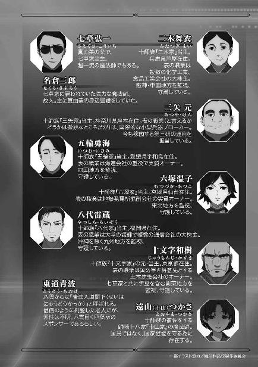

| 魔法科高校の劣等生(21) 動乱の序章編〈上〉 (電撃文庫) | |
| 佐島 勤 | |
| 株式会社KADOKAWA (2017) | |
本書（電子版）に掲載されているコンテンツ（ソフトウェア／プログラム／データ／情報を含む）の著作権およびその他の権利は、すべて株式会社ＫＡＤＯＫＡＷＡおよび正当な権利を有する第三者に帰属しています。
法律の定めがある場合または権利者の明示的な承諾がある場合を除き、これらのコンテンツを複製・転載、改変・編集、翻案・翻訳、放送・出版、公衆送信（送信可能化を含む）・再配信、販売・頒布、貸与等に使用することはできません。


［１］
そのニュースが日本に届いたのは、二〇九七年四月一日朝七時のことだった。
昨日の夜に沖縄から帰宅した達也たちも、朝の食卓でその臨時ニュースを見ていた。
「......エイプリルフールのネタではありませんよね？」
「悪質なジョークの方が良かったんだが」
恐る恐る、信じたくないという口調で訊ねる深雪に、達也は眉を顰めたままそう答えた。
達也は手許のリモコンを操作し、ダイニングの中型モニターを四分割した。別々のチャンネルのニュースが字幕で表示される。その全てが、同じ凶報を伝えていた。
「......どうやら、冗談ではないらしい」
南アメリカ大陸の旧ボリビア、サンタクルス地区、現地時間三月三十一日十七時。三ヶ月にわたり続いていたブラジル軍と独立派武装ゲリラの戦闘において、劣勢に陥ったブラジル軍が戦略級魔法『シンクロライナー・フュージョン』を使用したのだ。
「爆発の規模は推定数キロトンか......。問題は魔法が使われた状況だな。山岳部や荒野なら、被害は戦闘員だけに収まっただろうが」
「市街地や難民キャンプの近くで使われたとすれば......？」
「度々戦場になっている地域だから、住民はそれ程いないはずだが」
深雪の問い掛けに達也がそう答えた直後、ニュースはブラジル軍の公式発表を伝えた。
「......爆心地はゲリラが拠点としていたゴーストタウンの中央。犠牲者は武装ゲリラ構成員のみで、死者およそ千人か」
画面の文字を読み上げる達也の表情は暗かった。顔が青ざめてこそいないが、瞳は闇色に沈んでいる。
不安げな表情で深雪と水波が見詰める中、達也は珍しく、歯切れの悪い口調で続けた。
「その程度の人数を相手に、シンクロライナー・フュージョンの封印を解くとは思えない」
「......では、実際の犠牲者は」
「今の段階では、もっと多いとしか言えない。ただ、死傷者が戦闘員ばかりではないのは確実だろう」
「そんな!?」
達也の推測に深雪が悲鳴を上げる。
達也は右手を伸ばして、向かい側に座る深雪の左手を包み込んだ。
深雪はいつものように陶然となりはしなかった。ただ、動揺はある程度収まっていた。
「ゲリラは戦闘員とそうでない者の区別が曖昧だからな。正規軍なら補給部隊も戦闘員だが、ゲリラに対して物資や労役を提供している人々は大抵が非戦闘員に分類される」
そう言って達也は、深雪の左手に置いていた自分の右手を、彼女の頭に移動させた。
「幾ら悩んでも、今の俺たちにはどうしようもない」
達也が深雪の髪をかき乱した。やっていることは少々乱暴だが、彼の手つきは優しい。
髪を手櫛で直す深雪は、達也を軽く睨んで見せながらも、嬉しそうだった。
深雪が落ち着いたのを見て、達也は再びニュースを映しているモニターへ目を向けた。
「それにしてもブラジルは、随分あっさり戦略級魔法の使用を認めたな......」
達也が独り言のように呟く。
それは単なる疑問の表明でしかなかったが、深雪には何故か、「戦略級魔法があっさり使われる時代になる」という不吉な予言に聞こえた。
急に背筋を走った寒気に、深雪は小さく身体を震わせた。
◇ ◇ ◇
朝九時。達也たち三人は春休みにも拘わらず学校に来ていた。
戦略級魔法使用に関する続報が気になったが、あいにくと予定が入っていた。前日まで沖縄にいた所為で準備が遅れ気味の、入学式の打ち合わせだ。
あずさたちが卒業し、あと数日で、達也たちは三年生──最上級生になる。生徒会の代替わりは例年どおり去年の十月に済んでいたが、これで名実共に一高生徒のトップだ。
だからといって達也には、特に感慨めいたものはなかった。深雪のように、一層の責任感を静かに燃やすこともない。ただ面倒事はなるべく起こらないでくれと願うばかりである。
達也、深雪、水波の順番に入った生徒会室には、既に泉美と香澄、そして新入生総代を務める新一年生が待っていた。なお香澄は、都合がつかなかった風紀委員長の代理だ。
新入生総代の三矢詩奈は泉美たちと面識があるようで、達也たち三人が入ってきた時、楽しげにお喋りしている最中だった。
「深雪先輩、お久し振りです！ あぁ......今日も変わらずお美しい......。いえ、ますますお美しくなられて......」
しかし深雪の姿を認めた途端、泉美が座っていた椅子を蹴倒さんばかりの勢いで駆け寄ってきた。
「おはよう、泉美ちゃん。わたしがいない間、色々と準備を進めてくれてありがとう」
深雪は泉美の熱烈な歓迎にたじろぎを覚えていたが、表向きはにこやかに泉美を労った。
「深雪先輩、もったいないお言葉です！ はぁ、こんなに幸せで良いのでしょうか......」
言葉だけでなく、泉美は今にも卒倒しそうな有様だ。
「泉美ちゃん、大袈裟よ」
深雪は笑いながら泉美をたしなめたが、それ程強い調子ではなかった。口で言ったくらいでは何ともならないと、深雪も既に学習していた。
「香澄ちゃんもおはよう。吉田君の代理、ご苦労様」
「おはようございます、会長、司波先輩、桜井さん」
舞い上がっている双子の妹に代わり、香澄が下級生らしい礼儀に則った挨拶を返す。それに達也と水波が応え、一段落ついた空気の中で、深雪が新入生に目を向けた。
「おはようございます。はじめまして、三矢さん。第一高校生徒会長の司波深雪です」
「おはようございます。三矢詩奈です。はじめまして」
にっこりと笑い掛けた深雪に、緊張した表情で詩奈がお辞儀をする。焦げ茶色の、綿毛のようなふんわりとした髪が軽く跳ねて、彼女が着けているヘッドホンに引っ掛かる。顔を上げた詩奈は「あっ......！」という表情を浮かべ、慌ててヘッドホンを外そうとした。
しかし深雪がそれを制した。
「良いんですよ。事情は承知していますから」
「......済みません。入学式では目立たない物にします」
恥ずかしそうにそう言って詩奈が俯く。しかし、もうすぐ入学する学校の、上級生の前でヘッドホンをつけたままだったことを、深雪だけでなく達也も水波も咎めなかった。以前から付き合いがある香澄と泉美は言う迄もなく、この場にいる全員が詩奈の事情を知っているからだ。
詩奈は音楽やラジオを聞いているのではない。彼女のヘッドホンは、一種の耳栓だ。だからヘッドホンというよりむしろヘッドバンド式イヤーマフと呼ぶべきかもしれない。イヤーマフと違うのは、カップの部分にマイクとスピーカーを内蔵している点だ。何故詩奈がこんな物を付けているのかというと、彼女は大きな音に耐えられない人間だからである。
聴覚過敏とは少し違う。彼女の場合は、聴覚が本当に鋭敏すぎるのだ。普通の人間には決して聞き取れないような微かな空気の振動ですら、詩奈は音として聞き取ってしまう。
彼女のこの「症状」は魔法力の発達と共に表面化してきたもので、美月の霊子放射光過敏症と同じく、魔法的な知覚力に起因するものと考えられている。
ただし、美月と違って詩奈の場合、対象になるのは想子や霊子の波動ではなく物理的な音だ。魔法的感覚の制御の問題ではない。
彼女を診断した魔法研究者は「自分の聴覚を強化する魔法を常時、無意識に使っているのだろう」と推測したが、魔法が発動している兆候は観測できなかった。逆に、魔法で強制的に聴覚を弱体化させると、今度は魔法に対する感覚まで麻痺してしまうという副作用が現れた。日常生活を送るだけならこれで解決だが、魔法師としては大きすぎるデメリットだ。
結局、音をほぼ完全に遮断し、かつ外部の音を詩奈が耐えられる音量に自動調節して伝えるスピーカーを仕込んだ耳栓を使用することで、日常生活と魔法師としての人生を両立させているのである。
公的な性質が強い場に出る時には、詩奈は髪に隠れる、ネックバンド式イヤーマフの形をした物を使う。ただ外部の音を拾うマイクとそれを適切な音量に調節するスピーカーを組み込んだ物だから、どうしてもある程度の重量が必要で、長時間の着用には外耳に負荷が掛からないヘッドバンド式の方が楽なのだ。
「入学式では、余り目立たない物の方が良いだろう。だが普段は学校でもそれで構わないと思う。教員を含め、そんなことを気にする者は当校にいないはずだ。だから今も、気にする必要は無い」
「はい......。ありがとうございます、司波先輩」
達也のセリフは、打ち合わせを円滑に進める為のものだった。ヘッドホンの使用を「普段は」という条件で認めることを伝えるという目的もあった。厳しいことを言われたと勘違いされる可能性がある内容なので、深雪に言わせない方が良いと判断してのことだ。
だが詩奈は、達也が彼女に気を遣ったと解釈したようで、申し訳なさそうな笑みと共に頭を下げた。深雪程ではないが、達也の目から見ても中々きれいなお辞儀だった。
それでも達也の発言には、詩奈の「失敗したかも」という不安を取り除く効果が多少なりともあった。その後始まった入学式の打ち合わせは和やかな雰囲気で進んだ。
「答辞の長さはこの位でちょうど良いと思います」
「はい」
深雪の言葉に、詩奈が首を動かさずに頷く。
少し表情が硬いのは、まだ慣れていないから仕方が無いだろう。
「暗記に自信がなければ、原稿は手に持っていても構いませんから」
「いえ、多分......大丈夫です」
「深雪先輩、問題ありませんよ。詩奈ちゃんは記憶力が良いですから」
泉美のフォローに、詩奈が控えめに微笑む。
そんな風に詩奈との打ち合わせは順調に進み、予定の三分の二の時間で終わった。深雪が不在の間、泉美が準備をしっかり進めておいたからだろう。
詩奈も段取りを良く吞み込んでいて、一度説明したことを繰り返す必要は無かった。香澄と泉美から事前に、今日決めるべき事柄を詳しく聞いていたのだと思われる。
同じ十師族で年齢も一つ違い。家も同じ首都圏ということもあり、詩奈は香澄たちとかなり親しくしているようだ。三矢家の兄弟姉妹の中では詩奈一人だけ歳が離れているということもあって、余計に交流の機会が多かったのかもしれない。
とにかく、詩奈との打ち合わせは十一時で終了した。深雪たち在校生にはまだ学校に残ってやるべきことがある。だが詩奈は、今日のところはこれでお役御免だ。
「詩奈ちゃん、お疲れさまでした。今日はもう良いですよ」
泉美が声を掛けた後、
「本当は詩奈と一緒にランチしようと思ってたんだけど、まだちょっと早いね」
香澄が「残念」と言いながら詩奈に笑い掛ける。
すると詩奈が、少し気後れした感じの笑みを返した。
「あの、私、皆さんとお近づきの印にと思ってこんな物を作ってきたんですけど......」
そう言って詩奈が、足下に置いていたスポーツバッグからピクニックに使われるようなバスケットを取り出した。
詩奈がバスケットの蓋を開ける。そこには、片手に乗るくらいの大きさのパンケーキサンドが一つ一つワックスペーパーに包まれて整然と収まっていた。具がはみ出て手を汚さない為の工夫なのか、楕円形に焼いた生地を二つ折りにしてクリームとフルーツを挟んだ物だ。
「うわっ、今日のも美味しそう！」
香澄が思わず歓声を上げたとおり、形も彩りも微かに漂う匂いも、実に食欲をそそる出来映えだった。
「詩奈ちゃんは本当にお菓子を作るのが上手ですね」
泉美もにこにこしながらバスケットをのぞき込んでいる。
「深雪先輩、せっかくですからご馳走になりませんか」
「よろしければ、是非」
泉美のセリフを受けて、詩奈がはにかんだ笑顔で深雪にそう申し出た。
深雪は達也が目で頷くのを見て、
「ありがとう、三矢さん。では、お言葉に甘えて」
パンケーキを一つ手に取り、そのまま口に運んだ。
「美味しいわ」
クリームをたっぷり挟んだパンケーキサンドを一口囓ったばかりであるにも拘わらず、唇にも歯にもその痕跡を残していない深雪がにっこりと詩奈に笑い掛ける。
「あの、司波先輩も如何ですか？ それとも、甘い物はお嫌いでしたでしょうか？」
詩奈は目元を赤くしながら、達也にも怖ず怖ずと勧めた。
「いただこう」
達也はチョコレートクリームを挟んだ物を手に取り、二口で口の中に収める。ちょうど飲み物を持って来たピクシーから紙ナプキンを受け取り唇を拭った達也の顔は、少なくとも無理をしているという表情ではなかった。
詩奈がホッと表情を緩める。
「水波もいただくと良い」
達也の声に、水波がバスケットへ手を伸ばす。
それを合図にしたように、泉美と香澄、それから詩奈本人も、次々にパンケーキサンドを手に取った。
◇ ◇ ◇
余計な真似かもしれないと懸念した手作りお菓子が予想以上に好評で、校舎を後にした詩奈の足取りは軽かった。深雪に会うまでは緊張と不安に満たされていた彼女の意識も、今では「案外上手くやっていけるのではないか」という楽観に傾いている。
最初からそんなに怯える必要も無かったのかもしれないが、何と言っても、あの生徒会長は四葉家の後継者だ。
同じ十師族であっても四葉家は別格。別格に恐ろしい。世間では四葉家と七草家が日本魔法界の双璧と評価されているが、魔法の実力は四葉家が抜きん出ている。七草家は数に物を言わせた政治力で、四葉家と肩を並べているように見せ掛けているだけだ。──と、詩奈は姉や兄から聞いていた。
だから彼女は、初めて会う深雪がどんなに恐ろしい魔女なのか、内心ビクビクしていた。
深雪の容姿は、詩奈も前から知っていた。九校戦は去年、一昨年両方とも見に行っている。
だが美しすぎる姿形は、詩奈に「人間とは思えない」という印象を与えていた。
強すぎる魔法は、彼女に「人間を超えている」という恐れを植え付けた。
今年の正月、司波深雪が実は四葉の直系で次期当主だと聞いて、詩奈は一片の意外感も覚えなかった。ただ深く納得した。「極東の魔王」の後継者は、やはり「魔の王女」だった。そんな思いを自然に懐いた。
しかし間近に向かい合い言葉を交わすと、その印象は随分的外れなものに思われた。
美しさはもちろんのこと、気品と威厳もただ者ではない。まさしく王女、いや、女王の風格だった。
だが、詩奈が先入観として懐いていた魔性の恐ろしさは、今日、感じなかった。桁外れに美しく、桁外れに強いという点をのぞけば、驚く程普通だった。強い力を持つ魔法師にありがちなエキセントリックさが見られず、少し拍子抜けしたくらいだ。
対人関係の心配事が全て無くなったわけではない。もう一人の四葉、達也には正体不明の威圧感と底知れぬ不気味さを覚えた。
しかしそれも、自分を害するものではないと詩奈は感じていた。──敵に回らない限り。味方にできれば、むしろこの上なく心強い。三矢家が四葉家と敵対する愚を犯さない限り、無闇に怖がる必要は無い。そう分かったことも、詩奈の心を軽くしていた。
不安と緊張の反動で、少々浮かれていたのかもしれない。校門を出る時に「詩奈」と声を掛けられて、彼女は危うく跳び上がりそうになった。
「侍郎くん......！」
辛うじて自ら奇行を演じるのは避けたが、声が上ずることまでは止められない。
「詩奈、お疲れ」
だが詩奈に声を掛けた、今時珍しい長髪の少年は、彼女の大袈裟な慌てようを気に掛けていなかった。少なくとも、そんな素振りは見せていない。
「こんな時間まで待っていてくれたの？ 先に帰って良いって言ったのに」
「予想より早かった。それに護衛の俺が、主人のお前を置いて帰れるわけないだろ」
「護衛とか、もう良いのに......」
少しふて腐れた感じの少年に、詩奈は困惑の表情を浮かべている。
少年の名前は矢車侍郎。詩奈とは誕生日が二日違いで、生まれた時からの付き合いという筋金入りの幼馴染みだ。──なお、生まれたのは詩奈の方が早い。
矢車家は古式魔法師の家系だが、三十年以上前から三矢家と雇用関係にある。三矢家が雇い主で、矢車家は家族ぐるみで用心棒を兼ねた家事使用人という立場だ。
歳が同じという好条件もあって、侍郎少年は詩奈の護衛になるはずだった。だが魔法科高校入学を前にして、その予定は取り消された。
侍郎の魔法力が、思うように伸びなかったのだ。
彼も詩奈と一緒に、一高生になる。ただし、二科生として。
侍郎の両親は、受験する高校の変更を息子に勧めた。侍郎には兄と姉が一人ずついるが、二人とも魔法科高校に通わなかった。元々、矢車家の魔法は現代魔法流の教育に合わないのだ。兄と姉の魔法教育は、今も稼働中の第三研の一角を借りて祖父母により行われている。
それにも拘わらず侍郎が魔法科高校を志望していたのは、詩奈の身近にいて、彼女を守る為だ。しかし侍郎には肝腎の、魔法の才能が無かった。現代魔法師としてだけでなく、古式魔法師としても素質が乏しかった。
それでも侍郎は一高を受験した。本人は「どうせ普通の人間としては生きられないから」と偽悪的に嘯いていたが、詩奈の為であることは家族にも、三矢家の人々にも明らかだった。
結局、侍郎に詩奈護衛の役目は与えられなかったが、詩奈と高校生活を共にすることは認められた。今までどおり、詩奈の側にいることは許されたのだった。
「それで、どうだった？」
詩奈の「護衛は要らない」というセリフは無視して──本当はそういう意味ではなかったが、侍郎はこう解釈した──、駅に向かう歩みを再開した幼馴染みの少女に侍郎は訊ねた。
「どうって？」
ただ質問が抽象的すぎて、詩奈は何を訊ねられているのか分からなかった。幼馴染みだからといって、何時でもツーカーとは限らない。
「どうって......だから」
だが侍郎は、細かいことまで言葉にしなくても当然理解してもらえると思っていたようだ。具体的に自分は何を訊きたいのか今更のように考え始めた侍郎は、ひどくもどかしそうだった。
「ええと......四葉家の人に会ってみてどうだった、ってことだよ。詩奈、今朝は凄く不安そうにしてただろ」
「うん、それなら大丈夫。司波先輩の方はともかく、司波会長は優しそうな人だったよ」
「ともかくって......それ、大丈夫なのか？」
侍郎が心配──というより警戒──していたのは、深雪ではなく達也の方だ。何と言っても詩奈は女の子で、美少女なのだから。どんなに美人な恋人がいても、美少女に関心が無い男はいないというのが侍郎の持論だ。「司波先輩の方はともかく」などと言われれば、彼が懸念を懐くのは不可避の流れだった。
「大丈夫かって、司波先輩のこと？」
「そうだよ。危なそうな人だったら、一人で会わない方が......」
侍郎にとっては大真面目なセリフだった。
だが詩奈はたわいもない冗談を耳にしたように、軽くクスッと笑った。
「侍郎くん、私、司波先輩じゃなくても男の人と二人だけで会ったりしないよ？」
侍郎は「そういうことじゃない！」と向きになって反論しようとした。
だが、詩奈が囁きかけるような声でこう付け加える方が早かった。
「でも、心配してくれているのね。ありがと」
「お、俺が詩奈の心配をするのは当たり前のことだ。俺はお前の、護衛なんだからな」
照れ臭そうに目を逸らしながら、侍郎はぶっきらぼうな口調でそう答えた。
詩奈は侍郎から見えないよう、こっそり笑った。彼が自分の護衛を自称していることについては、何もコメントしなかった。
◇ ◇ ◇
詩奈の差し入れで午前のティータイムを楽しんだ分、遅めにした昼食の席で、達也はシンクロライナー・フュージョンの使用に関するニュースをモニターに出すようピクシーに命じた。
香澄や泉美からの反論も無い。皆、この大事件が気になっている様子だ。いつもは小さく分割されている壁面ディスプレイの画面が大きく映し出した最新のニュース録画に、達也以外の四人は思わず箸を止めていた。
「どの・ニュースチャンネルも・ほぼ同じ・内容を・伝えています」
ピクシーがパラサイトに由来するテレパシーではなく、機械のボディに備わったスピーカーで説明を付け加える。喋り方が余り上達していないのは、達也がこの方面では、魔法技術分野と違って、所詮素人だからだ。
それでも理解するだけなら支障はない。達也はピクシーに頷きを返して、すぐに目を画面へ戻した。
もっとも、モニターを凝視していなくても、必要な情報は耳から得られる。
ニュースキャスターが告げた被害者の最新データは死者およそ九千人、負傷者およそ三千人。今朝の一報目に比べて大幅に増えている。状況が明らかになるにつれて犠牲者数が増大するのはどんな事件でもほぼ共通することとはいえ、今朝の時点では死者およそ千人と報道されていた。この大きすぎる差は、実情隠蔽の試みと、それが上手くいかなかったことを窺わせる。
大規模破壊兵器の使用には、その犠牲の大きさによって抵抗の意思を挫くという面があるはずだ。だから敵の損害を過小に宣伝するのは矛盾した行為なのだが、ブラジル政府内で意思統一がされていないのだろうか。それとも、明らかにできない種類の犠牲者だったのだろうか。
一日の戦闘で死傷者合計一万二千人という被害規模も近年では稀に見るものだが──『灼熱のハロウィン』は例外として除く──、それより死者と負傷者のバランスの悪さが達也には気になった。
シンクロライナー・フュージョンがどんな魔法なのか、その仕組みは達也も知らない。だが、どんな風に見えてどんな効果をもたらすのかは分かっている。
『ヘビィ・メタル・バースト』『リヴァイアサン』『トゥマーン・ボンバ』『シムリャー・アールミヤ』『霹靂塔』『深淵』『シンクロライナー・フュージョン』『アグニ・ダウンバースト』『オゾンサークル』『バハムート』。十三人の魔法師が使う十種類の戦略級魔法の内、効果も見た目も明かされていないのは新ソ連のイーゴリ・アンドレイビッチ・ベゾブラゾフが使う『トゥマーン・ボンバ』だけだ。他は発動時の見た目と効果、あるいはそのどちらか片方が判明している。
シンクロライナー・フュージョンはこれらの公開された戦略級魔法の中でも、その性質が良く知られている魔法だ。発動している状態が観測しやすい、言い替えれば発動過程が派手すぎて隠しにくいのと、ブラジル軍が積極的にデモンストレーションを行っていた為である。
シンクロライナー・フュージョンは数キロから数十キロの距離を置いて東西から高密度の水素プラズマ雲を向かい合わせに加速する。そして攻撃目標である中間地点の上空でプラズマ雲を衝突させることにより核融合反応を引き起こし、その熱と衝撃波で対象地域を破壊するという形を取る。
戦略核に匹敵するだけの威力を得る為には、プラズマ雲を構成する無数の陽子を一つ一つ、ほぼ同時に正面衝突させる必要がある。一体どうやってそんな細かい操作を行っているのかという肝腎な部分は判明していないが、その効果は純粋水素核融合爆弾と同じだ。破壊力は爆心地からの距離の三乗に反比例する。つまり、プラズマ雲の衝突地点から遠ざかるにつれて、急激に殺傷力が下がっていくということだ。
それにも拘わらず今回の戦闘においては、死者の数が負傷者数を圧倒的に上回っている。元々平均人口密度が低い地域において、大量の犠牲者、そして死者の比率の極端な高さ。これが敵兵力集結の状態を狙ってのものなら問題無い。いや、人道的には問題大有りだが、軍事的にはこの結果をもたらした魔法師が責められるべきことではない。
だがこれがもし、大規模な難民キャンプの中央部を狙ったものだとしたら。
今回戦場になったのは旧ボリビア、サンタクルス地区。第三次世界大戦とも呼ばれる世界的な地域紛争の泥沼の中で、一旦はブラジルが領土に組み込んだものの、現在は独立派武装ゲリラが実質的に支配している地域だ。
このエリアでは現在もブラジル軍とゲリラとの間で断続的に戦闘が繰り広げられており、その煽りを受けて大勢の人々が難民化している。今回の戦闘の犠牲者は、その難民たちだった可能性がある。
ゲリラを敵とする戦闘においては、決してあり得ないことではない。むしろ、残念なことに、あり得る作戦だ。そして、そのような非戦闘員大量殺戮が意図的に行われたとしたら、命令を下した者だけでなく実行者も非難を免れない。
その場合も、ブラジル軍戦略級魔法師ミゲル・ディアスが非難の標的となるだけならまだ良い。だが、魔法師全般に人道の敵というレッテルが貼られる展開も十分に考えられる。
この不吉な可能性を見てしまったことが、達也を憂鬱にさせていた。
昼食が終わりニュースを消しても生徒会室は暗いムードに包まれたままだったが、入学式の準備作業はテキパキと進んだ。達也、深雪は言うに及ばず、香澄も泉美も水波も芯の強さを見せつけた格好だ。
「今日はここまでにしましょう」
深雪が本日の作業終了を告げた時、時刻はまだ十六時を少し回ったところだった。
「あの、深雪先輩」
帰り支度をしている最中、泉美が躊躇いがちに深雪へ話し掛ける。
「泉美ちゃん、何かしら」
「光井先輩のお加減は、如何なのでしょうか？ お見舞いにうかがっても構わないようでしたら......」
ほのかは本日、病欠である。久米島から東京に戻ってすぐ、熱を出したということだ。幾ら南国・沖縄といっても、水着姿でうろうろするのはやはり、早すぎたということだろう。
「今日一日ゆっくりしていれば治るそうよ。お見舞いは遠慮したいというメールが来ていたわ」
ほのかが自分でそう言っているだけなら、深雪も「強がっているのでは」と心配になったかもしれない。だが、この連絡をくれたのは雫だ。雫がほのかに無理をさせるはずはないから、一日で治るというのは信用しても良いと深雪は考えていた。
それに、泉美がお見舞いに行くとすれば当然深雪も同行することになり、必然的に達也もついてくる。重病や重傷ならともかく、不注意で風邪をひいて寝ている姿を自分なら達也に見せたくないだろう、と深雪は考えた。きっと、ほのかも同じなのだろう、とも。
「そうですか......」
「もし、明日になっても熱が下がらないようならお見舞いに行こうと思っているの。泉美ちゃんもそうしたら？」
「ご一緒してもよろしいのですか!?」
「ええ、もちろんよ」
「分かりました！ 是非、そのように！」
少し目的が変わっているような気もするが、泉美を上手く説得できたことに深雪も一安心していた。
泉美がピント外れにはしゃいだ御蔭で、戦略級魔法による大量死傷者発生のニュースに沈んでいた気分も、少し晴れた。
◇ ◇ ◇
深雪たちはシンクロライナー・フュージョン使用の衝撃から意識を逸らすことができたが、魔法師を危険視する「魔法が使えない人々」は、そういうわけにはいかなかった。
これまでの反魔法師運動には、社会に対する不平不満のはけ口という側面が多分にあった。魔法という力に対する恐れは確かにあったが、魔法師は政府によってコントロールされていると高を括っている部分が存在した。
しかし、政府が戦略級魔法の使用を公式に認めたことで、魔法を使えない人々の恐怖は一気に顕在化した。
二〇九五年十月末の、大亜連合海軍基地を壊滅させた攻撃について、日本政府は詳細を一切明らかにしていない。外交チャンネルを通じた他国からの正式な問い合わせに対しても、マスコミからの情報開示請求に対しても、「国防上の機密」の一言で回答を拒んでいる。
あの大破壊に戦略級魔法が使用されたことは状況から見て明らかだったが、日本政府はそれを認めなかった。そこには日本の軍事的な切り札になり得る「戦略級魔法師・大黒竜也特尉」の存在を秘匿するという意図が当然にあったが、同時に大量破壊・大量殺戮の魔法を実戦で使用することを正当化するつもりはないという側面もあった。それを認めてしまえば、他国から戦略級魔法による攻撃を受けるリスクも高まるからだ。
誰もが知っている秘密であっても、当事者がそれを認めないことには意味がある。公然と認めないということは、公然と使用しないということだ。二〇九五年十月三十一日のように、いざという時には使うとしても、決断に強い心理的なストッパーが掛かる。
実は公開されている大規模破壊兵器にも、同じような歯止めが存在する。大量破壊兵器を自分からは使用しないという建前だ。戦略級魔法も、この建前により実戦投入が控えられてきた。
しかし今回ブラジル軍は、戦略級魔法を他の兵器と同じように使用すると態度で示した。そういう声明を出したわけではなかったが、シンクロライナー・フュージョンの使用をあっさり認めるということは、そう言っているも同然だ。あの魔法は隠蔽が難しいという事情は、使用したことを認める理由の一つにはなっても決定的な要因ではない。戦略級魔法の使用は紛争解決の手段としてタブーではないとブラジル政府が判断した。それがシンクロライナー・フュージョンの使用と、それを認める公式声明をもたらしたのだ。
軍事の世界では、『灼熱のハロウィン』により戦略級魔法使用に対する心理的障壁が大きく揺らいでいた。その障壁が今回、政治的にも決定的に崩壊した。それを理解した人々は、今まで以上に激しい反応を示した。
北アメリカ大陸合衆国（ＵＳＮＡ）ニューメキシコ州ロズウェル郊外。現地時間四月一日十五時。日本時間四月二日六時。
「メキシコで叛乱ですって!?」
ＵＳＮＡ軍統合参謀本部直属魔法師部隊スターズの本部に少女の叫び声が響き渡った。
「エイプリルフールのジョークにしても質が悪いですよ、シルヴィ」
日本における秘密作戦以来、自分の副官のような地位に収まったシルヴィア・マーキュリー・ファースト准尉に対し、総隊長アンジェリーナ・シリウス少佐は無理に浮かべた、引きつった笑顔を向けた。
リーナはシルヴィアが人の悪い笑顔で「ばれましたか」と答えることを期待していた。
しかしシルヴィアは微かに微笑むこともせず、真面目な表情で、
「事実です、総隊長」
というセリフを口にした。
「......本当に？」
「現地時間九時五十分、北メキシコ州モンテレイで反魔法師団体による大規模な暴動が発生。これを鎮圧するべく州軍が出動しましたが、その一部が突如友軍に向けて発砲。そのまま暴徒に合流したとのことです。なお発砲は威嚇射撃だったようで、これによる死傷者はありません」
恐る恐る訊ねるリーナに、シルヴィアは事務的な口調を作って答える。
ちなみに『北メキシコ州』というのはメキシコがＵＳＮＡに吸収された際にできた行政区分だ。旧メキシコ合衆国は北回帰線以北でバハ・カリフォルニア半島を含む北メキシコ州、メキシコシティを中心とする南メキシコ州、テワンテペク地峡からユカタン半島に掛けての東メキシコ州に再編されていた。
「州軍が暴徒に合流!? 一体何故そんなことに......」
「州軍と一緒にウィズガードが出動したのがまずかったようです」
「反魔法師団体鎮圧に、低レベル魔法師で構成されたウィズガードを派遣したんですか!? そんなの、火に油を注ぐようなものじゃないですか！」
州軍（ナショナルガード）は州政府に所属する、魔法師兵力を含まない治安維持部隊。
それに対してウィズガードはスターズ候補になれなかった低レベル魔法師の兵士を集めて編成した、連邦政府指揮下の国内向け治安維持部隊だ。
元々の性質からしてこの二つの組織は、ただでさえ仲がよろしくない。それに加えて、反魔法師暴動の鎮圧に魔法師で構成されたウィズガードを差し向けたのだ。政府の誰かが、故意に騒ぎを大きくしたのではないかと勘繰りたくすらなってしまう。
「誰ですか、そんな命令を出したのは!? 一体何を考えているんです！」
「ウィズガードに対する出動命令がどのレベルからどういう意図で出されたのかは分かりません。ただ、事態はその者の思惑を超えて推移していると思われます」
「......どういうことですか？」
シルヴィアがあくまでも淡々と答えを返し続けたことで、リーナも少し頭が冷えた様子だ。驚いたり癇癪を起こしたりするのではなく、事件に対して冷静に向き合おうという姿勢を見せ始めた。
「任務を放棄し暴動に加わった州兵グループは、元々魔法師に対して否定的な思想を持っていたようです。最初から反魔法師団体に同情的で、穏便に鎮圧しようと考えていたのでしょう。暴動を起こした側ともある程度の意思疎通ができていたようです」
「そこにウィズガードがしゃしゃり出て、強硬手段に訴えた......？」
「はい、残念ながら」
「ウィズガードの指揮官はバカなのですか？」
思わず本音を漏らしたリーナを、シルヴィアはたしなめなかった。シルヴィアもそう感じていたからだ。ウィズガードの名称が「ウィザードガード」を縮めたものであり、ウィザードという言葉が「善の賢者」というニュアンスを持つことを考えると、名前負けしている感が否めない。
「余所者のウィズガードに対する反発もあったのでしょう。ウィズガードが強硬手段に出た段階で、反魔法師団体のメンバーだけでなく地元の市民も次々と暴動に加わり、現在モンテレイの主要行政機関は暴徒と叛徒の手に落ちています」
ロズウェルとモンテレイの時差は一時間。モンテレイは現在十六時で、暴動発生から六時間が経過している。州軍もウィズガードも暴動発生直後に出動したわけではなく、現地到着まで四、五時間は掛かっているから、実質的に一時間前後で行政機関が占拠されたことになる。
「何てこと......」
シルヴィアにそう説明されて、リーナはしばらく二の句を継げなかった。
「......それで、統合参謀本部は私たちに、叛乱を鎮圧せよと？」
憂いを帯びた表情で、それでもしっかりとシルヴィアの目を見詰めて、リーナが彼女に与えられる任務について訊ねる。
「いいえ、さすがに参謀本部もそこまで無茶なことは言ってきませんでした」
それを聞いて、リーナが緊張に強張った表情を少し弛める。
スターズは治安維持部隊ではない。反逆魔法師を処分するという国内での任務もあるが、基本はあくまで外国相手の軍隊だ。それを考えれば叛乱鎮圧の任務が回ってくる可能性は低いのだが、リーナは同じＵＳＮＡ国民を傷つける任務でないと聞いて安堵していた。
しかし、ホッとするには少々気が早過ぎた。
「参謀本部からの指令は、包囲された状態にあるウィズガードが暴発する前に彼らを救出せよ、という内容です。その際、叛乱部隊を含め国民にはなるべく怪我をさせないように、とのことでした」
「簡単に言ってくれますね......。同胞を傷つけずに済むのはありがたいことですけど」
リーナは片手で額を押さえながら、気休めを口にする。同じアメリカ人に──元メキシコ人であろうと、今はアメリカ人である──銃口や切っ先を向けなくて良いのは嬉しかったが、それにより任務の難易度が大きくはね上がることはきちんと理解していた。
「派遣する人選を含めて、ウォーカー司令がすぐに打ち合わせしたいとのことですが」
ポール・ウォーカー大佐はこの基地の司令官だ。スターズの指揮官は総隊長のリーナだが、ウォーカー司令は非魔法師としてスターズを管理する立場にある。
「大佐殿が？ 場所はどちらで？」
「司令官室でお待ちです。カノープス少佐もすぐに来られるそうです」
カノープスはスターズ第一隊隊長で、リーナに次ぐスターズのナンバーツー。
「ベンにも連絡済みなんですね。分かりました。五分でうかがうと伝えてください」
魔法師としては超一流でも軍指揮官としてはキャリアもスキルもまるで足りていないリーナは、部隊運営の実務をカノープスに大きく頼っている。打ち明けた話、こういう重要な案件では、カノープスの助言が無ければリーナは何も決められない。ウォーカーが声を掛けなければ、リーナの方からカノープスに同席を頼んだだろう。
「了解しました、総隊長殿」
シルヴィアが敬礼をして更衣室から出て行く。
訓練で汚れた野戦服を脱いでタンクトップ姿だったリーナは、中断していた着替えを終える為に急いで手を動かした。
ドイツ連邦、首都ベルリン。現地時間四月三日十時三十分。日本時間同日十七時三十分。
ベルリン大学（ベルリン自由大学から改称）では魔法師排斥派の学生と魔法師共存派の学生がそれぞれデモ隊を結成し、構内で激しく衝突していた。
暴力行為は発生していない。今のところ双方とも行儀良く（？）相手を罵っているだけだ。しかしこの熱気では、何時小競り合いが発生してもおかしくない。本格的な武力闘争に発展する可能性も否定できない。
それに、魔法師排斥派の主張だけでなく、魔法師を受け容れてやるべきだという共存派の主張も、魔法師にとっては居心地が悪いものだった。
口論が論理的とは言えない口喧嘩に変容しているのを、カーラ・シュミット教授は苦々しい表情で自分の研究室から見ていた。ただし、モニター越しだ。窓からのぞいているのではない。窓際に立とうものなら、何が飛んでくるか分からない。
銃弾どころか、砲弾が跳んでくるかもしれない。シュミット教授はここ数ヵ月間の経験からそれを学んでいた。
彼女がモニターから目を離したちょうどその時、ヴィジホンの呼び出しサインが瞬いた。
シュミットは音声で遠隔操作するのではなく、自分の手でコンソールの応答スイッチを押した。
『おはよう、シュミット教授。ご機嫌は如何ですかな？』
「マクロード教授......ご無沙汰しています。私はお蔭様で、肉体的には健康です」
相手の名を呼んだ後、わずかに間が開いたのは、その人物が電話を掛けてきたのが随分久し振りで、意外だったからだ。だがすぐにシュミットは、何でもない顔で応えを返した。
「教授は如何ですか？」
『もう歳ですが、幸い特に悪いところはありません。それからシュミット教授、以前にも申し上げたとおり私の勤務先は大学ではなく、今の私は大学教授ではありませんが』
マクロードは本気で抗議しているのではない。これはジョークみたいなもので、画面の中の彼の顔も温和な笑みを浮かべている。
「我が国におけるヘル・マクロードの教授資格は、今も失効しておりません。当大学は、何時でも教授を歓迎申し上げると思います」
しかしシュミットはニコリともせず、生真面目な口調も崩さなかった。
『我がブリテンの大学も、貴女ならば何時でも歓迎すると思いますよ』
マクロードに気を悪くした様子は無い。ただ軽口めいたこのセリフには、それまでに無かった意地の悪さのようなものが混ざっていた。
『ベルリン大学は今、大変なことになっているようですね』
「ご存じでしたか......」
呟くように応えたシュミットは、驚いているというより、恥ずかしそうな表情だ。
『こちらでもニュースになっていますよ。今も現場の様子が中継されています』
「大学は取材をお断りしているはずですが......」
シュミットが諦め混じりに抗議する。しかし、撮影しているのはマクロードの関係者ではないから彼に何を言っても最初から意味が無い。
『報道の自由は民主主義の基本なのだそうです。インタビューできなくても、カメラに収める方法は幾らでもありますから』
カメラを前に、シュミットが大きくため息を吐く。マクロードに八つ当たりしても無意味だということは、彼女にも最初から分かっている。
「教授。マスコミの存在意義について私と議論する為にお電話をくださったのですか？」
ただ、こうして自分の貴重な研究時間を取られた上、既に承知している不快な現状を改めて突きつけられていることに、シュミットは理不尽さを覚えていたのだった。
『これは申し訳ない。少々無駄話が過ぎたようです』
彼女が本格的に機嫌を傾けつつあると、マクロードにも分かったのだろう。彼は画面の中で居住まいを正した。
『シュミット教授。ブリテンに亡命しませんか？』
「教授」
『これは冗談ではありません。本気で、お誘いしています』
不快感をむき出しにしたシュミットのセリフを、マクロードは真面目な声音で遮った。
「冗談でないなら、余計に質が悪いと思いますが。貴方や私の立場で亡命など許されるはずがないでしょう」
カーラ・シュミットはウィリアム・マクロードと同じ、国家公認戦略級魔法師。『十三使徒』の一人だ。
個人で国の防衛を支える柱となっている存在。
その価値は『灼熱のハロウィン』以来、ますます強く認識されている。二〇九五年十月三十日以前であれば、もしかしたら亡命も可能だったかもしれない。だがあの大事件から一年半しか経っていない今日、戦略級魔法師が所属する国家を離れるなど政府が絶対に認めない。
『今のドイツは貴女にとって余り居心地の良い場所ではないと思いますが』
「......随分とはっきり仰いますね、教授」
『失礼。しかし、その状況が分かっているなら、まずご自分のことを考えるべきでしょう。魔法師は純粋な人間ではないから、その権利は大幅に制限されるべきだと主張する、人種主義の亜流思想を掲げる政党が若年層に支持を広げる一方で』
マクロードが言葉を切ったのは、シュミットが辛そうに眉を顰めたからだ。同じドイツ人として、論理的思考を放棄し煽動に身を委ねる若者たちの軽薄で無責任な姿は見るに堪えないものなのだろう。
しかしマクロードに、ここで話を止めるつもりはなかった。
『魔法は国家の為の力であり、魔法師はただひたすら国家に尽くすべきだという軍部の影響力が日に日に勢力を増している中で、魔法の平和利用に本気で取り組んでいる貴女のような魔法研究者は居場所を失いつつあるのではありませんか』
シュミットは、マクロードの指摘に反論できなかった。
それは肯定に等しかった。
『幸い我がブリテンは、過激な反魔法主義思想を早い段階から取り締まってきたことで、国民間の対立はほとんど見られなくなっています』
「貴国は反魔法主義者を地域的に隔離しただけではありませんでしたか」
『そうですね。一緒にいられないなら、住む場所を離すのが一番確実です』
これは、シュミットとしては精一杯の皮肉だったが、マクロードにはまるで効果が無かった。
『ですがそれも一時的なことです。彼らが共存を認めれば、いつでも元の家に戻ることができます。我がブリテンでは、魔法師にも魔法師でない者にも、国王陛下の名の下に等しく機会が与えられているのです』
マクロードの言葉は、今のカーラ・シュミットにとって、大変甘美なものに聞こえた。
「......結構なお話ですが、やはり私は、祖国を離れられません」
だからこそ彼女は、踏み止まることができたのかもしれない。
都合が良すぎる話には、必ず裏がある。
彼女を取り巻いてきた環境は、彼女が生きてきた世界は、そんな教訓を彼女の心に深く刻みつけていた。
『そうですか。今はまだ、それでも良いでしょう。しかし、本当に研究者として生きることが難しくなったら、何時でも私を頼ってください。決して悪いようには致しません』
「お気持ちだけ、頂戴します。それではこれで」
シュミットはマクロードの返事を聞かず、逃げるようにヴィジホンを切った。
デスクに戻る途中で、外の様子を映しているモニターが目に入る。
彼女の研究室が入っている建物の外では、学生同士の取っ組み合いが始まっていた。
新ソビエト連邦黒海基地。四月四日十一時。日本時間同日十七時。
レオニード・コンドラチェンコ少将は、モスクワから特別な客を迎えていた。
「閣下、ご無沙汰しております」
「こちらこそ。ベゾブラゾフ博士、ご来訪を歓迎しますぞ」
コンドラチェンコを訪ねてきたのは、まだ四十代の若さでありながら新ソ連科学アカデミーにおける魔法研究の第一人者と認められ、また国家公認戦略級魔法師『十三使徒』の一人でもあるイーゴリ・アンドレイビッチ・ベゾブラゾフだった。公的な地位は一科学者でありながら、国内における発言力は国防大臣に匹敵すると言われている人物だ。
特別といえば、コンドラチェンコも黒海基地において特殊な立場にある。彼には黒海基地の人員と物資を自由に使う権限が与えられているが、基地司令ではない。基地の司令官は同格の少将だが、彼はその指揮に従う義務が無い。制度上、コンドラチェンコは国防大臣直属の戦略級魔法師ということになっているが、実態は首相のみが彼に命令を下すことができる。（新ソ連は大統領制を採用しておらず、政府のトップは連邦政府首相である）
コンドラチェンコはベゾブラゾフを彼の私室に招いた。正確には基地内に設けられた彼の住居の応接室に。コンドラチェンコの住居は、国際的な一流ホテルのスイートルームに匹敵する贅沢な間取りと豪華な造りで、サービスも従卒が一流ホテル以上のものを提供していた。
一つだけ難をいえば、女っ気がないことだろうか。コンドラチェンコは男色家ではないので、見目の良い従卒をつけられても別に嬉しくはない。
「博士はお吞みにならないのでしたな」
「不調法で申し訳ございません」
コンドラチェンコの問いに、ベゾブラゾフは恐縮した表情で答えた。
「何の。儂も最近は、めっきり酒に弱くなりましたのでちょうどいい」
笑いながらベゾブラゾフにそう応えて、コンドラチェンコは指を二回鳴らした。すぐに従卒が小型のサモワール（紅茶用湯沸かし器）と、ティーカップ及びヴァレニエ（果実の砂糖煮）を入れた小鉢を二つ持ってきた。
従卒がサモワールの上にセットしたティーポットから紅茶を注ぎ、ヴァレニエの小鉢と共にベゾブラゾフの前に置く。コンドラチェンコにも同様に給仕して、サモワールを二人の中間に置き、主が頷くのを確認して従卒は応接室から出て行った。
コンドラチェンコは紅茶を味見することなくサモワールからティーカップにお湯を注ぎ足し、小さなスプーンでヴァレニエを口の中に放り込んだ後、紅茶を一口含んだ。
ベゾブラゾフはヴァレニエと紅茶の味を確かめてから、ティーカップに少しお湯を足した。
二人がティーカップから手を離し、改めて向き合う。
「さて......。博士のご来訪理由を、おうかがいしてもよろしいか？」
「多分、閣下のお考えのとおりです」
ベゾブラゾフの答えに、コンドラチェンコが顔を顰めた。今日ベゾブラゾフを迎えて、初めて見せる不快の表情だ。
「やはり昨日、当基地で発生した暴動の件ですか。しかしあれは、既に解決しておりますぞ」
「承知しております。そこを案じているなら、閣下ではなく基地司令をお訪ねしています」
「なる程、それはそうだ」
コンドラチェンコは不快感を白い髭の奥に引っ込めた。
「では、何をお訊きになりたいのですかな？」
コンドラチェンコの言葉に、ベゾブラゾフは微かな躊躇を見せた。
「......私は魔法研究者であって、憲兵ではありません」
「無論、理解しています」
言い難そうにしているベゾブラゾフに対して、コンドラチェンコの返答は年齢を感じさせない明瞭なものだ。
その歯切れの良さに後押しされたのだろう。ベゾブラゾフは逡巡を振り切って本題に入った。
「ですから、暴動が起こったことに関する責任問題を追及する立場にはありません。私が解明すべきことは、昨日の暴動に関して魔法的な介入があったかどうかです」
「つまり博士は、外国、もしくは反政府勢力に属する魔法師による工作を疑っておいでなのかな？ 暴動、いえ、叛乱を煽動する精神干渉系魔法が使われたと仰る？」
「断定するつもりはありません。しかし、その可能性はあると考えています。我が国が抱える九人の戦略級魔法師の内、対外的にその存在が公表されているのは閣下と私の二人。国家公認戦略級魔法師である閣下がおられるこの基地で、何の工作も無く魔法師を敵視する叛乱が起こるというのは考え難いと思っています」
「防護服が無ければ無菌室から出ることもできないあの劣化コピーのクローンどもと同列視されるのは愉快なことではないが、ご懸念は理解できます。しかし残念ながら、考えすぎですな」
「本当ですか？」
ベゾブラゾフの反射的な一言に、コンドラチェンコはムッとした表情を浮かべた。
「儂の感覚が信用できないと仰せか？」
「失礼しました。決してそのようなつもりではありませんでした」
コンドラチェンコが示した不快感に、ベゾブラゾフは慌てて頭を下げる。
「......博士が猜疑心に囚われておいでなのは、『ドラキュラ』の暗躍を疑っておられるからでしょう」
ベゾブラゾフが間髪入れず謝罪したことで、コンドラチェンコも歩み寄りを見せた。
「ご明察、恐れ入ります」
図星を指され、ベゾブラゾフは素直に白旗を揚げた。
コンドラチェンコが言う『ドラキュラ』とは、暗殺・破壊工作を得意とするルーマニアの魔法師のコードネームだ。非合法活動の専門家だけあって、本名も分かっていない。秘匿された戦略級魔法師という噂もあるが、それも真偽不明だ。
この黒海基地はルーマニア国境に近い（黒海艦隊基地と黒海基地は別である）。それもあって、ベゾブラゾフは黒海基地で暴動が発生したと聞いた時、真っ先に『ドラキュラ』の関与を連想したのだった。
「実は儂もです」
「はっ？」
ベゾブラゾフがポカンと口を開ける。それを見て、コンドラチェンコは愉快そうに笑った。
「ですから、暴動を起こした兵士については精神干渉系魔法の痕跡を徹底的に調べさせました。首謀者クラスについては儂自身が直接取り調べております」
「そうでしたか......。どうやら私は、余計な真似をしてしまったようですね」
「どうかお気になさらず。博士もクレムリンの小心者どもに振り回されただけでしょうから。......おっと、これはご内密に」
「心得ております」
コンドラチェンコとベゾブラゾフが、二人して悪戯小僧のような笑みを浮かべる。二人の間に、和やかな空気が戻った。
「しかし閣下。昨日の暴動が国外勢力や反政府勢力の破壊工作によるものではないとすると、また別の懸念が生じませんか？」
「兵士たちの間に広がりつつある、魔法師と非魔法師の対立ですな」
コンドラチェンコのセリフに、ベゾブラゾフが頷く。
「アメリカや日本に広がっていた反魔法主義運動は、社会格差に対する不平と不満をエネルギー源にしている面がありました。しかし我が連邦に、社会格差は存在しません」
本当は「存在しないことになっている」だが、コンドラチェンコもベゾブラゾフ自身も、そんな余計なことは口にしない。
「昨日の反魔法主義者による暴動には、別の要因があると考えられます」
「然様。魔法師でない兵士は不安を覚えている。近い将来、軍で活躍するのは魔法師ばかりになり、自分たちの居場所が無くなるのではないかと恐れている」
コンドラチェンコの答えに、ベゾブラゾフが納得顔で頷いた。
「実際には、魔法師だけで軍を編成するのは不可能です。魔法師の部隊を作ることはできても、魔法師だけで前線の兵員全てを賄うわけにはいかない」
「しかしそれを兵士に理解させる為には、実際に戦場に出る機会が必要ですぞ」
コンドラチェンコの指摘に、ベゾブラゾフはもう一度頷いた。
「では、その機会を作りましょう」
「ほう......。博士、当てがあるのですか？」
コンドラチェンコは七十歳を過ぎているとは思えない強い眼光をベゾブラゾフに向けた。
「残念ながらヨーロッパ方面には、現在兵を動かす余地はありません」
ベゾブラゾフは言葉だけでなく、全身で申し訳なさそうにしている。
「ヨーロッパの軍事情勢については、博士よりも儂の方が詳しいでしょうな」
しかしそれは、余計な気遣いだった。
「そうですね。失礼しました」
「つまり、ヨーロッパ方面以外......。極東ですか？」
「ええ」
コンドラチェンコの推測に、ベゾブラゾフはもったいぶらず頷いた。
「つい先日、香港軍の士官が部下を引き連れて大亜連合から集団脱走するという事件が起きまして」
「ほう。それは初耳です」
「私も一昨日知ったばかりです。それで、その脱走兵を捕獲する為に大亜連合は日本軍との共闘に踏み切りました」
「脱走兵の目的は、日本における破壊工作か......」
「そうです。既に失敗に終わっていますが」
「なる程、理解しました。大亜連合と日本は長年の戦争状態が解消したことで、宿敵同士、手を結ぶことが可能になる程、緊張が緩んでいる。考えてみれば当然のことだ。緊張状態を永続できる人も組織も存在しない。我々は、そこにつけ込むというわけですな」
コンドラチェンコが長く伸ばした白い髭を撫でながら何度も頷いた。
「モスクワに戻ってすぐ、クレムリンに提案してみましょう。もし作戦の実行が決まれば、閣下の部下も一部をお借りすることになると思います」
「兵士には良い張り合いになるでしょう。博士、その件はむしろ儂の方からお願いします」
右膝を壊していて杖を使わなければ立てないコンドラチェンコは、座ったままベゾブラゾフに一礼した。
無論ベゾブラゾフがその程度の非礼に気分を害することはなく、老将軍に笑顔でお辞儀を返した。
◇ ◇ ◇
二〇九七年四月六日、土曜日。東京では魔法大学の入学式が華やかに行われていた。
しかし北陸臨海部は、全身の肌がひりつくような緊張感に覆われている。
昨日から佐渡近海で目撃されている不審船の所為だ。
五年前、大亜連合の沖縄侵攻と時期を同じくして、佐渡は新ソ連のものと思われる小規模部隊の上陸を許している。小規模と言っても、佐渡に駐留していた守備隊を蹂躙し、島の重要施設を占拠する兵力を有していた。その際、多くの民間人が犠牲になっている。島内の魔法研究所の所員だった吉祥寺の両親も、この時の戦闘に巻き込まれ命を落とした。
新ソ連は未だに、佐渡に上陸した部隊が自国のものだと認めていない。だが新ソ連政府が惚けようが居直ろうが、地元の人間にとっては関係無かった。
二度と、自分たちの郷土を踏み荒らさせはしない。それが何処の国の軍隊であろうと、何処の組織に属する武装集団であろうと。
侵攻部隊を撃退した義勇兵は、あの時、一人残らず心にそう誓った。
彼らは今、あの時の誓いを果たす為に、こうして集まっている。
新たに組織された義勇兵の中には、五年前、抵抗の術を持たず家族を奪われた者も含まれている。彼らも、かつて命を賭して戦った者たちと誓いを共有していた。佐渡が正体を認めない武装勢力の軍靴に踏みにじられた時、両親を失った吉祥寺も、その内の一人としてこの場に立っている。
「ジョージ、余り気負いすぎるなよ」
吉祥寺に復仇の念が無いはずはない。今回目撃された不審船の正体も、新ソ連の工作部隊であることは確実と見られていたからだ。
「それは僕のセリフだよ、将輝」
しかし少なくとも表面上、吉祥寺は自分の感情をコントロールしている。
「......その調子なら、大丈夫そうだな」
彼の隣で、将輝はそのことにホッとしていた。
「全員、準備は良いか！」
義勇兵部隊の指揮官を務める一条家当主・一条剛毅が集まった戦士たちに声を掛ける。その覚悟を問う。
「おおっ！」
義勇兵が一斉に気勢を上げた。将輝と吉祥寺も闘志を雄叫びにして放つ。
「よぉし！ 全員、行くぞっ！」
「おおおっ！」
百九人の魔法師が、海底資源探査船の名目で一条家が所有している三隻の装甲船に声を上げながら乗り込む。一条家が動員できる男性魔法師のほとんどがこの場に集結していた。
彼らが乗船する装甲船はミサイルやフレミングランチャーを搭載できなかった代わりに──民間船だから当然である──昔流の重装甲を備えた船だ。昔流といっても現代技術の恩恵で速度はそれほど犠牲になっていない。残念ながら、小回りが利かないという欠点は残っているが。
ミサイルや砲弾なら魔法で防御できる。魔法師にとっては、機銃や体当たりの方がむしろ厄介だ。魔法師の集団を運ぶ船に重装甲を使うのは、合理的な選択だった。
三隻の船団が出港する。
三隻の船団の内、二隻は佐渡に上陸。もう一隻は海上の不審船に向かう予定だ。昨日、佐渡沖で日本の領海に入った不審船の行方は成層圏カメラが捉えている。
当該船の現在位置は（領海外という意味で）公海上だ。継続追跡権は発生していないから経済水域内でも日本の経済的利益を侵害しない限り拿捕することはできないが、接近するだけで牽制にはなる。また、向こうから撃ってくれば話は別だ。
港を離れてすぐ、剛毅は傍らに立つ少年に声を掛けた。
「真紅郎、気分はどうだ」
吉祥寺と、そして将輝は、剛毅と同じ船に乗っていた。
「は、はい！ 平気です！」
「怖くはないか？」
「......正直なところ、少し怖いです」
「それで良い」
吉祥寺の答えを聞いて、剛毅は満足げに頷いた。怒りや憎しみで恐怖が麻痺している状態では、正常な判断力を発揮することは望めない。勇敢に戦って、早死にするだけだ。剛毅は自分に従う者たちにそのような戦い方をさせるつもりはなかった。
次に剛毅は、自分の息子に目を向けた。
「将輝」
「はい」
「お前はまさか、恐怖を覚えてはいないだろうな？」
「分かっています。恐怖は見せません」
恐怖を覚えていないのではなく、恐怖を見せない。
将輝の返事に、剛毅は男臭く、不敵に笑った。
「良し。お前には先陣を切ってもらう。沖縄諸島海域で四葉家の司波達也殿が武功を上げたばかりだ。無様は許さんぞ」
「心得ております」
沖縄諸島、久米島沖人工島に対する破壊工作を達也が未然に防いだことは、一般には秘匿されている。だが十師族の各当主に対しては、概要が明かされていた。十師族各家が魔法による実戦を行った場合は、規模に拘わらずこれを師族会議に報告する義務がある。魔法の私的濫用を牽制する為に定められた措置だ。
忠実に守られているとは言えない規則だが──魔法戦闘はむしろ隠蔽されることの方が多い──、今回は国防軍との共同作戦ということもあり、四葉家は他の九家に対しすぐに事実の一部を伝えた。
本来は当主限りの情報だ。実際、泉美や香澄、七宝琢磨や三矢詩奈はこのことを親から聞かされていない。だが剛毅は将輝に対して、その日の夜にこの情報を伝えた。
目的は当然、息子に発破を掛けることだ。そしてこれもまた言う迄もないことだが、剛毅の狙いは的中した。翌日から将輝は訓練にますます熱を入れるようになったし、今も闘志に満ち溢れている。
既に述べたように出港した三隻の内、一隻が不審船に接近する。相手の動きを牽制し、当該船からの攻撃を誘発する作戦だ。向こうが撃ってくれば、公海上でも堂々と反撃できる。
自らを囮にするこの危険な役目は、剛毅が乗船する船が担うことになっている。この作戦には反対の声が多かった。いや、剛毅と将輝以外の全員が反対したと言っても過言ではない。一条家のナンバーワンとナンバーツーが同じ船で一番危険な場所に突っ込むというのだ。リスク分散の重要性を知っている者なら、誰もが無謀だと言うに違いない。
しかし剛毅は、部下の説得に耳を貸さなかった。最も強く、最も生存確率が高い自分が戦列の先頭に立たなくてどうする。剛毅はそう言った。彼は義勇兵の軍団を組織した。だが、軍隊を作ったつもりは無い。
剛毅にとり、部下は庇護すべき存在だ。家族に準じると言い替えても良い。軍隊では国民と国益を守る為、兵士の消耗が前提となっている。だが十師族は魔法師の利益を守る為の組織であり、部下の魔法師は国家にとっての国民に該当する。戦時にあっては、同じ国民を守る為に、守られるべき国民から除外される軍人と違って、一条家に従う魔法師は、戦闘中であっても一条家が守らなければならない「仲間」だ。少なくとも剛毅はそう信じている。そして将輝も、父親の信念を受け継いでいた。
それに、剛毅と将輝の考え方に全く合理性が無いというわけでもない。戦力集中の観点から言えば、要となる戦場に戦闘力ナンバーワンとナンバーツーの魔法師を投入するのは理に適っている。
また、もっと技術的な問題として、海上戦闘が可能な技量を持つ魔法師は十師族一条家の郎党であってもそれ程多くないという事実がある。
魔法は原則として一つの事象、一つの対象物に対して作用するものであり、対象物の一部のみを指定してその事象を改変するには高い技術力が必要になる。空間を指定して事象を改変する領域魔法が、特定の物を指定する対物魔法より難しいとされているのも同じ理由による。
一条家の得意魔法は『爆裂』。液体を爆発的に気化する魔法だ。対象となるのは、何も人体内部、機械内部に閉じ込められた液体だけではない。海水も『爆裂』の対象になる。一条家の魔法師にとって、海上は無限の爆薬庫のようなものだ。
だがどんなに優れた魔法師であっても、海水全てを魔法の対象とすることはできない。実際に海水を爆発させる為には、海の一部を意識の中で切り取って魔法の対象に指定しなければならない。
この問題は『爆裂』だけに限ったことではない。海水を攻撃手段として使う為には「対象物の一部分のみを指定する」というハードルを避けられない。空気と違って水は目に見える分、「海は何処までも続いている」という実感に縛られる為、海水を弾にするのは空気弾よりも難しい。液体気化魔法は海上戦闘に有利な術式だが、それを実戦で使用できる魔法師は意外に限られているのである。
剛毅が乗る船には、その技術を使いこなせる魔法師が集められている。将輝が剛毅と同じ船のメンバーに組み込まれている裏には、こういう事情もあった。
いずれにせよ、編成を議論する段階は過ぎ去っている。今から予定を変更しても、混乱を招くだけだ。
佐渡に到達した船団は、二隻と一隻の二手に分かれた。二隻は島の南側を回り込んで東岸の両津港から上陸。剛毅と将輝を乗せた船は、そのまま北上を続ける。
国籍不明船を発見したのは、佐渡の北端から五十海里北上した海域だった。領海どころか接続水域からも遠く離れており、手出しする名目は無い。
とはいえ、そもそも剛毅たちの船は民間船だ。元々、拿捕や臨検の権限は持っていない。最初から超法規的手段──海賊行為を厭わぬ覚悟はできている。
ただそれでも、いきなり相手の船を撃沈することはしなかった。
戦力的には可能だ。剛毅の船は武装していないが、乗船している魔法師は兵器の欠如を補って余りある戦闘力を有している。いや、剛毅一人だけでも戦闘艦一隻を沈める程度のことは難しくない。
戦略級魔法師の定義は「一度の魔法で都市または艦隊を壊滅させる魔法を使える者」だ。この定義を「一回の戦闘で」と書き換えれば、剛毅はそれに当てはまる。人体破壊だけでなく機械破壊にも長けている一条家の『爆裂』を以てすれば、戦闘艦の五隻や十隻を連続して沈めることは、決して不可能ではない。十師族に匹敵する強力な魔法師が敵にいなければ、剛毅一人で一艦隊を殲滅することも可能だ。
その方が、義勇兵側のリスクも少なかった。だが彼らを率いる剛毅は、不審船を遠くから問答無用で沈めるのではなく、白兵戦を挑んで敵の正体の確証を摑むことを選んだ。
五年前、佐渡から撤退した後、新ソ連は徹底的に白を切った。日本側に捕虜は無く、死体にも身元を確定できる物は残されていなかった為、新ソ連の噓を暴くことができなかった。
侵攻部隊を撃退したとはいえ、あの事件は外交的に見れば日本側の敗北に終わった。その苦い記憶が、剛毅にリスキーな作戦を選ばせたのである。
「敵船に動きはあるか」
不審船を目視できる距離まで近づいて、剛毅は何度目かになる質問を怒鳴った。
「ありません！」
部下から返ってくる答えも同じ。
火器管制レーダーの照射も無ければ機関出力上昇に伴う放出熱増大も無い。砲塔が起動した兆候もミサイル発射口らしき物も見当たらない。
不審船は、沈黙していた。
こちらの動きが見えていないということは無いはずだ。剛毅はそう確信していた。何と言っても、既に望遠鏡を使わずにお互いの船の形が見える距離まで接近しているのだ。
不審船の形状は小型の貨物船。小型といってもそのサイズは駆逐艦を上回っている。今のところ搭載兵器の影は見えないが、横浜事変の際の偽装揚陸艦の例もある。義勇兵に、油断している者はいなかった。
とはいえ、このまま見ているだけではここまで来た意味が無い。
「偵察隊、突入！」
剛毅は遂に、決断を下した。
「了解！」
その命令に、将輝が勇ましく応じる。彼の背後に控える、四人の若者も。
剛毅は便宜的に「偵察隊」と呼んだが、実態は敵船制圧の為の先鋒だ。戦闘力は無論のこと、仮に絶体絶命のピンチに陥っても生還できるだけの防御力と機動力を基準に選ばれた突入メンバーである。
「将輝、気をつけて」
吉祥寺も出撃命令が下ったこの段階で将輝を止めるような女々しい真似はしない。彼には成層圏カメラの情報を元に「偵察隊」の動きをフォローし、いざという時には撤退を支援するという役目が与えられている。
「バックアップを頼むぞ、ジョージ」
将輝に頼られて、吉祥寺は大きく頷いた。
将輝は唇を笑いの形に吊り上げ、甲板を蹴って海に飛び出す。
飛び込んだのではない。彼の足は海面から下に沈まなかった。波に足が届くのと同時に、将輝は背後に続く四人と共に不審船へ向けて疾走を始める。
海上を走る彼らを狙う攻撃は無かった。すぐに目的の船までたどり着いた五人は、将輝を先頭に甲板へ次々と跳び乗る。敵が潜んでいれば格好の的だが、ここでも彼らは攻撃を受けなかった。
「どうなっているんだ、これは。ジョージ、何か見えるか？」
さすがに気味が悪くなった将輝は、いつでも海に避難できる位置に立ち、吉祥寺に無線で問い合わせる。
『カメラにも人影が映っていない。映像と観測データから判断する限り、無人船に見える』
吉祥寺は成層圏カメラからもたらされる情報だけでなく、将輝たち偵察隊が身に付けているセンサーの情報もデータリンクでチェックしていた。その上で、脅威はまだ見つからないと応えている。
その回答に、将輝が緊張を弛め掛ける。
『......待って、将輝。そっちのセンサーがガスの漏出を検知している』
だが、少し慌てた感じで早口になった吉祥寺のセリフに、将輝はすぐ気を引き締め直した。
彼は部下に指示するのではなく、自分が着けているセンサーを確認した。腕時計型の簡易な多用途検知器だが、それでもはっきりと検出される濃度で可燃性ガスが船上を漂っている。
「全員、障壁を張って船外に退避」
検出されたガスはプロパン。無色無臭で、空気より重く拡散しにくい為に選ばれたのだろう。だが、罠としては中途半端だ。拡散しにくいと言ってもメタンのような空気より軽いガスと比較しての話であり、障碍物がない海上ではわずかな風でもすぐに流され薄れてしまう。
また、この船一杯にプロパンガスが詰まっていたとしても、予想される燃焼力は一条家の精鋭たる彼らの障壁魔法を突破できる程のレベルではない。そもそもプロパンガスは爆発上限（それ以上濃度が上がると爆発しなくなる上限）が低く、攻撃手段として適しているとは言えない。爆発下限が低い、つまり燃焼しやすいので敵の動揺を誘う奇襲効果が考えられる程度だ。
だから将輝の指示にも、それ程の切迫感は無かった。
その一方で、データリンクでガスの正体を知った剛毅たちの間にも拍子抜けした空気が漂っていた。
多分、それこそが罠だったのだ。
緊張が弛んだ直後、装甲船上の剛毅が驚愕に顔を染めて海面に目を向ける。
「海面上に魔法の兆候......！」
吉祥寺はこのセリフを最後まで言えなかった。
その直前まで、確かに魔法攻撃の気配は無かった。
だが今、剛毅たちが乗る船を、海面に投射された無数の魔法式がびっしりと取り囲んでいる。
一瞬で増殖した魔法式が、一斉に発動する。
「親父っ!?」
魔法の気配に、海面に立つ将輝も当然気づいた。
次の瞬間。彼の視界で、海が爆発する。
まるで隙間無く敷き詰めた地雷が同時に起爆したような爆風が発生した。
将輝たちはその突風に煽られ、波の上を転がって海中に沈む。
浮かび上がった将輝の視界は、水飛沫と水煙と塩の雨で白濁していた。
「チィッ！」
海面に立ち上がった将輝が気流を生み出す。その風が、白い闇を吹き飛ばした。
「親父！」
船は形を留めていた。時代遅れとも思える重装甲は、伊達ではなかった。船尾が激しく損傷しているのは、魔法障壁でカバーしきれなかったからか。船体前部の甲板付近は損傷が少ない。幾重にも展開された魔法障壁の最後の一枚が持ち堪えたということだろう。防御魔法を行使したのは自分の父親に違いないと将輝は直感した。
しかし、彼が安堵できたのは束の間のことだった。
『将輝、将輝！ 剛毅さんが！』
狼狽しきった吉祥寺の声が、耳に引っ掛けた音声通信ユニットから鼓膜に飛び込む。
将輝は背筋が凍りつくような不吉な予感を覚えながら、マイクに怒鳴り返した。
「ジョージ！ 親父がどうした！」
『大変なんだ！ 早く、早く戻ってきて！』
「分かった！」
将輝は部下に指示することも忘れて、装甲船に駆け戻った。
幸い、不審船からの追撃は無かった。可燃性ガスは、爆発の衝撃で吹き飛んでいた。
◇ ◇ ◇
明日、四月七日は魔法科高校九校の入学式だ。在校生を代表して歓迎の辞を述べるだけでなく、式全体の進行管理、来賓の応対など、生徒会長の深雪には様々な仕事が待っている。
裏方の仕事は他の生徒会メンバーが分担することができる。何より、達也が深雪の分まで仕切り、働くのは「明日が日曜日である」ということ以上に確実だ。
それに、深雪が四葉家の次期当主と発表したことで、来賓の接待時間はかえって減るに違いない。去年は邪な気持ちで纏わり付いてくる「来賓」が多かったが、四葉の魔法師と知ってなお、煩悩を優先させられる猛者は数少ないだろうから。
しかしそれでも、達也は明日の負担を考慮して深雪を早くに休ませるつもりだった。だが、夕食後に届いた極秘メールの中身を知って、そうも言っていられなくなった。
自室でメールを読み終えた達也は、深雪の部屋に通じる内線ボタンを押した。
リビングに入ってきた深雪をソファに座らせ、達也は水波に窓のシャッターを閉めるよう指示した。ただでさえ高い防音性を持つ室内が、外の耳から完全に遮断される。のぞき見が不可能であることは言う迄もない。
達也が見せるいつも以上の慎重姿勢に、深雪も「ただごとではない」と居住まいを正した。「こんな時間にすまない」
「いえ、滅相もありません。それで、お兄様......叔母様から、何か？」
達也から「今夜は早めに休むように」と指示されたのは一時間と少し前、夕食中のことだ。そろそろお風呂に入ろうかと考えていたところに、内線電話で呼び出された。
そのこと自体に不満は無い。達也が自分に用があるというなら、深雪にはそれが最優先だ。達也に呼ばれたならば、何時でも、何処でも、何をしていても駆けつける。実際にそれが可能かどうかは別にして、深雪は常にそのくらいの気持ちでいる。
だがその反面、達也が気まぐれで深雪を振り回すことは決して無い。達也もまた、何時でも、何処でも、何をしていても、深雪の利益を優先順位の一番に置いている。深雪の都合に割り込むことも深雪の意思に反することも度々あるが、全ては「何が深雪の為になるのか」を基準に判断されている。達也の場合は「可能な限り」ではなく「常に」だ。「絶対に」と言い替えても過言ではない。
だから、明日の入学式以上に、自分にとって優先すべきことがあるとすれば、四葉家当主から何か無理難題を吹っ掛けられたのではないか、と深雪は考えたのだった。
「本家からの報告には違いないが、俺たちに何かをさせようとするものではない」
「報告、ですか......？」
命令でも通知でも連絡でもなく、報告。これまで、四葉の後継者に指名はされても、その名に相応しい扱いは形式的なものしか受けていない。
いきなり真夜や分家当主たちのスタンスが変わったというわけではないだろう。
つまり、それだけ重要な情報ということだ。深雪はそう理解した。
そして彼女の解釈は、間違っていなかった。
「本日午後、一条家当主、一条剛毅殿が敵の罠に掛かって重態に陥った。意識はあるが、満足に動けないようだ。と言っても肉体的な損傷は無い。魔法演算領域が過負荷で麻痺しているのではないか、と本家は推測している」
深雪は両手を口に当て、目を大きく見開いて硬直している。水波は驚き過ぎで表情が抜け落ちていた。
「敵対行動が予想される国籍不明船舶を拿捕しようとしたところ、魔法による強力な爆発に曝されたらしい。一条殿は部下をかばう為に四重の魔法障壁を展開して、最後の一枚で辛うじてその威力を食い止めたそうだ。しかし百人以上の人間をかばう規模の障壁を三枚も破られた所為で、魔法演算領域に深刻なダメージを負ってしまったと報告書は結論している」
「百人以上......」
水波が表情を何処かに置き忘れたまま、呆然と呟いた。自身も障壁魔法を得意とするだけに、その凄さと負荷が良く理解できていた。
「一条家は十文字家のような防御魔法の専門家ではないからな。咄嗟に同時多重障壁のような効率が悪い術式を選択したあたり、やはり無理があったのだろう」
「お兄様......」
淡々と言葉を紡ぐ達也を気遣うように深雪が呟いたのは、大規模な障壁魔法を行使した過負荷で命を燃やし尽くした彼女──穂波のことを思い出しているのではないかと案じたからだった。
桜井穂波。達也と深雪の実母、深夜のガーディアンであり、水波の遺伝子上の叔母に当たる人物。水波とそっくりな顔立ち、水波をそのまま成長させた外見を持ち、五年前の夏、達也を艦砲射撃から守って力尽きた女性。
穂波が死んだ時とよく似たシチュエーションの話を、穂波そっくりの少女の前で話す。まるで辛い記憶の蓋をこじ開けるような状況だ。自分でさえもそう感じるのだから、兄はもっと苦しんでいるに違いない──深雪はそう思ったのだった。
「......深雪、すまない。悲しいことを思い出させてしまったようだね」
だが達也は、自分が深雪を苦しめてしまっていると勘違いしたようだ。いや──勘違いだろうか？ 本当に？
深雪の心を過った疑念は、すぐにかき消されてしまった。
「だが俺たちの立場として、知らずに済ませることはできない」
達也の声に、単に昔のことを思い出しているだけとは思えない憂慮を感じ取って。
「魔法の実力だけで考えたなら、三高の一条は今すぐにでも十師族の当主に成れるだろう。だが日本海沿岸の防衛の一翼を担う一条家の当主は、魔法の力だけで務まる地位ではない」
達也がはっきりと言葉にしたことで、深雪はようやく事態の深刻さを理解できた、と思った。
五年前の佐渡侵攻事件で正体不明の敵を撃退した立役者は、国防軍ではなく一条家が中心となって組織した義勇兵だった。北陸から東北に掛けての日本海沿岸部防衛における一条家のプレゼンスはそれ程までに高い。
一条家は単に魔法の実力に優れているだけでなく、そのリーダーシップで北陸と東北地方西半分の魔法師を掌握し、南北──九州・沖縄と北海道──に戦力を集中せざるを得ない国防軍を補完してきた。一条家当主が動けないという状況は、単に十師族だけの問題ではなく、国防体制に大きな穴が空いたことを意味している。
「無論一条家にも、当主が一時的に不在となった場合の対応策はあるはずだ。一之倉家と一色家もサポートを強めるに違いない。だが四葉家も、座視することは許されないだろう」
「わたしたちもお手伝いに行かなければならないのですか？」
「今のところは、夕歌さんを一条殿の治療に派遣するだけに止める方針のようだ」
深雪の質問に、達也は確信に欠ける口調で答えた。多分、それだけで済むはずがないと考えているのだ。
だが深雪は彼の悲観的な予想より、彼が語った内容そのものに気を取られていた。
「夕歌さんに魔法師の治療ができるとは存じませんでした」
「夕歌さんは大学院で、魔法の過剰行使により魔法演算領域の機能が損なわれる現象、『魔法演算領域のオーバーヒート』を研究している」
「そうだったのですか......」
「本家もこの研究については積極的に支援しているようだ。魔法演算領域のオーバーヒートは魔法の技能だけでなく、優秀な魔法師の命まで脅かす現象だからな。本家でなくても、無関心ではいられない」
達也たちが知る、「魔法演算領域のオーバーヒート」で命を落とした例は穂波だけだが、四葉家では前々当主・四葉元造をはじめとして何人も犠牲者が出ている。治療法の開発も前当主の時代から続けられていた。
四葉家だけではない。十文字家が真の切り札としている魔法技術は「魔法演算領域のオーバーヒート」を引き起こしやすい性質を持っており、前当主の十文字和樹はその所為で魔法師としての力を失っている。十文字家では、オーバーヒートの予防方法が研究されていた。
この症状に注目している魔法研究者は、実のところ四葉家と十文字家だけではない。何分魔法演算領域が詳細の解明されていないブラックボックスであり、「魔法演算領域のオーバーヒート」自体が四葉・十文字両家以外では実在自体が議論されている段階に止まっている。しかし仮説であっても理論として存在するからこそ、一条剛毅が陥っている重度の不調が何を原因とするものなのか、すぐに分かったのだ。
「系統外魔法を得意とする魔法師が多い津久葉家の中でも、夕歌さんは精神そのものに干渉する術式に優れている。彼女ならば一条殿を治療できると叔母上は判断したのだろう」
意識に働き掛け思考を操る意識操作ではなく、精神そのものに干渉する魔法。その代表格は、かつて深夜がただ一人使えた『精神構造干渉』であり、深雪の『コキュートス』や津久葉家が受け継ぐ『誓約』も精神という事象を改変する魔法だ。
絶対的な強制力で精神を凍結する深雪の魔法とは違い、『誓約』は精神の機能に制限を掛ける術式。この魔法に長けた夕歌ならば、無意識領域にある魔法演算領域の機能回復も促進し得るかもしれない。四葉本家がそう考えたのは、根拠が無いことではなかった。
「しかし、もし失敗したら四葉家の立場が悪くなりませんか？」
「夕歌さんは表向き、四葉家とは無関係。四葉家が治療のできる魔法研究者を紹介するという形を取る」
「............」
つまり、もしもの時は切り捨てるということ。そう言われて絶句してしまうのは、深雪が非情に成り切れていない証拠だ。四葉家の後継者としては甘いと言うべきだが、達也は深雪のそんな善良さを否定するつもりは全く無かった。
「それに一条殿の治療は四葉家が善意から申し出るものだ。裏に損得計算があるにせよ、失敗しても非難されるべき筋合いじゃない」
「......そうですね」
自分を無理やり納得させるような口調で深雪が呟く。
それを聞いて、達也は少し強引に話題転換を図った。
「話が少し逸れてしまったな。本家は当面、夕歌さんを派遣するだけの対応に止めるつもりでいる。しかし、それだけで済むとは思えない」
本当は「話が逸れて」などなかったのだが、深雪がそれに気づいた様子は無い。水波は少し訝しげな表情を浮かべていたが。
ただすぐに、そんな小さな違和感は吹き飛んだ。
「俺に対して、武装勢力の迎撃に出動するよう命令が下される可能性もある」
「国防軍がですか!?」
深雪の悲鳴は、四葉家と国防軍の協定違反では無いか、という意味が込められていた。
「本家からだ」
だが、達也の答えは更に意外なものだった。
「......しかし、お兄様はわたしのガーディアンです！」
「俺が深雪の婚約者になったことで、その地位は変更されたと考えるべきだ」
「そんな......」
深雪は達也を自分のガーディアンとして縛っていることに罪悪感を懐いてきた。だが、自分のガーディアンでいる限り、他の仕事を無理に押し付けられずに済む。このルールを、彼女は達也に対する罪悪感を紛らせる為の、せめてもの言い訳にしていた。
しかし、その言い訳が最早通用しなくなったと達也は言う。それを聞いて深雪は、達也が危険な任務に就くかもしれないと聴かされた時以上のショックを受けていた。
「心配するな。以前にも言った。俺を本当の意味で傷つけることができるのは、深雪、お前だけだ」
達也のこのセリフは、深雪が青ざめた理由を誤解してのものだった。深雪は達也が戦場に立つことそのものより、達也を自分のガーディアンにしていることへの言い訳ができなくなったことに動揺していた。
だが達也が傷すら負わないと約束したことで、深雪も多少落ち着きを取り戻した。
「わたしも、かつて申し上げたことを今も信じております。お兄様は、誰にも負けません」
「そうだな」
達也を一心に見詰める深雪と、深雪の眼差しを受け止めて頷く達也。
この時、二人の姿をいつものように横で見ていた水波は何故か、いつものような胸焼けを覚えなかった。いつもと違って、二人の揺るぎない相互信頼が水波には眩しく見えていた。
「ただ、俺が深雪の傍を離れなければならないケースが増えるかもしれない。水波」
「は、はいっ」
その所為で達也の話から少し意識を逸らしていた水波は、名前を呼ばれて過剰な反応を示してしまう。
水波の勢いが良すぎる返事を、達也は軽く眉を動かすだけでスルーした。
「その時は深雪の警護をしっかり頼む」
「お任せください」
深雪の警護は、今更達也に言われるまでもなく水波の使命だ。それは達也にも分かっているはずだった。それを改めて、言葉にして命じたことの意味を、水波は強く嚙み締めた。
「深雪、俺はお前を戦場に連れて行くつもりはない」
「......分かっております」
深雪は口調でも表情でも「残念です」と主張していたが、達也の想いを理解できない程、鈍くはなかった。
「深雪はお兄様の──いえ、わたしは達也様のお言い付けに従います」
ただ最後に、我が侭を言わないのは妹としてではなくフィアンセとして振る舞うからだと主張して見せたところに、彼女が懐いた小さな不満が垣間見えていた。
◇ ◇ ◇
一条家の当主が敵の計略に倒れたという情報を摑んだのは、四葉家だけではなかった。一条家は隠しておきたかったかもしれないが、二十八家の間には当日の内に広まっていた。
ただ情報の精度には、同じ十師族であっても差があった。
父親の弘一から一条家当主を襲った奇禍について教えられ、自分の部屋に戻った直後、真由美は克人から電話を受けていた。
『遅い時間にすまない』
「こんな遅くに電話を掛けてくるのは確かに十文字くんらしくないと思うけど、用件に予想がつくから気にしていないわ。一条家の件ね？」
『そうだ。察しが良くて助かる』
十文字家は一人一人の魔法師が強力な力を持つ代わりに、配下の人数が少ない。同じ首都圏を地盤とする七草家と三矢家にめぼしい魔法師を取られてしまっている状態だ。また、十文字家本体を含めてその能力は戦闘面に偏っている。
その為、情報収集面で他家に後れをとる傾向がある。急を要する事態の発生に際して、克人が個人的なコネを使い七草家から情報を仕入れるのは、過去にも例があることだった。
「私もたった今、父からその話を聞いたばかり。ちょうど良いタイミングね。それで、十文字くんは何処まで知っているの？」
『領海侵犯後、そのまま逃走するのではなく公海上に留まっていた国籍不明船舶を拿捕しようと出動して、敵が仕掛けた爆発に巻き込まれ一条殿が重傷を負ったと聞いている』
克人が把握している情報は粗っぽいものだったが、真由美はそれで十文字家を低く評価する気にはならなかった。むしろ、今日起こったばかりの事件であるにも拘わらず、事態を詳細に把握している父親に改めて気味の悪さを覚えていた。
「一つだけ訂正。一条殿に肉体的な傷は無いわ。症状としては、ひどく衰弱して起きられない状態。魔法の過剰行使が原因ではないかって家では推測しているみたい」
『魔法の過剰行使か......』
「十文字くん、どうしたの？」
克人の顔が強張ったように見えて、真由美は訝しげに眉を顰めた。
『いや、何でもない。一条殿が巻き込まれた爆発について詳しいことは分からないか？』
克人は真由美の問いに答えず、話を逸らした。真由美にもそれは分かっていたが、問い詰めることはしなかった。
「成層圏プラットフォームのセンサーによる解析結果なのだけど、大量の酸水素ガス──酸素と水素の混合ガスが爆発したものなのだそうよ。遠距離魔法によりガスを生成し点火を制御したとしか考えられないんですって」
『点火......？ もしや、「イグナイター」イーゴリ・アンドレイビッチ・ベゾブラゾフの仕業か......？』
「戦略級魔法『トゥマーン・ボンバ』が使われたって言うの？ まさか」
克人の推測を、真由美は笑顔で否定した。だがその笑みは、硬く、引きつり気味だった。
『......そうだな。船一隻を攻撃するのに、戦略級魔法を使うとは思えない』
克人も自分に言い聞かせるような声で頷く。可能性を否定する根拠としては弱すぎることを自覚しながら。
「そうよ。十文字くん、考えすぎ」
真由美も根拠薄弱であることは理解していたが、彼女はほとんど無意識にその分析から目を逸らしていた。
『いずれにせよ、未知の魔法による攻撃ということか』
「そうね」
『......厳しい状況だな』
「ええ。......多分、それに関連することで、上の兄が十文字くんにご相談したいことがあると言っているのだけど」
克人のセリフに相槌を打った後、真由美は躊躇いがちな口調で新たな用件を切り出した。
『智一殿が？ ......分かった。俺の方は何時でも構わないとお伝えしてくれ』
「良いの？ こちらから言い出したことだし、都合は家の方で合わせるわよ？」
『そうか。では、明日の夜でどうだ。場所は智一殿にお任せする』
「大丈夫だと思うわ。場所は私の方から、明日のお昼にでも連絡するわね」
『頼む。それと、一条殿の件の情報提供、感謝する。いつも助かっている』
克人が画面の中で頭を下げる。そこで、電話は切れた。
礼儀に反しているように見えるが、これは真由美に弄られるのを避ける為の自衛行動だ。
「......お堅いところは直らない癖に、こういうことだけ賢くなるんだから」
ブラックアウトしたディスプレイを見ながら悪態を吐く真由美の声は、明らかに、楽しそうだった。
［２］
西暦二〇九七年四月七日。今日は魔法科高校九校の入学式が一斉に行われる日だ。
生徒会役員で入学式の準備がある達也、深雪、水波の三人は、式の二時間前に登校した。
講堂の楽屋に入った彼らを、幹比古、泉美、香澄、そして三矢詩奈が待っていた。
「おはようございます、皆さん」
この場は達也ではなく、生徒会長の深雪が代表して先に来ていたメンバーに声を掛けた。
「おはようございます、深雪先輩！ ああ、今日も一段と」
「はいはい、ストップストップ。おはようございます、司波会長、司波先輩、桜井さん」
今朝も泉美がテンションを暴発させ掛けたが、香澄が横から割り込むことでそれを未然に阻止する。
深雪は呆れていることを微塵も窺わせない微笑みで香澄と泉美に個別に声を掛け、その後詩奈に話し掛けた。
「三矢さん、お待たせしてしまいましたか？」
「いえ、滅相もありません。私が早く来すぎただけで......」
詩奈はふるふると首を左右に振って、否定の意思を表示した。愛玩動物的な可愛らしさがある、ほのぼのとした仕種だ。
彼女の身長は少し低めだが、香澄や泉美は上回っている。前生徒会長のあずさより明らかに大きいのだが、体格ではなく雰囲気が何となくあずさに似ていた。
ただ大人しそうではあるが、気が弱そうには見えない。少なくとも達也の目にはそう映っている。
首を振った拍子に綿毛のようなふわふわの髪の毛が跳ねて、隠れていたネックバンド式のイヤーマフが姿をのぞかせる。色も髪と同じオリーブブラウンだ。打ち合わせの際、自分で言っていたように、ちゃんと目立たない物を選んできていた。当たり前かもしれないが、こういうところを見てもきちんとしている。
愛情たっぷりに育てられた良家の子女という感じだな、と達也は思った。
「最終打ち合わせに入る前に、三矢さん、少し良いだろうか」
「あっ、はい。何でしょうか、司波先輩」
緊張を隠せぬ表情で、それでも詩奈は返事をしながら達也の目をしっかりと見ている。
達也は心の中でこっそり、詩奈の評価を上方修正した。
「講堂の外に立っていた、長い髪を首の裏で結んだ男子は君の友人じゃないか？」
達也が詩奈に問い掛ける言葉を聞いて、水波は「えっ？」という表情を浮かべた。彼女は深雪の護衛として、周囲に目を配っていたつもりだった。今時、髪を長くしている男子は珍しい。そんな少年がいたら自分も気づいたはずなのに、と思ったのだった。
「長い髪......あっ、侍郎くんのことですか？」
だが、詩奈には心当たりがあったようだ。
「サブロウくんというのか？ 中々上手く隠れていたが」
「その男子は私の知り合いの矢車侍郎くんで間違いないと思います。弓矢の矢、車輪の車、侍に一郎、次郎の郎で『やぐるまさぶろう』です。それにしても......侍郎くんったら、隠れていたりしていたんですか？」
詩奈は恥ずかしそうに眉を顰めながらも、その口調からは「まったく、仕方が無いなぁ」とでも言いたげなニュアンスが感じられた。
「その口振りだと、単なる知り合いではないだろう？ 随分親しそうな感じだ」
「幼馴染みなんです」
詩奈が頰を軽く染めて、達也から視線を外す。俯いた彼女の表情を見て、他の者ならば恋愛関係の邪推をしたに違いない。だが達也は詩奈の様子から、その矢車侍郎という少年は三矢家が彼女に付けた護衛ではないか、と推測した。
無論、他の十師族の内情に踏み込むようなことは言えない。もっともそのお蔭で、達也は自分の推理力不足を他の者に知られず済んだ。
「今日はカフェも食堂も営業していないし、講堂が開くのは一時間以上先、新入生が校舎に入れるようになるのは入学式が終わった後だ。彼にはここで待っていてもらっても構わないが」
達也が実際に口にしたのは、二年前の自分の経験に基づく善意──あるいは同情──のセリフだった。彼はその少年の胸にエンブレムが無いことも見落としていなかった。
「大丈夫ですよ。侍郎くんは意外にちゃっかり......いえ、しっかりしていますから。ですが、お気遣いありがとうございます」
「そうか」
達也がそう答えるのとほぼ同時に「すみません、遅くなりました！」と焦った口調で言いながらほのかが駆け込んでくる。
深雪が集合時間には間に合っているとほのかに答え、達也が「最終確認を始めよう」と全員に声を掛けた。
◇ ◇ ◇
厳粛な空気の中、入学式は滞りなく終わった。いつもより浮ついた空気が抑制されていたのは、新入生も父兄も来賓も舞台の下に控える生徒会の顔ぶれが気になっていたからに違いない。
特に、生徒会長の深雪のことが。
これから入学しようとしている学校のことだ。余程暢気な新入生や父兄でない限り、一高のことは調べてきている。
だから生徒の大半が、現在の一高生徒会長はあの四葉家の次期当主だと知っていた。
深雪の顔も、九校戦の映像データで見たことのある者が過半数を占めている。だが改めて、四葉家の直系と意識しながらこの世のものとは思えない美貌を目の当たりにすると、圧倒されずにはいられなかった。四葉家の虚像と深雪の美が相乗して生み出されたプレッシャーに、ただの新入生や父兄は抗えなかった。
そして「ただの」ではない父兄は、深雪が秘めている底知れない魔法力と、彼女の隣に控える達也の、どんな力を隠しているのか微塵もうかがい知ることができない不気味な存在感に、緊張を弛めることができずにいた。
唯一雰囲気が和んだのは、詩奈が答辞を読んでいた時間だ。お世辞にも「堂々と」とか「流暢に」とは言えない、何度も支えそうになりながら何とか踏み止まって、読み終えた瞬間に全身から達成感を漂わせたその姿は「一所懸命」という言葉がとてもよく似合っていた。
ただ、新入生らしく見るからに初々しい、言い替えれば頼りなさそうな詩奈を取り囲んで引き止めるのは常人より少し面の皮が厚い「来賓」たちにも心苦しかったようだ。二年前の深雪に比べて、詩奈は随分早く解放された。（なお総代が男子の場合は事情が異なるようで、去年はそのような光景が見られなかった）
また、昨晩達也が予想したように、深雪も来賓の対応にそれ程拘束されることはなかった。去年は深雪を長々と引き止めていた上野議員も、今年は最初から腰が引けていた。
そのお蔭で、思っていたより早く詩奈と相談する時間が取れそうだ。
「詩奈ちゃん」
「泉美さん？」
詩奈を囲む人垣が疎らになったのを見計らって、泉美が彼女に声を掛けた。詩奈の周りから、自然に来賓たちが離れていく。
泉美が七草家の末っ子だということは魔法関係者の間に広く知れ渡っている。泉美が、父親の弘一に一番気に入られている娘であることも。
師族会議で槍玉に挙げられた七草弘一の背信行為については厳しい箝口令が敷かれている。二十八家以外の魔法関係者にとって、七草家は今でも四葉家と並ぶ日本魔法界の双璧だ。一高の入学式に招かれている人間で、七草家の不興を敢えて買う度胸の持ち主はいなかった。
「答辞、素敵でしたよ」
「ありがとうございます......。それで、何か御用でしょうか」
泉美の賛辞にはにかみながらも、詩奈はしっかりと、声を掛けてきた理由を訊ねた。
泉美は詩奈がふわふわした雰囲気に反して実際には如才がないことを知っている。だから、この程度の察しの良さには驚かなかった。
「例の件を正式にご相談したいので、これから少しお時間をいただけませんか？」
「はい、構いません。泉美さんについていけばよろしいでしょうか」
「ええ、お願いします。侍郎くんには声を掛けておかなくて良いんですか？」
「入学式の後、生徒会の方からお話があるのは侍郎くんも分かっているはずですから」
急に幼馴染みの名前を出されても、詩奈は少しも慌てた素振りを見せなかった。
泉美が詩奈を連れて行った先は生徒会室だ。そこには深雪と水波が待っていた。
「三矢さん、良く来てくださいました」
深雪が会長席から立ち上がり、会議テーブルへ移動する。それに合わせて、泉美が詩奈を深雪の正面に誘導した。
「まずは掛けてください」
深雪が微笑みながら、自分から先に座ってみせる。
詩奈は一度泉美の顔を見て、それから怖ず怖ずと腰を下ろした。その後、水波と泉美が深雪の左右に座った。
詩奈の前に、お茶が置かれる。詩奈は御礼をしようとして、その相手が３Ｈ──ヒューマノイド・ホームヘルパーであることに気づき、目を丸くした。
「驚かせてしまいましたか？ この３Ｈ『ピクシー』はわたしの婚約者の所有物で、生徒会の雑務を手伝ってもらっているんですよ」
詩奈の緊張をほぐすように、深雪がにっこりと彼女に笑い掛ける。
詩奈は一瞬以上の時間、その笑顔に見蕩れていた。ハッと我を取り戻した詩奈が、バツの悪そうな愛想笑いを浮かべる。その表情から、緊張の色は薄れていた。
「当校生徒会の慣習については、七草副会長から既にご説明していると思います」
「はい、理解しています」
深雪がまず確認のセリフを口にし、詩奈がそれを肯定する。実を言えば、深雪が口にしようとしている用件は詩奈と泉美の間で内々に決着済みだ。詩奈をこの場に呼び出しているのは、形式を整える意味合いしかなかった。
「そうですか。ではそれを踏まえてお願いします。三矢詩奈さん、生徒会役員になっていただけませんか」
「光栄です。謹んで務めさせていただきます」
深雪の表情がわずかに緩む。泉美から応諾の意思を伝えられていたので、去年のように断られるという心配はしていなかった。しかし、実際に確定するまではやはり落ち着かないものだ。自分の時も一悶着あった──と言うか、起こした自覚が深雪にはあるので、そこも含めて安心したという側面もある。
「それでは、三矢さんには明日から生徒会書記として活躍していただきます。仕事内容については、こちらの桜井さんに訊ねてください」
「書記の桜井水波です。三矢さん、よろしくお願いします」
深雪のセリフを受けて、水波がお辞儀しながらそう述べる。
「こちらこそよろしくお願い致します！」
先輩に先を越されて焦ったのか、詩奈は慌て気味にお辞儀を返した。
「あの、会長、桜井先輩。私のことは詩奈で結構ですので、そう呼んでいただけませんでしょうか」
そして遠慮がちにこう申し出る。
「分かったわ、詩奈ちゃん。これで良いかしら？」
「はい、それでお願いします」
親しみが込められた深雪の答えに、詩奈はホッとした表情で肩の力を抜いた。
◇ ◇ ◇
ＩＤカードの交付が終われば入学式関係の行事は一段落だ。今日は日曜日だが、新入生の為に校舎は開放されている。
多くの新入生は自分のホームルームを確認しに行き、そこで一年間勉学を共にするクラスメイトと親交を深める。そうでない生徒は家族で記念に食事をする。そのいずれかのパターンが、ほとんどの新入生に当てはまる。
しかし例外が無い規則は無いと言うとおり、今年もそのパターンが当てはまらない新入生が存在する。
入学式の後片付けを終え、後の清掃と施錠を職員に引き継いで、達也は講堂を出た。幹比古、ほのか、雫も一緒だ。幹比古は風紀委員長としての各委員から最終報告の聴取、ほのかは生徒会役員として備品のチェックがあったのだが、雫ははっきり言えばほのかに付き合って残っていただけだ。
講堂の出入り口から校舎の昇降口はすぐ近くだ。その少しの距離を進む途中、幹比古は訝しげな表情を浮かべて立ち止まった。
「幹比古、どうした」
「......誰かが術を使っている？」
達也の質問に対する幹比古の回答に、同行していたほのかと雫が顔を見合わせた。
「古式の術か？」
「そう......だね。多分『順風耳』。遠く離れた特定の場所の音を拾う術だ」
「盗み聞きの術？」
「いや、まあ、そうだけど......」
雫のボケともツッコミとも判別しがたいセリフに、幹比古が脱力感を漂わせる。
しかし彼はすぐに、態勢を立て直した。
「かなり修行を積んでいるんだろう。技術的には結構高い水準にある。でも、術の出力が低いな。わざと力を押さえているのか、それとも適性に恵まれていないのか......」
「練度は高いが適性に恵まれていない、か」
「達也、何か心当たりがあるの？」
達也の口振りは、術者の正体に気づいているのではないかと思わせるものだった。だが彼は幹比古の問いに答えなかった。
「場所は分かるか？」
達也の質問に幹比古は目を閉じた。そのまま辺りを見回すような仕種でゆっくりと首を振る。
「第一小体育館の辺り、かな」
身体ごと三分の一回転したところで目を開けた幹比古が、自信ありげな声で達也の質問に答えた。
「達也さん......今日、小体育館は開放されていませんでしたよね？」
ほのかの問い掛けに、達也が頷く。
「そうだな。部活も全て休みだ。とにかく、現場を見に行ってみよう」
百聞は一見にしかず。達也の意見に反対する者はいなかった。
◇ ◇ ◇
その頃、生徒会室はお茶会状態だった。詩奈はもう帰って良かったのだが、この場にいない達也とほのかにも改めて挨拶がしたいという理由で残っているのである。
「ところで詩奈ちゃん」
中学校時代の話で盛り上がる泉美と詩奈の話を笑顔で聞いていた深雪が、二人の話が途切れたところでコーヒーカップを置いて、詩奈に話し掛けた。
「はい、会長」
随分緊張が取れた表情で、詩奈が深雪へと向き直る。この時、詩奈はすっかり油断していた。
「さっきからこの部屋に知覚系魔法を侵入させようと頑張っている子は、詩奈ちゃんの幼馴染みくんで間違いない？ 確か、矢車侍郎くんというお名前だったと思うけれど」
深雪はにこやかに微笑んだままだ。だがその双眸には、強い光が宿っている。
「えっ......？」
深雪の眼光に射竦められたという面もあった。だがそれ以上に、深雪の口から聞かされた事実に詩奈はショックを受けていた。
一瞬の自失の後、詩奈は慌てた手つきでイヤーマフを外した。
「詩奈ちゃん、大丈夫なんですか!?」
それを見て慌てたのは泉美だ。深雪は冷静な、詩奈が何故そんな行動に出たのか理解している目で彼女を見詰めている。
詩奈に声を掛けようとする水波を、深雪は唇に指を当てるジェスチャーで制止した。
詩奈の聴覚と魔法知覚に、直接の関係は無い。その点、オーラを遮る眼鏡で魔法を知覚する力まで遮っている美月とは事情が異なる。
しかし詩奈の実感として、耳栓──音量調整機能付きのイヤーマフ──を外した方が、外部の魔法的な波動に対する感覚が鋭くなるのだ。
物理的に音を減衰させるイヤーマフがなければ、詩奈は日常生活も送れない。
魔法で意識的に聴覚を調節すると、自分の魔法に対する感覚が損なわれて魔法が上手く使えなくなる。
イヤーマフを着けていても魔法を使う分には支障は無いが、外部からの魔法的な干渉に対して鈍感になる。今、生徒会室に向けられている知覚系魔法に気づかなかったように。
詩奈が抱えるジレンマ──この場合はトリレンマと言うべきか──は、周りの人間が物音を立てないよう気を遣う以外に解決できないのだ。
瞼を半分閉じて、微かな音に耳を澄ますような表情で意識を集中した詩奈は、すぐに目を見開いた。
「侍郎くん、何てことを......！」
彼女の口調には驚きよりも怒りが多くこもっていた。それも、羞恥心から生じた怒りだ。
「詩奈ちゃん、取り敢えずイヤーマフを着けた方が良いと思うわ」
深雪の言葉に、詩奈の表情から可愛らしい怒りが消える。
その代わり彼女の頰が、見る見るうちに赤くなった。
首にぶら下がっていたイヤーマフをもぞもぞとした仕種で着け直し、詩奈は顔を赤くしたまま俯く。
「あの、すみません......。私の友人が失礼な真似を......」
声まで今にも消え入りそうだ。
「そんなに気にしなくて良いわ。生徒会室をはじめとした重要施設には、特に厳重なプロテクトが掛かっているから」
深雪のセリフがすぐには理解できなかったようで、詩奈は一瞬怪訝な表情を見せた。
「......プロテクトと言いますと、結界みたいなものですか？」
「原理的には同じものね。二年前に当校でちょっとした不祥事があって、それ以来専門の業者と契約してセキュリティを強化しているのよ」
数秒のタイムラグを置いて、詩奈は「ちょっとした不祥事」に思い当たり「はぁ......」と曖昧な相槌を打つ。二年前一高で何があったのか、詩奈は姉に教えてもらっている。武装テロリストの侵入を「ちょっとした」で片付けた深雪の感性に、彼女は激しい違和感を覚えていた。
「矢車くんは、詩奈ちゃんのボディガードなの？」
しかし深雪の次の問い掛けで、詩奈の中から瑣事に首を捻っている余裕は吹き飛んでしまう。
「はい、いえ、厳密には違うんですけど......」
狼狽しているのか、要領を得ない詩奈の答えに、今度は深雪が首を捻る。
そこへ、詩奈のことを気の毒そうに見ていた泉美が助け船を出した。
「深雪先輩、矢車家は家族ぐるみで三矢家の家事使用人兼ボディガードの仕事をしている一家なんです。侍郎くんは詩奈ちゃんと歳が同じなので専属ボディガードになるはずだったのですけど、高校進学前にその予定は取り消されました。そうでしたよね、詩奈ちゃん」
「え、ええ、その......」
詩奈の歯切れが悪いのは、理由を聞かれたくないからだ。本人の耳に入らぬ所でも──盗聴が無効化されているのは生徒会長のお墨付きだ──、魔法の才能が不足しているので護衛役を降ろされたとは言えない。この宣告で侍郎が深く傷ついていることに詩奈は気づいていた。
「そう......。つまり、詩奈ちゃんは矢車くんの行動を管理する立場にないということね？」
「あっ、はい」
しかし深雪の質問は、詩奈にとって予想外のものだった。
戸惑っている詩奈の前で、深雪が「困ったわね......」とでも言わんばかりに片手を頰に当てている。
「そうなると、この魔法の無断使用は矢車くんの独断ということになってしまうから......。情状酌量の余地が無くなってしまうわね」
深雪のこの発言に、誤解の余地は無い。
だからこそ、詩奈は絶句してしまう。
「魔法は未遂のまま失敗に終わっているから、その分は差し引いて考えるにしても......。入学早々、謹慎は可哀想よね。泉美ちゃんはどう思う？」
泉美に話し掛ける深雪を、詩奈は呆然と見詰めていた。制止の声も出なかった。
「私も全く知らない相手ではありませんので、本心では寛大な措置をお願いしたいところですが......。逆にだからこそ、甘い対応はできないと思います。十師族の関係者は校則を破っても見逃してもらえると思われては、他の生徒に悪い影響がありますから」
「ちょっと待ってくださいお願いします！」
詩奈が音を立てて立ち上がる。彼女の翻意を請う言葉は慌てている所為で聴き取りにくかったが、深雪と泉美の注意を惹くことはできた。
「侍郎くんは納得していないんです！ だからこんな愚かしい真似をしでかしたんです！」
自分に目を向けた深雪に向かって、詩奈は興奮した口調でまくし立てた。
「納得していないというのは、詩奈ちゃんのボディガードから下ろされたことを納得していないという意味かしら」
「......そうです」
深雪の冷静な問い掛けに、詩奈は恥ずかしげな顔で頷いた。少し落ち着きを取り戻して興奮の潮が引いた分、羞恥の波が彼女に押し寄せていた。
「つまり矢車くんは、詩奈ちゃんの安全確保が目的で生徒会室の様子を探ろうとした、ということなの？」
深雪のセリフは、詩奈をいたぶる為のものでは無かった。
「そうです。そもそもの原因は三矢家が侍郎くんを納得させられなかった為に起こったこと。彼をきちんと説得する義務が私たちにはありました。それに本人が私の為に行動していたなら、私には彼を止める責任があります。今回のことは私の監督不行き届きです。侍郎くんには私の方から、二度とこんなことをしでかさないようきつく叱っておきます」
彼女が遠慮して口に出せない言葉を引き出す為のものだった。
「ですからどうか、今回だけは侍郎くんの愚行に対するご寛恕をお願いします！」
「詩奈ちゃん。貴女は今、矢車くんに対する監督責任を認めたのだけど、その意味は分かっているわよね？」
深雪の声も、態度も、眼差しも、柔らかく優しい。
だがこの問い掛けに答える為、詩奈は気力を振り絞らねばならなかった。
「──理解しています」
「泉美ちゃん、どう思う？ わたしは詩奈ちゃんに任せても良いと思うのだけど」
「私も今回はそれで良いと思います」
深雪の言葉に、泉美は笑顔で答えた。その笑みは姉の真由美より、父親の弘一に似ていた。
「ありがとうございます！」
詩奈が深々と頭を下げる。彼女は泉美が口にした「今回は」というフレーズの意味をしっかり理解していた。
◇ ◇ ◇
達也たち四人は、第一小体育館の前で一旦立ち止まった。
「術の気配は？」
「まだ続いている。この裏側の壁際にいると思う」
達也の質問に、幹比古は律儀に答えを返した。
「......って、僕に訊かなくても達也なら自分で分かるだろう？」
その後でようやく、このことに気づく。
「余計な力は使いたくない」
しかし、達也の自分勝手とも思えるセリフに、幹比古から抗議の声は上がらなかった。達也が怠け心でそう言っているのではないと理解するだけの知識が幹比古にはあるからだ。
見る者は、見られる。有名な哲学者の言葉を引用するまでもなく、これは正しい。少なくとも知覚系魔法の視線を向けられた魔法師は、その視線に込められている魔法力を知覚する。
技術力に圧倒的な差があれば、相手に気づかれることなく監視することが可能だが、どんな魔法を使ってもリスクはゼロにはならない。達也のエレメンタル・サイトですら、相手が同じ技術を持っていれば観測者の存在を察知することができる。
幹比古が相手を認識しているなら、達也が敢えてリスクを負う必要は無かった。
「達也さん、それでどうしますか？」
「このまま捕まえる？」
ほのかと雫は幹比古程はっきり理解してはいなかったが、当事者同士が納得しているなら問題にする必要は無いと考えたようだ。二人は校則違反者についての対応を達也に訊ねた。──この場合、本来訊ねるべき相手は風紀委員長の幹比古なのだが、それもはっきりとは意識していないのだろう。
達也はチラリと幹比古に目を向けたが、幹比古本人も気にしていない様子だ。だから彼も余計なことは言わず、三人に対してここからの段取りを簡単に指示した。
◇ ◇ ◇
──誰かが近づいてきている。
今日一高に入学したばかりの新一年生、矢車侍郎は、生徒会室に向けていた意識を自分が今いる場所、第一小体育館の裏に引き戻した。
（この気配......二人、いや、三人か？）
知覚系魔法は自分の五感を強化するタイプでない限りエイドスを上書きするものではなく、他人からは察知されにくいといわれている。だが、痕跡が全く残らないというわけでもない。それを侍郎はしつこく教え込まれていた。
生徒会室に『順風耳』を向けているだけでも魔法の無断使用を咎められる危険を冒している。彼にこれ以上のリスクを負うつもりは無い。
魔法を使わず、伝わってくる気配を読み取った結果、侍郎は三人の魔法師が自分に近づいてきていると推測した。二人は女性。職員ではなく、女子生徒だろう。こちらは全く気配を隠していない。だが残る一人は巧みに自分の気配をコントロールしている。気配を隠して忍び寄っているという感じではなかった。意識しなくても自然に自分の気配を制御している、そんな印象を受けた。かなりの手練だ。もしかしたら、職員かもしれない。
自分が使っていた魔法は他人に気づかれにくい感知系魔法で、かつセンサーに捉えられにくい古式魔法だが、一高の職員ならば察知することができるかもしれない。侍郎はそう考えた。近づいてきている三人が単なる見回りという可能性は、端から除外していた。
残念ながら、詩奈を脅かすリスクを見張るという目的は果たされていない。彼の『順風耳』は生徒会室に張り巡らされた結界を、遂に突破することができなかった。
魔法科高校は現代魔法の術式しか利用していないというのは、自分の思い込みに過ぎなかったようだ。侍郎は不承不承、それを認めた。しかしこれ以上「耳」を傾けても、詩奈に対して何が話されているのか聞き取ることはできない。引き際を弁える冷静な判断力を侍郎は残していた。
──残している、つもりだった。
侍郎は音も無く、隠れていた場所を離れる。当然、三人が近づいてくる方とは反対側へ。小体育館の壁に沿って移動し、何食わぬ顔で並木道に出ようとした。
しかし彼は移動を開始してすぐ、足を止めることを余儀なくされた。
（何っ!?）
辛うじて、驚愕の声を吞み込む。しかしそれに、意味は無かった。
「新入生だな？ この付近で不正に魔法が使用されたのを感知した。話を聞きたいので同行してもらいたい」
こうして鉢合わせるまで気配を感じ取れなかった上級生。侍郎はその顔を知っていた。彼でなくても、顔と名前は知っているという新入生は多いはずだ。
生徒会役員。九校戦のスーパーエンジニア。恒星炉実験の中心メンバー。そして、四葉家次期当主の婚約者。
（司波達也！）
侍郎が最も警戒していた人物。
彼は咄嗟に髪を縛っていた紐を解いた。その長い髪で顔を隠す。
そして、高速移動の古式魔法『韋駄天』を発動し、達也の前から逃れようとした。
「待て」
侍郎を呼び止める達也の声は、それ程強いものではなかった。少なくとも、逃走を試みている者の足を竦ませる迫力は無い。
侍郎が足をもつれさせてしまったのは、その声と共に撃ち込まれた想子の砲弾が原因だった。
対抗魔法、術式解体。
それはまさに、想子の大砲だった。全身を吞み込む想子流に曝され、発動途中の魔法を無効化されただけでなく肉体のコントロールまで麻痺してしまう。
足の踏ん張りが利かない。五体のバランスも保てない。
侍郎は身体が墜ちていく中、辛うじて受け身を取るだけの自由を取り戻した。そのお蔭で怪我は免れたものの、無様に転倒してしまう。
（くそっ、動け！）
侍郎は自分の身体を心の中で叱咤し、意思による制御を取り戻そうとする。何故自分の手足が言うことを聞かなくなったのか、それを理解する知識が彼にはあった。だから突如訪れた麻痺に恐怖は無かったが、知っているが故に余計焦りを覚えていた。
神経が伝える電気信号に従って筋肉が収縮する。この仕組みは人である限り、魔法師も変わらない。しかし侍郎たちのような人間にとっては、それが全てではない。
脳が下した命令を筋肉が実行する。そこには神経が命令を伝えるのに要するわずかなタイムラグが存在する。日常生活には全く支障を来さないゼロコンマ数秒のズレ。その一瞬は、普通なら認識することもできない。
しかしその一瞬を知覚できるまでに心を研ぎ澄ませた者にとって、命令と実行の間に横たわる時間差はひどくもどかしい、不自由を感じる瞬間だ。極度の精神集中によって引き延ばされた時間の中では、敵の攻撃が迫っていると分かっていながら意思決定が手足に到達していない所為で避けることも防ぐこともできなかったという無念を味わうこともある。いや、口惜しさを嚙み締めることができるならば、まだ良い。その一瞬が、終わりをもたらすこともある。
意思と行動のズレを実感できた者は、これを克服し、もっと自由に動く為の技を種々編み出した。神経信号で筋肉に命令を伝達するのではなく、想子で肉体に直接意思を伝える技法もその一つだ。
この技術は一種の無系統魔法なのだが、修得できる人間は魔法師に限らない。どんな技術も才能次第の面があるので、この身体操術も、誰でも身につけられるとは言えない。だが適切な手順で修行を積めば、魔法の才能が無くても会得できるものだ。無系統魔法とは知らず、武術の技として使いこなしている者も多い。
魔法の才能に恵まれていない侍郎は、その分、武術に対して熱心に取り組んだ。そのお蔭で、この技法も高いレベルで修得済みだ。今では魔法を使わずに、自己加速魔法を使っている魔法師と同等以上の動きができるまでになっている。
それが今回は裏目に出た。想子による身体制御を常時行っていた所為で、達也の術式解体を受けたことにより高速移動の魔法を強制解除されただけでなく、肉体のコントロールまで侍郎は失ってしまったのだった。
（捕まる？ そんなわけにいくか！）
自分は倒れていて、相手は一歩踏み込めば足が届く所まで近づいている。普通では逃げ切れない状況であることは侍郎にも分かっていた。
それでも彼は、諦めていない。
ようやくコントロールを回復した両腕をついて顔を持ち上げ、適当な大きさの石を探して左右を見回す。透水型弾性舗装の路面やきれいにならされた芝の空き地には、侍郎が求める小石は転がっていなかった。だが彼の目は街路樹の根元に太めの枝が落ちているのを見つける。何かの拍子に折れたのだろう。お誂え向きに、端が少し尖っている。
（よし、あれだ）
侍郎はその枝に意識を集中した。大怪我をさせるつもりはない。軽く刺して、怯んだ隙にこの場から離脱するつもりだった。
しかし、侍郎の「力」が作用する前に、彼を再び、想子の奔流が吞み込んだ。
二度目の術式解体。
狙いは「力」が作用しようとしていた枝ではなく、侍郎自身だ。
（冗談だろ!? 普通、あの状態から追い打ちを掛けてくるか......？）
ようやく回復し掛けた肉体のコントロールを再び麻痺させられた衝撃で、侍郎の意識は朦朧と霞み、ゆっくりと闇に吞まれた。
◇ ◇ ◇
「......相変わらず達也は容赦がないね。二度も術式解体を浴びせる必要があったのかい？」
小体育館をグルリと回り込んで再合流した幹比古が、達也の前で気を失って倒れている侍郎を見下ろしながら半笑いでそう訊ねた。
「なかなか厄介な能力を持っているようだったからな」
「能力？」
達也が魔法と言わず能力と表現したことに、幹比古が疑問を呈する。
だが、達也はその質問に答えなかった。
「意識を失ってしまったのは予想外だが......。想子に対する感受性がそれだけ強いのだろう」
「達也さん、保健室に連れて行かなくても大丈夫ですか？」
このほのかの問い掛けで、幹比古の関心も侍郎のコンディションに移った。
「想子感受性が特に高いとしたら、達也、まずくない？ 達也の術式解体はただでさえ、耳のすぐ近くでシンバルを力一杯鳴らされたような衝撃があるんだから」
「人聞きが悪いな。出力調整くらいするぞ。まあ......今回は確かに、手加減抜きだったが」
「達也!?」
達也の告白に、幹比古が焦った声を上げる。
対照的に、達也は自分でしでかしたことにも拘わらず、落ち着いたものだった。
「今は気絶しているというより眠っている状態だと思うんだが。念の為、保健室に連れていくか」
達也は侍郎の身体をひょいと肩に担ぎ上げた。
失神と睡眠の違いが見ただけで分かるのか、というツッコミは、幹比古の口からもほのかの口からも雫の口からも出なかった。
◇ ◇ ◇
侍郎が目を開けた時、最初に見えたのは自分をのぞき込む幼馴染みの顔だった。
「侍郎くん！ 良かった、目を覚ましたのね」
泣き笑いの表情には、不安の色が見え隠れしている。
「......詩奈、俺は大丈夫だ」
状況は分からなかったし、自分が寝ていた経緯もまだ思い出せていなかったが、侍郎はとにかく己の無事を示す為に起き上がった。詩奈の不安を取り除くことが最優先だと考えたからだ。
「何処も痛い所は無い？ 目は霞んでない？ 私の声はちゃんと聞こえている？」
「何処も痛くないし、目も耳も正常だ」
侍郎の返事を聞いて、詩奈は少しホッとした様子だった。──そう、少し。彼女の中にはまだ不安、というより心配が拭いきれず残っているように、侍郎には見えた。
「良かった。じゃあ......」
しかし、何か気掛かりなことがあって気持ちが弱っているように見える詩奈から感じるこのプレッシャーは何なのだろうか。侍郎は背中に嫌な汗を滲ませながら、幼馴染みの少女が言おうとしていることに耳を傾ける。
「侍郎くん、避けちゃ駄目よ」
にも拘わらず、侍郎は自分が詩奈の言葉を聞き間違えたのかと思った。何故そんなことを言われたのか理解できなかっただけでなく、セリフの内容が詩奈の温和な人柄とマッチせず、頭に上手く入らなかったのである。
続く詩奈の行動は、侍郎の戸惑いなどお構い無しなものだった。
右手を大きく振りかぶり、平手を侍郎の顔に打ち付ける。
侍郎の頰が派手に鳴った。
侍郎には詩奈の動きが見えていたし、技術的には躱すことが可能だった。造作も無かった、と表現する方が適切だ。しかしそもそも、躱すという選択肢が意識に浮かばなかった。
「どうして......？」
詩奈の両目に、涙が浮かぶ。
今にも声を上げて泣き出しそうな顔をしている詩奈に、侍郎が当惑した声で問い掛ける。
「......何で盗み聞きなんて馬鹿な真似をしようとしたの？」
詩奈から答えは無く、代わりに質問が返ってきた。
質問の中身よりも震えているその声に、侍郎は絶句した。
「私、そんなに頼りなく見える......？」
「詩奈......」
侍郎は「はい」とも「いいえ」とも答えられなかった。頼りないかどうかに拘わらず、彼は詩奈の身辺から危険を取り除くつもりでいる。しかし彼が本音を告げれば、詩奈はそれを肯定の返事と受け取るだろう。かと言って、詩奈の問い掛けに否定を返してしまっては、侍郎は彼女の傍にいる理由を失ってしまう。
自分の名前を呼んだきり黙り込んでしまった幼馴染みを詩奈は涙に潤んだ目で睨みつけた。
「侍郎くん」
少し寂しそうな咎める声。わざとらしさが無いだけに、若い男ならば罪悪感を刺激されずにはいられないに違いない。もちろん侍郎は、大いに心を揺さぶられた。それでも黙っているのは、意地になっているからではなく余計に何を言えば良いのか分からなくなってしまったからだった。
睨みつける詩奈と、目を逸らす侍郎。
先に折れたのは──あるいは、痺れを切らしたのは──詩奈だった。
「......私ね、会長さんと約束したの。侍郎くんのことは、私が責任を持つって」
この一言は、劇的な効果があった。
「なっ!?」
慌てふためいた顔で、侍郎が詩奈と視線を合わせる。
「何で詩奈の責任になるんだよ!?」
「侍郎くんこそ、何でそんなに慌てているの？」
侍郎が再び言葉に詰まる。だが今度は目を逸らせない。
「私が責任を取ったら、何かまずいことがあるの？」
「それは......」
「私に責任を取らせられない、それだけ悪質なことをやっていたって自覚があるからでしょう!?」
言い訳はできなかった。詩奈の指摘は、的のど真ん中を射貫いていた。
「魔法の無断使用で生徒会室の会話を盗み聞きするなんて、本来なら停学ものだよ？ 私は侍郎くんにそんなことを望んでいないよ！」
「......分かっている。悪かった」
侍郎としては、そう言って頭を下げる以外にできることがなかった。
彼は自分が何故、詩奈の護衛役を降ろされたのか分かっている。感情は納得していなくても、理性はその理由を理解している。
彼が詩奈の安全を確保する為に取っている行動は、所詮自己満足にすぎない。それを侍郎は自覚している。そんな自分の我が侭で詩奈に迷惑を掛けるなど、論外だった。自分が詩奈の害になるなど、本末転倒も良いところだ。
「俺は......詩奈の親父さんが言うとおり、お前から距離を置いた方が良いのか？」
苦しげに、侍郎が訊ねる。それができれば、こんなに悩まない。
だが詩奈本人から拒絶されたら、諦めがつく。この時侍郎は、そんな風に思っていた。
「もう遅いよ」
しかし詩奈の回答は、侍郎が全く予想していなかったものだった。
「遅い......って？」
「さっきも言ったでしょう？ 私、司波会長と約束してしまったの。侍郎くんのことは、私が責任を持つって」
今回のことは自分が全面的に悪いと侍郎にも分かっている。だがこれは、「はい、そうですか」と認めるわけにはいかなかった。
「そんなこと頼んでないぞ！」
「頼まれてないわよ！」
反射的に怒鳴ってしまった侍郎だったが、それ以上の剣幕で怒鳴り返されたことで勢いを殺がれた。
「でも仕方無いじゃない！」
一方の詩奈は、ますますエキサイトしていた。
「私がそう言わなきゃ、侍郎くんは入学初日から自宅謹慎になっていたんだから！」
詩奈のヒステリックなセリフに、侍郎はぐうの音も出なくなった。
「私が侍郎くんを監督することになったの！ 侍郎くんが何か悪さをしたら、私が責任を取らなくちゃならないの！ だから今日みたいな馬鹿な真似はもうしないで！ 分かった!?」
「あ、はい」
思わず言葉遣いを改めて、侍郎は恭順を示した。
「──うん。じゃあ、帰ろうか？」
他方詩奈は、言いたいことを全てぶちまけてすっきりしたのだろう。憑き物が落ちたように、いつもの笑顔を侍郎に向けた。
［３］
西暦二〇九七年四月七日、魔法科高校入学式の夜。達也は独立魔装大隊本部を訪れていた。
呼び出しが掛かったのは昨日の夜だ。非常識とも思えるタイトなスケジュールに達也もさすがに難色を示したが、ディスプレイの中の藤林に電話回線ではできない重要な話があると言われては足を運ばないわけにもいかない。入学式から帰宅して早々に、達也は愛車の電動二輪で霞ヶ浦に向けて出発したのだった。
霞ヶ浦基地は、物々しい空気に包まれていた。夜間にも拘わらず、人や車輛が結構行き来している。
いつもは人が少ない独立魔装大隊本部も、隊長室にたどり着くまでの間に何人もの士官、兵卒と擦れ違った。むしろ、この建物の中が一番活発に人が動いていると達也は感じた。まるで出動直前の雰囲気だ。
（いや、「まるで」ではないのだろうな）
隊長室の前で入室を請いながら、達也はそんなことを考えていた。
「入ってくれ」
（「入れ」ではなく「入ってくれ」か）
大した意味の無い、言い回しの上だけの違いかもしれない。
だが何故か達也は、その些細な違いが気になった。
「失礼します」
達也は正体不明の予感を一旦棚上げにし、風間の前に進む。
「こんな時間、しかも急なことで済まない。だが本件の重要性を鑑み、どうしても直接説明しておく必要があると考えた」
「説明ですか？」
「そうだ。まずは掛けてくれ」
風間が収納状態から展開したソファを指し示す。
達也は遠慮無く、三人掛けのソファの端に腰掛けた。
風間が立ち上がり、デスクを回り込んで達也の前に移動する。
二人は腰を下ろした状態で向かい合った。
「我が大隊は」
何の前置きもなく、風間はいきなり本題に入った。
「明朝、北海道に出動する」
出動直前という印象は間違っていなかった。達也はそう思ったが、風間の話の腰を折るような発言は慎んだ。
「我々は先遣隊だ。状況次第では、旅団の全部隊が出撃する」
しかし、予測を超えて急迫した状況を連想させる言葉に、沈黙を守り続けることはできなかった。また、何も言わないのは不適切に思えた。
「侵攻の兆候があるということですか？」
「そうだ」
「佐渡の件は陽動だとお考えなのですね」
佐渡の件というのは、一条剛毅が負傷した不審船による詭計のことだ。
「そのとおりだ。今回、新ソ連の狙いは北海道侵攻にあると我々は考えている」
「我々とは？」
「君が考えているとおり、佐伯閣下のお考えだ」
なる程、と達也は心の中で頷いた。敵の狙いに関する参謀本部の予測は、北陸と北海道で割れているのだろう。今のところ北陸が多数派か。だから東北の師団ではなく、遊撃隊の性質が強い一〇一旅団に増援部隊として出撃命令が下されているのだと達也は理解した。
「そういう事情で、君とはしばらく連絡が取れなくなる。仮に横浜事変のような事態が勃発しても、協力は難しい」
「了解しました」
確かに二年前のようなことが起こった場合、風間の助力を得られないのは痛手だ。その点は、達也も納得した。
しかしそれはあくまでも達也にとってのことで、風間が達也を呼び出す理由にはならない。達也はそう考えて、次の言葉を待った。
「また、状況の推移次第では、君に協力してもらう可能性がある」
可能性がある、という表現に達也は不自然さを覚える。
「北海道に呼ばれるということですか？」
「いや、ここから力を貸してもらうケースを考えている」
しかしこのセリフで、風間の慎重な言い回しの理由が分かった。
「マテリアル・バーストですか」
「マテリアル・バーストには限らない。サード・アイを使った超遠隔魔法による支援攻撃を佐伯閣下は考えておられる」
「分かりました」
この「分かりました」は「理解しました」という意味で、「承知しました」ではない。
達也は大隊の支援を使えない。大隊は達也の力を利用する。風間から告げられたことを簡単に纏めるなら、こういうことだ。軍というのは、元来そういうものだろう。しかし今までとは明らかに異なるスタンスだ。
「自分は独立魔装大隊の一員でもありますので、命令があれば出動します」
達也は立ち上がって風間に敬礼した。
彼の言葉は、噓ではない。ただ、「今は」というフレーズが省略されていた。
風間が座ったまま、達也に頷く。達也を見上げる風間の顔は、省略されたフレーズを理解しているように見えた。
風間は二人だけで達也と会っていたのではない。二人の会話には一言も口を挿まなかったが、風間の後ろには副官の藤林が控えていた。
退出する達也の背中を見送って、ドアが完全に閉まり話を聞かれる恐れがなくなったところで、藤林は遠慮がちに口を開いた。
「......隊長、達也くんに事情を説明しなくてよろしかったのですか？ あれでは、我々に対して不信感を覚えたかもしれません」
「我々が達也を裏切ったと？」
風間の口から放たれた過激な単語に藤林が怯む。だが彼女は、ここで口を閉ざさなかった。
「裏切られたとは思わないでしょうが、切り捨てられたとは感じているかもしれません」
「切り捨てた、か。あながち、間違いでもないな」
「隊長......」
さすがに放言が過ぎると感じたのか、藤林の声音にはたしなめるようなニュアンスがあった。
「すまん」
他に聞いている者はいないとはいえ、風間も不穏当だと考えたのだろう。謝罪の言葉は、彼の口からスムーズに出た。
「だが、これが本来あるべき、軍と十師族の距離だ。達也が四葉家の中枢に戻ったにも拘わらず、我々は以前と変わらぬ関係を続けてきた」
「それで不都合があるとは思えません。彼は極めて貴重な戦力です」
「日本に二人しかいない、世界にも五十人とはいないと推定されている戦略級魔法師。確かに彼の力は日本の国防にとり、無くてはならないものだ。だからこそ余計に、適切な距離を保つ必要がある」
藤林は風間の言葉に納得していない。それが態度から窺われた。しかし、この話は二人の間で初めて交わされるものではない。真田や柳、山中も交えて何度も話し合われたことだった。
「我々は達也と親しくしすぎている。先日の沖縄の作戦で、その弊害がはっきりした。親しすぎるが故に、我々はジョーカーとも言うべき達也の力を当てにしてしまう。彼がいなければあれほど簡単に敵の本隊を見つけられなかったし、敵工作員を無力化することもできなかった」
「......だからこそ、私たちは達也くんとの友好関係を堅持すべきなのではありませんか？」
「達也が四葉から冷遇されている間は、それで正解だった。だが四葉家が達也を中心戦力と認めたことで、我々は達也に切り捨てられる可能性を無視できなくなった。四葉家と国防軍の利害が対立した時、達也が国防軍を選ぶとどうして言える？」
「......四葉も国家の庇護無くしては立ち行きません。達也くんはそれを理解しています。彼が国家と対立する道を選ぶとは思えません」
「国家と軍の利害が常に一致しているのであればな」
藤林は自分の論法がすり替えであることを理解していた。だからそれを指摘されると、反論の術を失ってしまう。
「例えば、戦略級魔法による先制攻撃。これは間違いなく、軍の利益に叶う。しかし、国家の利益につながるとは限らない。マテリアル・バーストはその威力だけでなく、速度においても射程距離においても絶対的な優位を持つ兵器だが、敵軍を壊滅させることで、我が国を取り巻く状況が余計に悪化することもあり得る」
それは理屈の上だけの可能性ではない。例えば南米では、ブラジル軍が周囲全ての国の軍に勝ちすぎてしまった為に、ブラジル以外の国家が崩壊し絶え間ない地域紛争から今でも抜け出せていない。南米大陸では世界群発戦争が終わっていないと言われる所以だ。
「何より怖いのは、我々が達也と友好を深めることで、国防軍の上層部がマテリアル・バーストを何時でも使えると勘違いしてしまうことだ。シンクロライナー・フュージョンの使用により、戦略級魔法投入に対する心理的障壁はかつて無く低いものになっている。我々が達也と距離を置かなければ、マテリアル・バーストを使いたがる連中が必ず出てくる」
風間の口調は、教師が生徒に言い聞かせるようなものだった。
「──では余計に、私たちは達也くんに真意を伝えるべきではありませんか？」
本音では風間と同じ懸念を抱えているだけに、藤林に可能な反論はこれだけだった。
「そして達也に、国防軍に対する不信感を植え付けるのか？ 国防軍全体に悪い印象を持たれるよりは、我々がそれを引き受ける方が得策だと思うが」
ここ数日、彼らの議論は何時も、ここで終わりを迎えていた。
◇ ◇ ◇
達也が独立魔装大隊本部を訪れていた頃、克人は七草智一との密談に臨んでいた。
場所は都心の高級料亭。大物政治家や一流経済人が使うような店だが、座敷に端然と座る克人には一切の場違い感が無かった。
黒檀の座卓の前で待つこと一分。智一が姿を現す。
「お待たせして、申し訳ありません」
智一はそう言って頭を下げ、克人の正面に腰を下ろした。克人と違って正座に慣れていないのか、少し窮屈そうだ。
「どうぞ、足を崩して、お楽になさってください」
克人はすぐに、そう声を掛けた。
「ありがとうございます。それでは、お言葉に甘えて......」
智一が座椅子の上で膝を崩してあぐらになる。一方の克人は正座のままだ。元々の体格差もあって、克人が智一を見下ろす形になる。しかし表面上、智一も克人もそれを気にしていなかった。
ひとしきり社交辞令を交換し、アルコールが入っていない飲み物に口をつけて、二人はどちらからともなく会談モードに入る。
もっとも、二人同時に喋り出したわけではなく、話し合いの口火は克人が切った。
「七草さん。妹さんから、私に相談したいことがあるとうかがいましたが」
「そうですね。本題に入りましょう。十文字さんは、昨今の魔法師に敵対的な風潮について、どう対処すべきだと思われますか？」
智一の微妙な言い回しに、克人が小さく眉を動かして意外感を表した。
「どう思うか、ではなく、どう対処すべきと思うか、ですか。つまり七草さんは、反魔法主義に対して能動的な対処が必要だとお考えなのですね？」
「そうです」
智一は誤魔化しも韜晦もせず、ストレートに認めた。この辺りは父親の弘一と余り似ていないと言える。
「最早、被害を受けたらそれに対処するというスタンスでは凌げないと考えています」
「魔法師に対して攻撃的なプロパガンダを放置していては、取り返しのつかない事態が起こりうると？ 具体的に、どのような危機が訪れるとお考えですか？」
「私は箱根テロ事件を上回る爆弾テロや、まだ魔法を使えない幼児、児童を標的にした誘拐殺人も起こりうると恐れているのです」
「魔法師ではない人々を巻き込む凶悪犯罪が続発するとお考えなのですね」
「そうです」
智一は頷き、もう一度同じ問いを克人に向けた。
「そうならない為に、我々は何をすべきでしょうか」
「......すぐには思いつきません。いえ、時間を掛けても私一人で良い対策案を考え出せるとは思えません」
克人は強がらず、正直に認めた。彼の人柄を考えれば少しも意外なことではない。
「実は私にも分かりません」
しかし智一がこうもあっさり白旗を揚げたのは、多少なりとも七草智一の為人を知る克人にとって意表を突かれることだった。
「一人で対策を練るには重すぎる問題ですし、仮に名案を思いついたとしても一つの家だけでは実行できないでしょう」
「......確かに単独では、現在の反魔法主義運動に対抗することはできないでしょう」
克人の同意に、智一は少しホッとしたような表情を見せた。
演技には見えない。こういう点は父親の弘一程手強くはなく、弘一よりも信用できる。克人はそう感じた。
「この問題は十師族だけでなく、もっと多くの魔法師の知恵を集め、意思を結集して対応しなければならないと私は考えています」
「日本魔法協会の総会に諮るべきだと七草さんはお考えなのですか？」
「いいえ」
克人の質問に、智一は頭を振った。
「いきなりそんな大人数を集めても、一般論以上の結論は出ないでしょう。それに当主クラスを集めても、腹の探り合いに終始して実りのある議論はできないのではないでしょうか」
「どういうことでしょう。各家を代表することができる立場の者が参加しなければ、何かを決めたとしても単なるアイデアに終わる可能性が高くなると思いますが」
克人の反論に、智一は何故か「我が意を得たり」とばかり大きく頷く。
「ですから当主やそれに準じる年代ではなく、もっと若い年代の、次の当主に決まっているような方々にお集まりいただいてはどうかと思うのです。まずは二十八家から始めて、ナンバーズ、百家とメンバーを増やしていくというのはどうでしょうか」
悪い考えではない、と克人は思った。
当主の座について、克人は自分の思考スタイルが変化したことを実感している。
最適、最善であることよりも、実現可能かどうかをまず考えるようになったと自覚している。
一言で言えば、柔軟性が低下している。
だからといって実現可能性を全く無視した理想論は、かえって事態を混乱させることになるリスクが高い。実現可能性を意識せざるを得ない立場でありながら、当主程それに縛られない次期当主、直系子女を集めて知恵を出し合えば、師族会議に対する建設的な提言を生み出せるかもしれない。
しかし発想は悪くないが、同時にあやふやすぎるとも思った。
「次期当主ということであれば、私には参加資格がありません」
このセリフに、智一は激しく焦った。
「いえ、十文字さんはお若いですから、若い年代を集めるという趣旨であれば......」
「年齢で参加資格を分けるのですか？ では具体的に何歳以下とするおつもりなのでしょうか。七草さんは当然、参加されるのですよね？」
「え、ええ。そうですね......。三十歳以下とするのは如何でしょう？」
「三十歳以下ですと、六塚殿は参加資格があって八代殿は対象外となりますが？」
智一は冷や汗を流しながら、何とか態勢を立て直した。
「何処かで線引きは必要なのではないでしょうか。八代殿にはすぐ下に補佐役の弟さんがいらっしゃいますし、問題無いと考えます」
「確かに、線引きは必要だと思います」
克人が重々しく頷く。智一にとっては、緊張を弛めることができない反応だ。
「分かりました。微力ながら、お手伝い致します」
しかし続くセリフを聞いて、智一を取り囲む空気は一気に弛緩した。
◇ ◇ ◇
入学式翌日の第一高校は、勝手が分からず戸惑っている新入生の姿が見られるものの概ね平静を保っていた。
授業見学に来ている新一年生の視線が気にならないと言えば噓になるが、二年前は自分が見学させてもらう立場だったのだ。そう考えて達也は我慢することにした。気になると言っても実験の待ち時間だけのことで、自分の番になれば自然に意識から消えるのだから。
達也が所属する魔法工学科は創設二年目。去年は直前まで指導教師が決まっておらず、カリキュラムも完全に固まってはいなかった。そんなわけで去年の新入生授業見学の期間は実質的に授業が行われていない。こうして見学者を迎えるのは今年が事実上初めてなのだが......、こんなに多くの新入生が集まるとは達也も予想していなかった。
元々一高は魔法師志望者と魔工師志望者がバランス良く集まる学校だ。真由美たちの代で魔工師志望者が少なかったのは単なる偶然である。もっとも「バランス良く」とは「全体の比率から見て極端ではない」という意味であり、魔法技能を持つ者の総数に占める魔工師の数は「魔工師ではない」という意味の魔法師に比べて明らかに少ない。
見学にきている一年生も、全員が魔工師志望というわけではないだろう。それにも拘わらず魔法工学科がこれ程の関心を集めているのは、去年の恒星炉実験の影響が、やはり大きいに違いない。
そんなことを考えている内に、達也の順番がやって来た。この授業の課題は、途中で手を加えずに、あらかじめ構築した魔法式で錫の真球を造ること。全ての工程を網羅した魔法式を構築する実習だ。
真球を造る手順も決まっている。錫を融解し、重力を中和して表面張力で球体に成形する。球形になった液体の錫を歪まないように冷却して固める。以上だ。
しかし、中和しなければならない重力は地球のものだけではない。実験者や観測者の質量から生まれる引力は無視できるとしても、月と太陽の重力は無視できない。地球の重力を完全に遮断すると自転に置いていかれるから、自転に追随させつつ回転運動による歪みも調整しなければならない。気流による歪みや表面の傷を防ぐ為には、液体化した錫の周りを真空にする必要がある。冷却の過程が均等でないと、収縮率に差が生じてここでも狂いが生じる。「真球である」という情報を直接上書きするのではなく、手順を踏んで真球に加工するのは魔法の精密制御を身に付ける高度な訓練になるのである。
実験装置は五台。生徒一人に与えられた時間は十分。その時間内にエディターで起動式を組み上げ、ＣＡＤにプログラムし、魔法を実行、完了させる。起動式の作成には部品となるモジュールが用意されているが、これを使うか使わないかは生徒の自由だ。
課題の内容は事前に伝えられているから、生徒は授業開始前に起動式を準備している。しかしそれを実験室に持ち込むことは禁止されていた。生徒は自分の記憶力とその場の閃きで、魔法を起動式から創り出さなくてはならない。
起動式を作成するエディターの画面は天井からぶら下がっている大型スクリーンに映し出されている。だったらカンニングし放題じゃないか、と思われるかもしれないが、そこは学校側も考えていて、実験は成績上位者程後になるように順番が決められていた。それに他人の起動式を見ていきなり真似ようとしても、ロジック破綻で魔法が発動しないのがオチだ。真似をするテクニックがあるなら、それはそれで優れた技能であると評価されるべきものだというのが学校側の考え方だった。
達也は一番最後の組だ。授業開始から四十分、クラスメイトの作業をひたすら見物していた。参考になる生徒がいなかったわけではないが、起動式は前日の内に組み上がっている。今、思い付きで手を加えても、改悪にしかならない。
前の組が造った金属球の提出が終わり──出来上がった錫の球の精度が採点で最も重視される──、達也は実験装置に向かった。何となく、見学席に目を向ける。気の所為か、新入生の数が一際増えているように見えた。
電子チャイムが課題のスタートを告げる。時間内に終わればスピードは評価に関係しないが、制限時間が設けてあるので公平を期す為にチャイムが鳴るまでエディターがロックされているのだ。
達也はいつもどおり、キーボードオンリーで起動式を打ち込み始めた。特に急ぎはしない。今日の課題であれば、十分以内に余裕を持って完了することが分かっている。
目の前のモニターに起動式の文字列が流れていく。天井から吊された大型ディスプレイにもリアルタイムで同じ画面が表示される。
小さなどよめきが起こった。大声を上げる非常識な人間は新一年生にもいなかったが、余り良いマナーとは言えない。引率の教師が小声で注意している声も聞こえる。
それにひそひそ話をしているのは、見学の新入生だけではなかった。クラスメイトの声もざわめきの中に混じっていた。同級生は何度も達也が起動式を書くところを見ているはずだが、一年生につられたのだろうか。
そういう小さな雑念も、すぐに達也の頭から消え去った。必要無い情報を意識から締め出して、その分のリソースを全て魔法の構築に投入する。
キーボードを叩いていた達也の指が止まる。彼の実験装置をモニターしている大型ディスプレイは、エディターからＣＡＤへ起動式データがコピーされている状態を３Ｄバーで表現している。
起動式が使用可能になったのは、最終組五人の中で達也が一番早かった。隣の隣から、平河千秋の口惜しそうな視線が達也の横顔に突き刺さったが、彼はそれを百パーセント無視してＣＡＤを作動させた。
この課題に──魔法工学科の課題に共通することだが──必要とされる技能はスピードでもキャパシティでも事象干渉力でもない。複雑な魔法式を、正確に構築する能力だ。
無論、キャパシティや干渉力が全く必要無いというわけではないが、それらは魔法式にブーストの工程を挿入すれば良いだけだ。魔法式がそれだけ長くなるが（大きくではない）、魔法発動の時間を競う課題ではないので余計に時間が掛かるのは問題にならない。
達也の二メートル先に置かれた錫の試料が浮かび上がり、融解して輪郭を失う。液体化した金属は見る見る内に、球形に纏まった。そのプロセスを、新入生が見学席から食い入るように見ている。最終組の他の四人も魔法発動段階に移っていたが、一年生の目は達也の試料に集まっている。
達也の隣の実験装置で、球体に成形済みの錫が小さな音を立てて台に戻る。魔法の完了は十三束が一番乗りだ。達也の試料は、まだ冷却中だった。
二人目が完成しても──二人目は千秋だった──、達也に焦りの色は無い。元々この実験は途中で手を加えてはならないことになっている。魔法を発動したら、後は術者である生徒も見ているだけだ。達也は真空の無重力空間の中で固まっていく金属球をじっと見詰めていた。
凝固が完了した錫の球体が試料台に戻る。落下音は聞こえなかった。台に置かれるプロセスまで、魔法で完全にコントロールされていた証拠だ。達也は最終組五人の中で三番目、残り時間一分三十秒で今日の課題を終えた。
◇ ◇ ◇
三年Ｅ組の実技指導は今年もジェニファー・スミス教師だ。実験が授業時間終了前に終わり、達也はジェニファーにそのまま職員室へ呼ばれていた。
「司波君も生徒会があるでしょうから、手短に話します」
今は五限目終了直前。この後放課後になり、達也は生徒会室に行かなければならない。それはジェニファーの認識どおりだった。
「まだ少し先ですが、今年の論文コンペに司波君はどんなテーマで臨む予定ですか？」
論文コンペ──「全国高校生魔法学論文コンペティション」の開催は十月最終日曜日。今年は十月二十七日になる。まだ随分先のように見えるが、学校代表選出の校内選考会が実施されるのは六月だ。それ程気が早い質問でもない。
「まだ決めていません」
だから達也は特に意外感は覚えず、短くそう答えた。そもそも論文コンペに出場するかどうかも決めていないのだが、それはこの場で申告する必要が無いことだ。魔工科は選考会に応募が義務づけられているとはいえ、辞退する手が無いわけではない。
「そうですか。それは良かった」
「良かった、ですか？」
準備を始めていなくて良かったというのは、さすがに達也も理解できないセリフだ。思わずオウム返しに問い返したのも、無理はあるまい。
ジェニファーに慌てた様子が無かったのは、意味を問われることをある程度予測していたからだろう。だったら最初から相手に理解できるように詳しく説明すれば良さそうなものだが、彼女には彼女なりの段取りがあるのかもしれない。
「ええ。実は司波君に、伝えておくことができたのです」
「それは論文コンペのテーマ選定に関することですか？」
「そうです」
ここまで聞いて、達也の予想は二つに絞られた。
論文コンペのテーマに恒星炉──常駐型重力制御魔法式熱核融合炉に関連することを選べという内容か、論文コンペで恒星炉に触れることを禁止する内容だ。
「論文コンペのテーマには、恒星炉以外のトピックを選んでください」
達也の予想は、五十パーセントの割合で的中した。
「分かりました」
あっさり了承した達也に、ジェニファーは訝しげな目を向けた。
「......理由を訊かないのですか？」
「恒星炉の危険性は理解しているつもりです。論文コンペで採り上げるには、不適当なテーマだと自分でも考えていました」
「そうですか。どうやら余計なお節介だったようですね」
達也の本音は別にあるのだが、ジェニファーは今の説明で納得した様子だ。
論文コンペで発表するのは不適当。達也がそう考えているのは本当だ。
しかしそれは、危険だからではない。恒星炉は達也が考えている魔法師解放プランの中核技術。こればかりは他人に真似をされ、先を越されて特許を主張されたりしては困るのだ。
「そういえば、賢人君は希望どおり魔工科に進級したそうですね。遅ればせながらおめでとうございます」
達也のこのセリフに深い意味は無い。単に話題を変えるためのものだ。それに、彼は「そうだ」と言っているが、生徒名簿を閲覧する権限を持つ生徒会役員である達也は魔工科進級試験の結果が出た三月上旬の時点でジェニファーの息子のケントの魔工科進級を知っていた。
「ありがとう」
ジェニファーもやはり人の親か、何時ものクールな表情を弛めて微笑んだ。
「今年も結構な倍率でしたが、来年は更に競争が激しくなりそうです。魔工科クラスを増やす必要があるかもしれませんね」
ジェニファーがふと漏らしたこのセリフは、達也にとって未知の情報だった。単なる世間話にすぎないが、彼は好奇心を刺激された。
「まだ入学式が終わったばかりですが、既にそんな兆候が？」
ジェニファーが微かに「しまった」という表情を過らせたのは、生徒に教えてはならないことになっていたのか。だがすぐに「秘密にする必要も無い」と思い直したのだろう。彼女は達也の疑問にあっさり答えてくれた。
「今年の入学試験は例年に比べて、魔法工学で高得点をマークする受験生が多かったのですよ。新入生もそちら方面の技術を得意としている生徒が、例年より大きな比率を占めています」
達也はすぐに思い当たることがあった。実験の見学者が随分多いと感じたのは、彼の勘違いではなかったようだ。
理由は、達也があれこれ考える前にジェニファーから明かされた。
「やはり、去年の恒星炉実験が大きな影響を与えたのでしょう。例年であれば四高を志望していた生徒も、当校に進学しているようです。その所為か、今年は入試の倍率も上がっていました」
「そうですか。悪いことをした......というのは、不適当でしょうね」
「新入生のレベルが上がった、と考えるべきでしょう」
本気とも冗談ともつかない答えを返した後、ジェニファーは達也に「話は以上です」という言葉で退出許可を与えた。
◇ ◇ ◇
ジェニファーと話をしていた時間は、客観的にもそれ程長くは無かった。達也が生徒会室の扉を開けた時、中にいたのはピクシーだけだった。
生徒会室の保安システムとつながっている──生徒会室だけに限らない──ピクシーは達也の入室を感知したはずだ。しかし彼女は、達也を出迎えはしなかった。無論「お帰りなさいませ、ご主人様」なんてことも言わない。
達也が自分の席に着き、端末を立ち上げる。起動時の読み込み時間などというものは無く、彼はすぐに作業を開始する。
自分に対する命令が無いのを確認して、ピクシーは立ち上がりダイニングサーバーの前へ移動した。３Ｈ本来の機能は、ホームオートメーションの人型無線インターフェイス。掃除機や調理器や空調を集中管理するのが通常の用途だ。基本構造が同じで規模が違うだけの店舗用オートメーションも制御用ソフトウェアをアップグレードすればコントロールできる。生徒会室に置かれているダイニングサーバーは業務用の物だが、ピクシーは難無く遠隔制御している。彼女が立ち上がった時点でダイニングサーバーは動き始めていた。
ダイニングサーバーから出てきたコーヒーを、ピクシーが達也の許に運ぶ。自動機で淹れたコーヒーだが、その機械は謂わば彼女の三本目、四本目の手だ。出来上がったコーヒーは達也の好みに沿って味が細かく調整されている。
コーヒーに口をつけた達也が何も注文を付けなかったので、ピクシーは待機用の椅子に戻った。
二年生の泉美と水波が生徒会室に入ってきたのは、ピクシーが腰を下ろした直後だった。泉美は達也がいるのを見て、深雪も来ているものと思ったようだ。空いている生徒会長席に目を向けて、露骨にがっかりした表情を浮かべる。一方の水波は、達也のデスクにコーヒーカップが置かれているのを見て、微妙に不満げな感じだ。
幸い二人の不満は、すぐに解消された。
「達也さん、もういらっしゃっていたんですか」
「泉美ちゃんと水波ちゃんも早いわね」
泉美と水波が席に着く前に、深雪とほのかが顔を見せる。
水波は自分の端末を立ち上げるより先に、お茶を淹れるべく動いた。ピクシーは情報機器以外の生徒会室にある諸設備を掌握しているが、ロックを掛けているわけではない。やろうと思えば手動操作は可能だ。水波は自分の分を含め、四人分の紅茶を淹れた。コーヒーでなかったことに他意は無い、はずだ。
もう一人の生徒会役員、学校及び生徒会に入ったばかりの詩奈は、少し遅れているようだった。
◇ ◇ ◇
詩奈が遅れていたのは、授業が長引いたという種類の理由ではなかった。今日と明日は専門課程──魔法の実験と実技──の見学に割り当てられている。指導教師のいない二科生は自由に見学して回るのが普通だが、一科生は指導教師の引率に従って見学する。別にそう決まっているわけではないが、入学早々敢えてレールを外れたがる者は、少なくとも一科生にはいない。
Ａ組からＤ組までの見学は指導教師がコントロールするので、時間が長引くとか次のスケジュールに食い込むということは無い。むしろ自分の目で見たものを咀嚼する時間が必要との考えから、見学は早めに切り上げられて教室に戻り、後は生徒の自由時間になる。
一日目最後の授業時間もこのパターンだった。Ａ組の場合は見学コースの関係で十分以上時間が余っていた。授業が早く終わったのだから、生徒会室にも早く行けると普通は考えられるのだが、結果的にはこの余裕が仇となる。
詩奈は昨日、入学式が終わってすぐ生徒会室に誘われ、生徒会入りについて話をした後は侍郎と二人で帰っている。クラスメイトは詩奈とゆっくり言葉を交わす機会を持てなかった。今日のお昼は、クラスメイトと一緒に食事をした詩奈だが、宴会や会食ではなく普通に食事をしているだけで、そんなに大勢と話をできるものではない。食堂で余り騒ぐと、上級生の目が気になるという面もあった。
Ａ組のクラスメイトは、詩奈と「お近づき」になりたくてうずうずしていた。
本年度新入生総代。今年の新入生ただ一人の、十師族直系。そうした肩書きも然る事ながら、クラスメイトが男女を問わず詩奈の許に群がった最大の理由は、彼女が同性にも可愛がられるタイプの親しみやすい美少女だからだろう。
一年生にとって三年生の深雪は、四葉家次期当主という点を別にしても、美人過ぎて畏れ多い。視線が合うだけで足が竦むレベルだ。香澄や泉美も、簡単に声を掛けられる雰囲気ではない。特に泉美は、見るからに人当たりが良さそうであるにも拘わらず、何となく気後れを覚えてしまう。しかし三矢家直系の詩奈には、そういう近寄り難さがない。
教師が教室から出て行ってすぐ、詩奈はクラスメイトに取り囲まれて身動きが取れなくなった。そしてその状態は、終業時間を迎えた後も未練がましく続いていたのである。
詩奈も時間のことは気になっている。生徒会室に行かなければならないことを忘れてはいない。だが彼女は性格的に、人恋しい質だ。十師族の人間としては珍しいと言える。多分、詩奈が七人兄弟姉妹の年が離れた末っ子ということも影響しているのだろう。
十師族ということで同級生から敬遠されるかもしれない、と心配していた詩奈にとり、こうしてクラスメイトに囲まれている状態は心地良いものだった。正直なところ自分にばかり関心が集まっているのは勘弁して欲しいのだが、その点を除けば今の状況は「こうなったら良いな」と思い描いていた高校生生活に近い。
──ここで空気が読めない発言をして嫌われたくない。
詩奈はそう思って、生徒会のことを中々言い出せずにいたのだった。
彼女を善意の牢獄から救い出したのは、忠実なる幼馴染みだった。
「詩奈お嬢様！」
いきなり教室の入り口で放たれた大音声に「はっ？」という顔で振り向いたのは、詩奈を取り囲んでいたＡ組のクラスメイトだけではなかった。詩奈本人も同じように顔を向けている。いや、一番面食らった表情をしているのは詩奈だった。
「そろそろ生徒会に向かわねばならないお時間です！」
侍郎が突如始めた奇行に対する驚きは少しも醒めていなかったが、他人の口から告げられたことで「早く行かなければまずい」という焦りが改めて意識される。
「生徒会？ あっ、もうこんな時間！」
詩奈のクラスメイトも、自分たちが彼女を引き止めてしまっていたことにようやく気づいた。
「ごめんなさい、三矢さん！ ほら、男子！ 道を開けなさい！」
「三矢さん、その、ごめんね？」
彼らも悪気があって詩奈を拘束していたのではない。つい、お喋りに夢中になっていたのだ。入学したばかりの一年生に生徒会活動の邪魔をする度胸などあるはずはなく、クラスメイトたちは詩奈に対して次々と謝罪を口にした。
「ううん、こちらこそごめんなさい。また明日ね」
詩奈は愛想良く手を振ってクラスメイトの輪を抜け出し、ドアを開けて待っている侍郎に早歩きで合流した。
詩奈が小走りで階段を駆け上がり、侍郎はその後を一段とばしでついていく。
詩奈が侍郎に話し掛けたのは、三階から次の踊り場に登る途中だった。
「侍郎くん、その、ありがとう」
「気にするな。詩奈がああいう場面で他人につれなくできないことくらい、良く知っている」
「それは確かに、そのとおりだけど......」
侍郎の答えに、詩奈は不満げだった。今にも頰を膨らませそうな雰囲気だ。
ただ図星を指されていることは彼女も自覚していたので、反論はしなかった。
「──それより侍郎くん、さっきのは何？」
あからさまな話題転換だが、耳慣れない「お嬢様」付けが気になっていたのも事実だった。
「何って？」
「何って、さっき『詩奈お嬢様』って......」
「それがどうかしたか？」
侍郎は惚けているのではない。
「お前が『お嬢様』なのは紛れもない事実だろ？」
侍郎にとっては、「詩奈」と呼び捨てにするのと同じくらい「詩奈お嬢様」という呼び方は自然なものだ。侍郎の両親は雇い主の娘だからといって友達付き合いに渋い顔をするような性格ではなかったが、けじめを付けることの大切さを息子に教えない程、無責任でもなかった。
詩奈は侍郎の回答に納得できなかったようだが、反論の言葉も思いつかなかったようだ。自分が魔法師の社会では「お嬢様」に他ならないと理解しているから尚更だろう。反論できない分、余計に頰に掛かる圧力が高まっている。実際に頰を膨らませたりするのは子供っぽいと考えて自粛しているが。
「──とにかくさっきはありがとう。もう、ここまでで良いよ」
詩奈は表情で不満を表明する代わりに、口調とアクションで気分を害していると表現することにしたようだ。
彼女は四階の手前でそう言うと、侍郎からフイッと顔を背け、そのままわざとらしく視線を前に固定して生徒会室に歩いていった。
詩奈に取り残される格好になった侍郎は、階段の途中で立ち止まりため息を吐いた。
詩奈のああいう子供っぽいところは愛すべき気質だと、侍郎は思っている。家族を除けば自分にだけそんな側面を見せるのは、心を許してくれている証拠だと嬉しくもある。
しかし今はその所為で、侍郎は困惑していた。
詩奈は彼に対して何の指図もせずに去った。つまり、彼の自由にして良いということだ。だが侍郎にとって「自由」とは大抵の場合、どう扱えば良いのか分からず持て余してしまう厄介ものだった。
命令されなければ何もできないのでは、奴隷やロボットと同じだ。それでは駄目だと、彼にも分かっている。事実としても、二十四時間ずっと命令どおりに動いているわけではない。それどころか先日まではまだ中学生だったということもあり、例外的にちょっとした仕事を与えられる以外で拘束を受けるのは鍛錬の時間だけだった。
それでも詩奈が目の届く場所にいれば、時間の使い途に困ることはなかった。侍郎はずっと、詩奈の護衛役として自分がどう行動すべきか決めていた。詩奈の護衛役であることは彼のアイデンティティだったのだ。──半年前までは。
護衛失格を言い渡されたのは、自分に才能が無かったから。誰を恨みようもない。親を恨んでみても仕方がない。そもそも生まれが違えば詩奈と知り合うことすらなかったのだから、親を恨むのは完全に筋違いだ。
それに侍郎はまだ、諦めてしまったわけではなかった。現時点で力不足であることは自覚しているが、才能と能力はイコールではないと彼は信じている。強さが足りないなら、それを補う技術を磨く。彼はそう心に決めている。
具体的に何をすれば良いのかは分かっていない。少年らしい思い込みかもしれない。だがアイデンティティを否定されて、心が折れなかっただけ立派だろう。彼の親もそう考えて一高進学を許したのだった。
しかしそれはまだ、可能性の中だけの話だ。今の侍郎は、詩奈の隣に侍ることを許されていない。ではせめて遠くから見守ろう、と考えて昨日は大失敗をしてしまった。
これからどうするか考えが纏まらないまま、彼は惰性で上へと足を進めた。先に帰るという選択肢は思いも寄らない。詩奈の登下校に付き添うのは、彼に残された数少ない特権だ。それまで時間を潰す場所を求めて、侍郎は屋上に出た。
一高の屋上は空中庭園になっている。冬は温室ケースになる階段状の花壇にハーブを中心にした──虫除けになるからだ──様々な草花が植えられ、花壇と花壇の間には間隔を開けてベンチが置かれている。
今日は良く晴れていて風も無く、四月になったばかりの夕方であるにも拘わらず、屋上は暖かかった。暑くもなく寒くもなく、ぬるま湯に浸かっているような心地良さだ。
この陽気に眠気を誘われたのだろう。
屋上のベンチで、血統書付きの猫が微睡んでいた。
やけに絵になるその姿に、侍郎は思わず足を止め見入ってしまう。
スレンダーで伸びやかな肢体。
色素が薄い、やや癖が有るセミロングの髪。
目を閉じ、枕にした腕に半ば埋もれていても分かる、整った顔立ち。
まさに、血統書付きの猫のような女子生徒だった。
顔つきは詩奈に比べて大人っぽい。多分、上級生だろう。右半身を上にして寝ているその肩には、八枚花弁のエンブレムも八枚ギアのエンブレムも無い。──侍郎自身と同じように。
つまり、二科生の先輩ということだ。
十秒程、上級生の寝姿に見蕩れていて、侍郎はハッと我を取り戻した。
最初に思ったのは「起こした方が良くないか？」だった。
季節は四月になったばかりだ。今は暖かくても、夕方になれば急に冷え込む。風が出てくるかもしれない。屋上でごろ寝していては風邪を引きかねない。
しかし、いざ起こそうとした段になって、このシチュエーションは誤解を招くのではないかという思いも湧き出てきた。今、屋上にいるのは、自分とこの先輩の二人だけだ。目を覚ました彼女は、自分のことを痴漢と勘違いするかもしれない。痴漢とまでは思わなくても、女子生徒の寝ている姿をのぞき見して喜ぶ変態扱いされるかもしれない。百パーセントの誤解とは言い切れないだけに──わずか十秒とはいえ、侍郎がこの上級生に見蕩れていたのは事実だ──そんな誤解をされたら大ダメージになりそうだ。
侍郎は踏み出し掛けた足を止め、逆にそろり、そろりと後退った。痴漢と間違われないだけの距離が取れた、と判断したところで、上級生に固定していた視線を外し、校舎内の踊り場につながるドアへ顔を向ける。
「別に、逃げなくても良いわよ」
その横顔に、彼がたった今まで見ていたベンチから声が掛かった。
狙い澄ましたようなタイミングで虚を突かれて、侍郎の身体が硬直する。辛うじて首から上で振り返った先では、上級生の女子が身体を起こしていた。
侍郎の不審な挙動には構わず、女子生徒は大きく伸びをした。こういう仕種も猫っぽい。だが、天に伸ばしていた腕を下ろして侍郎に向けられた眼差しは、猫というよりも豹か虎を連想させる力強さを宿していた。
「痴漢だなんて誤解しないから。あたしが風邪を引かないか心配して、起こしてくれようとしたんでしょ？」
「え、ええ、まあ......」
意表を突かれた直後に図星を指されて、侍郎は舌だけでなく身体全体が錆び付いてしまったように固まっていた。
「ふーん......」
そんな彼を見ながら、女子生徒が何やら訳知り顔で頷く。
侍郎は非常に居心地が悪かった。目を開いた先輩は、彼が寝顔から想像した以上にきれいだった。活力に満ちた、瑞々しい魅力に溢れている。そんな美少女にじっと見詰められるだけで反応に困ってしまうというのに、この少女は可愛いだけではなくこちらの骨の髄まで見通すような眼力を宿していた。
心の奥底まで見通す、ではない。こちらの力と技のレベル、癖、長所と短所を一目で見抜く、少女とは思えない達人の眼力──。
（......この人、もしかして）
そこまで考えて、侍郎の頭に閃く名があった。
「あのっ」
「んっ、何？」
「間違っていたらすみません！ その、先輩のお名前は、千葉エリカさんと仰るのではありませんか!?」
侍郎の質問を聞いて、エリカは軽く目を見開いた後、面白そうに目を細めた。
「へぇ......あたしのことを知ってるんだ。それで、君の名前は？」
「失礼しました！」
侍郎は無意識的に姿勢を正した。相手が上級生だからではない。頭ではなく身体が、エリカに礼を尽くすよう命じていた。
「一年Ｇ組、矢車侍郎です！」
「一年の矢車ね。あたしは君が言ったとおり、三年Ｆ組の千葉エリカよ。あたしのことを知っていたってことは、剣術をやってるの？ 見た感じ、ナイフみたいな短い得物の方が得意そうだけど」
エリカの指摘を聞いて、侍郎は警戒するよりも感心していた。本当に一瞥しただけで相手が修めている技を見抜くなど、彼が師事している格闘術の教官よりも確実に上だと思われる。
もっとも、エリカの勇名を知っていた侍郎にとり、こんなことは今更でもあった。
「ご慧眼、お見逸れしました。自分は折り畳みナイフや十手を得物とする護身術を嗜んでおります」
侍郎の鯱張った返答を聞いて、エリカが居心地悪そうに頭を搔く。
「堅苦しいなぁ......そんな堅苦しい喋り方じゃ、聞いてる方の肩が凝っちゃうよ」
「は、その......、すみません」
「あたし相手に、硬くならなくて良いから。無理に『自分』とか使わず、『俺』で良いのよ？ いつもはそう言ってるんでしょ」
「そんなことまで分かるんですか......」
これは侍郎の過大評価で、「いつもは」云々はエリカの当てずっぽうだ。だがエリカは侍郎の思い込みをわざわざ訂正しなかった。
「それに君、自分の技を護身術って言ってたけど......、そうは見えないわね。護身は護身でも、護るのは自分以外。主人を護る盾になる為の暗器術。違う？」
面倒臭かったというより、この質問が本命だったからだ。
「そんなことまで分かるんですか......？」
侍郎が同じセリフを異なる口調で紡ぎ出す。前のセリフは単なる驚きを表したものだが、今度の言葉は「信じられない」という驚愕を伴っていた。
一方、侍郎の度肝を抜いたエリカは、彼の答えに一瞬顔を顰めたが、すぐにどうでも良いというような表情を作った。
「まあ、実家でも似たような技を教えているからね」
その一言を聞いて、侍郎の目に光が点る。それは「炎が燃え上がる」と表現した方が相応しく思える程、強い光だった。
「千葉先輩。いきなり厚かましいとは思いますが、一手御指南いただけませんでしょうか」
強い渇望、いや、強さへの渇望を侍郎の瞳から読み取って、エリカはベンチの背もたれから身体を起こした。
それだけで背筋がピンと伸びて、凜とした空気が醸し出される。
その急激な変化に、侍郎は目を見張った。
「あたしに何を教えて欲しいの？」
不意討ちでもつれていた舌はとうに解けている。侍郎の発声を妨げているのは、緊張による喉の渇きだ。カラカラに干からびた喉を、唾を飲み込むことで何とか潤し、侍郎は気力を振り絞ってエリカの問いに答える。
「──強くなる術です」
「何故、強くなりたいの？」
喉の渇きはますます激しくなるばかりだ。侍郎は咳き込みそうになる喉に再び生唾を流し込み、掠れた声を無理やり絞り出した。
「俺の手で、あいつを護れるようになりたいからです」
「俺の手で、か」
エリカが目を閉じ、シニカルな笑みを浮かべた。
「良いんじゃない、正直で」
目を開けた彼女は、ニヤリと楽しそうな笑みを侍郎に向ける。
「良いわ。付き合ってあげる」
エリカは勢いを付けてベンチから立ち上がると、屋上の出入り口へ足を向けた。
「ついてきなさい」
エリカの唐突な行動にまごついている侍郎へ肩越しに振り向いて、彼女は一言、そう言った。
◇ ◇ ◇
エリカが訪れた場所は第二小体育館、通称「闘技場」だった。床は板張りにセッティングされ、剣術部と剣道部が合同で稽古している。
「えーと、いたいた。相津君！」
エリカが探していた生徒は、壁際の隅で全体の様子に目を光らせていた。彼女は一礼して板張りの床に上がり込み、邪魔にならないよう壁に沿ってその男子生徒の方へ歩いていく。侍郎は同じように一礼して、遠慮がちにエリカの背中に続いた。
「千葉さん」
剣術部部長・相津郁夫は顔だけをエリカの方へ向けて目礼する。そしてすぐ、稽古の監視に戻った。
「少しの間、お邪魔して良い？ 稽古場の端の方を貸してもらいたいんだけど」
「それは構わないが、できればうちに入部してくれないか。部外者に怪我をさせられると、執行部や風紀委員会がうるさいんだ。誤魔化すのがそろそろ面倒になってきた」
「誤魔化さなくても良いのに」
「千葉さんはそれで良いかもしれないが、うちにも面子というものがあってだな......」
「その話はまた今度ね。それに今日は、新入部員を連れてきてあげたんだよ」
勝手に話を進められて、侍郎が「えっ？」と声を上げる。
「......本人は納得していないようだぞ」
「えっ、いえ......」
相津部長に目を向けられて、侍郎は軽い狼狽状態に陥った。
「矢車、他に入りたいクラブがあるの？」
そこへエリカの、押しが強い一言。
「いえ、しかし、家の仕事が......」
これは、言い訳ではない。詩奈の護衛役は降ろされたが、三矢家の使用人として、余り大きな声では言えない類の仕事が回ってくる可能性は残っているのだ。
「そこは大丈夫だ。矢車君と言ったか。新入生だな？」
「あっ、はい」
「当剣術部には、君と同じように家の仕事をしている者も多い。ちゃんと届けてくれれば、部活を休んでもうるさいことは言わん」
しかし部長からこう言われてしまえば、何となく入部しなければならないような気分になってしまう。
「まあ、すぐに決めろともうちに絶対入れとも言うつもりは無い。どうせ千葉さんが何も説明せずに引っ張ってきたんだろう？ じっくり考えて決めれば良い」
「......ありがとうございます」
だがどうやら、無理強いされることはないようだ。剣術部の部長が常識人だったことに、侍郎は胸を撫で下ろした。
「相津君、甘い！ 甘いよ！」
そこへ、侍郎の不安を再び煽る声が聞こえた。セリフの主は彼の背後。当然エリカではなく、しかもかなり近い。
気づかぬ内に背中を取られていたと知り、侍郎は焦って振り向いた。そこにいたのは、剣道着姿の小柄な少女。侍郎の慌てぶりに「ん？」という感じで小首を傾げている。悪意や敵意はまるで感じられない。だから気がつかなかったのかもしれないが、侍郎はそれを自分が弛んでいた所為だと決め付け、奥歯を嚙み締めた。
その女子生徒は突如緊張感をみなぎらせた侍郎に訝しげな目を向けたが、すぐに相津部長へ視線を移した。
「相津君、せっかくの新入部員をみすみす逃がしちゃうなんて、部長としての自覚が足りないぞ！」
あざとい、というより高校生にしては少し幼い口調で、女子生徒が相津に詰め寄る。
「斎藤、そうは言っても、無理強いはいかんだろう」
女子生徒──剣術部副部長兼女子部部長・斎藤弥生は、「分かってないなぁ」と言いたげに人差し指を一本立てた右手を小刻みに振った。
「チッチッチッ、相津君は分かってないなぁ」
いや、「言いたげに」ではなく、実際に口にした。しかも擬音付きだ。
「うわっ、うざ......」
「エリカ！ うざいとか言わない！」
周りにいた部員の心の声を代弁したに違いないエリカのセリフに嚙み付いて、斎藤弥生はすぐに目を相津へ戻す。
「相津君、そこは無理強いするんじゃなくてお願いするんだよ！ 先輩から熱心に勧誘されたという引け目を作って、そこにつけ込むんだよ！」
「いや、それ、引け目になるか......？」
「なる！」
相津の疑問に対し大声でそう断言して、弥生は身体ごと侍郎に振り向いた。
弥生がずいっと間合いを詰める。
壁が邪魔をして、侍郎は後退できない。
「そういう訳で新入生君！ ええと......」
「矢車君だ」
相津がボソリとプロンプターを務める。
「オーケー、矢車君！」
弥生が侍郎の手を取る。
侍郎は、自分の右手を包み込むように摑んだ弥生の両手を、何故か躱せなかった。──多分、展開についていけなくなっているのだ。
一方、弥生は侍郎の手を摑んで「おっ？」と嬉しそうに目を見開いた。
「矢車君、かなりやるね？ これは是非とも、剣術部に入部してもらわなきゃ」
ぐいぐい迫ってくる弥生は、正直なところ、侍郎の手に余った。相手が敵ならば力尽くで拘束を振り解き逃げ出すことができる。しかし上級生とはいえ女子生徒、しかも悪意がない相手に手荒な真似は憚られた。
「勧誘は明後日からの決まりでしょ。ルールは守らなきゃね」
二人の間に割って入ったのはエリカだった。侍郎の右手を摑んでいる弥生の両手をエリカが片手で押し下げる。それだけで、弥生と侍郎の手は簡単に離れた。
何が起こったのは、侍郎にはよく分からない。だが弥生には、今の技を不思議に思っている様子は無かった。
「エリカ、あんたからルールを守れとか言われると、ちょっぴりむかつく」
「はいはい。これから矢車に稽古を付けるんだから、文句も勧誘もその後にしてくれる？」
子供のような目で睨みつける弥生を、エリカは適当な態度であしらう。
「稽古って、あんたはテニス部でしょうが！ それに一年生と遊んでる暇があったら、あたしとの決着を付けなさいよ！」
「相津部長の許可は取ったわよ」
弥生が相津をキッと睨め付けるが、相津は「何がいかんのだ？」という目で見返している。確かにエリカが剣術部と剣道部に出入りするのは、問題にするのも今更だった。
「それに、遊びじゃないの」
剣術部部長と副部長の、目と目の語らいに、エリカが平坦な口調で割り込む。
侍郎はその声に、身震いするような寒気を覚えた。
弥生は真顔でエリカを見詰め、相津は迷惑そうに眉を顰めている。
「千葉さん、入院沙汰は勘弁して欲しいんだが......」
「救急車に乗るのはあたしの方かもね」
相津と弥生だけでなく、彼らの会話に聞き耳を立てていた部員たちの目が一斉に侍郎へ向けられた。侍郎は何だかよく分からないものを断固否定しなければならないような気がして、大急ぎで首を左右に振る。
「何してるの、矢車。さっさと支度しなさい」
その間に、エリカは靴下を脱ぎ、裸足になって、端の方の少し空いているスペースへ移動していた。彼女の手には壁に掛けられていた竹刀が握られている。
侍郎は慌てて目についた竹刀を手に取った。通常の竹刀の、半分くらいの長さだ。これでも彼にとっては長すぎるのだが、相手がエリカとはいえこんな所で本物を出すわけにはいかない。
「矢車、上着を脱がなくても良いの？」
竹刀を手にして自分の正面に立った侍郎に、エリカからそんな問い掛けが飛ぶ。
「俺は上着を脱ぐと話にならない戦闘スタイルですので......。千葉先輩こそ、スカートのままで良いんですか？」
侍郎の答えは心理戦ではなく、本気で訊ねたものだ。一高の、というより魔法科高校の女子制服はスカートが膝に纏わり付いて、余り動き易いとは言えない。
しかしこの一言は、余計なお世話だった。
「ふーん......あたしの心配とは、随分余裕があるじゃない」
独り言のようなそのセリフの、「い」の響きが消えるより前に、エリカの姿が消えた。
いや、侍郎も目ではその影を捉えていた。予備動作が読み取れなかった所為で、意識がついていかなかったのだ。
「こっちよ」
左側からエリカの声が聞こえる。
侍郎は慌てて竹刀を翳した。
侍郎が構えた竹刀に、強烈な衝撃が走る。
彼は咄嗟に自分の関節をロックして、衝撃をそのままはね返そうとする。
「それは悪手」
しかし次の瞬間、侍郎は背中に焼け付くような痛みを覚えて前のめりに倒れた。
「技術的には高度なものだと思うけど、それって矢車の戦い方に合ってるの？」
痛みを堪えて侍郎が振り返る。
エリカは竹刀を肩に担いで侍郎を見下ろしていた。
「これで終わり？」
「まだまだ......！」
背中の痛みは早くも引き始めている。エリカが怪我をさせず痛みだけを与えるように打ったのだろう、と侍郎は思った。三矢家の訓練所でも、似たような経験をしたことがある。
これが真剣勝負なら、自分はさっきの一撃で最低でも戦闘不能。高い確率で死んでいた。
しかし、と侍郎は思う。
──今この場における、自分の得物は竹刀、相手の得物も竹刀。
──「もしも真剣勝負だったら」などいう仮定は無意味だ。
──自分はまだ戦える。その事実だけで十分だ！
侍郎は真っ直ぐ立ち上がるのではなく、蹲った体勢から直接エリカに飛び掛かった。
「跳躍!?」
「いや！」
何時の間にか出来上がっていた見物の輪の中から上がった声を補足するなら、「跳躍魔法か!?」「いや、魔法が発動した気配は無かった！」である。しかもこの二人は問答をしたのではなく、ほぼ同時にそれを口にしていた。このように偶然会話らしきものが成立したのは、心の中で同じ問い掛けと回答を思い浮かべていたからだ。彼ら、彼女たち剣術部の部員たちには「魔法は使われなかった」と分析する目が備わっていた。
上級生が見抜いたとおり、魔法とは別種類の身体能力強化術を使い、侍郎はエリカに向かい跳躍していた。上から襲い掛かるのではなく、床とほぼ水平に跳んで低い体勢から足を狙う。
剣道でも古流剣術でも余り攻撃を受けることがない部位への奇襲。
だがエリカはそれを、あっさり打ち落とした。文字どおりに。
短い竹刀ごと、侍郎が床に叩きつけられる。エリカの打ち込みには、あの華奢な身体の何処にそんな力があるのかと思わせる威力があった。エリカの竹刀は、侍郎の身体には当たっていない。体を開いて跳躍のコースから外れ、胴を狙ってきた短い竹刀を上から叩き落としただけだ。
それだけで、衝撃は腕だけでなく、侍郎の胸の辺りにまで広がった。床にダイブした侍郎が竹刀を手放さなかったのは意地によるものでしかない。とにかく、直接打たれたダメージは無いのだ。侍郎は戦いを続けるべく、すぐに起き上がろうとした。
だが彼が顔を上げた直後、その横に竹刀が突き立った。床を鳴らす音は小さい。しかし、その意味は明白だった。
「......参りました」
侍郎は起き上がろうとした動作を中断し、顔を床に向けたまま自らの敗北を告げた。
エリカの竹刀が引かれる。
侍郎は起き上がり、エリカに向かって一礼した。
「身体を使う技術は中々」
その頭上に、エリカの声が降ってくる。
「でも戦い方がなってない」
侍郎が顔を上げてエリカと視線を合わせた。
厳しい言葉だ。だが侍郎の心には拒絶も反発も無かった。彼の方から教えを請うたのだし、自分より強い相手からアドバイスをもらえる機会は貴重なものだと分かっていた。──真剣勝負ならば、自分より強い相手と立ち合った時、命がある保証は無いのだから。
「矢車、これは稽古よ。あんたはそこも分かっていない」
エリカの言葉遣いが「君」から「あんた」に変化した。侍郎は、こちらの方がしっくりくると感じた。
「常に真剣勝負を意識するのは確かに大事。でも、負けてもいい時と絶対に負けられない時は、区別しなけりゃならない」
「......俺は、勝ちを焦っていましたか？」
「勝負を焦っていたわね」
何を言われているか分からない程、侍郎は鈍くなかった。今の奇襲は、一か八かのもの。自分より実力に勝る敵を相手にして、自らの命をチップに活路を求める類の攻撃だ。言われてみれば、負けて強くなる稽古で使う種類の技ではない。
「仮に真剣勝負だったとしても、今の攻撃は落第点ね。自分の身体能力がまるで活かせてない」
「......すみません」
「あたしに謝ることじゃないけど」
確かにそうなのだが、侍郎は何となく謝罪しなければならない気分になっていた。
出直そう、と侍郎は思った。正直なところ、今の立ち合いで得られたものは、ほとんど無かった。ただ自分の弱さを認識させられただけだ。しかしあんな情けないレベルを曝した後にもう一度「強くなる為の術を教えて欲しい」と頼める程、彼は厚かましくなれなかった。
「でもまあ、素材としては面白そうね」
「えっ？」
失礼しました、と頭を下げようとした機先を制して告げられた言葉の意味を、侍郎は理解できなかった。
「矢車、あんた、何か隠している力があるでしょう？ その隠し球次第では......うん、強くなれるかもね」
そんなことはない、という否定の言葉が、危うく口から漏れ掛けた。侍郎には確かに普通の魔法師には使えない技がある。しかしそれは、本当にお粗末な威力しかない、奇襲か暗殺くらいにしか使えない代物だ。彼が必要としている、護る為の力にはならない。だから彼はその力に見切りを付け、体術を磨いてきたのだ。
「強くなりたいんでしょ？」
しかしエリカの、心の急所を的確に穿つ言葉には抗えなかった。「向いていないから」などという強がりは、甘く絡みつく誘惑の一言に溶けて失せた。
「相津君、矢車に稽古を付けてやってくれない？ あたしも時々様子を見に来るからさ」
「入部するなら面倒を見るのは部長として当然だが......千葉さんが誰かに目を掛けるなんて珍しいな」
「気まぐれ......いや、ちょっとした心境の変化かな。一泡吹かせてやりたい相手がいるんだよね」
「その相手とやらも災難だな」
新入生を鍛えることがどうして誰とも分からぬ相手に一泡吹かせることになるのか相津には理解できなかったが、彼は取り敢えず「エリカだから」で納得することにした。
「矢車君」
そして話についていけない様子の侍郎に、気の毒そうな目を向け、声を掛ける。
「当校では、新入部員の勧誘は明後日から一週間ということになっている。だが自主的に入部を希望する者に対しては、このルールは適用されない。君が剣術部に入りたいというなら、今日からでも歓迎するが」
「少し......家の者と相談させてください」
侍郎はこの言い訳で即答を避けた。屋上でエリカと偶然会うまで、こういうことになるとは予想もしていなかったのだ。誰かに相談する以前に、自分で考える時間が欲しかった。
「じゃあ、今日は仮入部ということで」
しかしエリカは、侍郎の迷いなどお構い無しだった。
「相津君に少し揉んでもらいなさい。今の矢車には、あたしと稽古するよりきっと、得るものが多いと思うから」
それにこう言われては、侍郎に抗うことはできない。
「じゃ、あたしはこれで」
「こら待てエリカ！ あたしとの勝負はどうなった！」
「また今度」
エリカは既に弥生に背中を向けていた。
「今度って言ったな!? ようし、絶対だぞ！」
エリカは振り返らずにヒラヒラと手を振って、小体育館を後にした。
◇ ◇ ◇
エリカは余り自覚していないが、彼女は一高で二、三位を争う美少女である。──「一、二位を争う」でないのは、別格が一人いるからだ。
当然彼女の動向は、主に男子生徒から注目を受けている。エリカが新入生の男子に唾を付けたという噂は、放課後の内に一高内を駆け巡った。
「お兄様。エリカのこと、お聞きになりましたか？」
司波家の夜の食卓でも、そのことが話題になっていた。
「ああ。エリカが第二小体育館で矢車君に稽古を付けたという話だろう？ 剣術部部長の相津から『勧誘ではない』という釈明書が上がっていた」
「もう、ですか？ 几帳面な相津君らしいですね」
相津郁夫は得意魔法に癖がある所為で九校戦の選手にこそ選ばれていないが、剣術では常に大会上位の成績を収めている有名選手だ。二人とも当然面識があるし、達也はエリカを通じてある程度話をする間柄にもなっている。
「そうだな。副部長がもう少し助けてやれば、あいつも楽になるんだろうが......」
達也が同情を込めて呟き、それを聞いた深雪がクスリと笑みを漏らした。生徒会役員である二人は、斎藤弥生のことも知っている。達也と深雪には余り接点がないが、自治委員会常連の問題児だからだ。風紀委員会の取り締まり対象となるような悪質な校則違反は犯さないから、まだ救いはあるが。
「それにしても、エリカが特定の相手を気に掛けるのは珍しいですね」
確かにそうだが、浮ついた興味ではないだろうというのが、達也の考えだった。
「矢車君に何か特殊な才能を感じたのかもしれないな」
「特殊な才能ですか......。お兄様はどうご覧になりましたか？」
昨日、侍郎を魔法の不正使用で捕まえたのは達也だ。彼に傑出した才能があればその時に気づいたはず、と深雪が考えたのは、達也の「眼」を知っていればそれ程おかしなことではない。
「確かに良く鍛えられてはいたが、念動力者という点を除けば特に珍しい才能を持っているようには視えなかったな」
「矢車君は念動力者なのですか？」
「ああ。魔法演算領域の一部が直接制御型の移動系魔法に占有されている。あれでは他の魔法を使うのに苦労するだろう。同じハンデを抱える者として、同情を禁じ得ない」
「......占有されているのは一部なのでしょう？」
「そう視えた」
「......領域の全てを占有されているお兄様に比べれば、大した苦労ではありませんよ」
深雪はそう言うが、たとえ一部であろうと、能力を制限される不自由さに変わりはない。
「そうだな」
だが気遣わしげな目を自分に向ける深雪を宥める為、達也は余計なことを言わずに頷いた。
「それでは一体、千葉先輩は矢車君に何を見出したのでしょう？」
水波が珍しく二人の会話に口を挿んだのも、達也の欠陥から深雪の意識を逸らす為に違いない。
「体術と上手く組み合わせることができれば、念動力は大きな武器になる。近接格闘戦で見えない手が一本増えるようなものだからな」
深雪は余りピンと来なかったようだが、四葉本家の格闘戦訓練で苦労した水波は「手が一本増える」と言われて大きく頷いた。
「エリカが矢車君の念動力を明確に意識しているかどうかは分からない。だがエリカのことだ。直感的には気づいているに違いない。矢車君には何かがある、そう感じて鍛えてみる気になったんじゃないか」
今度は深雪もしっかり頷いていた。「直感的に」というのは、如何にもエリカにありそうなことだと深雪も感じていた。
その時、まるで彼らの話が一段落するのを待っていたようなタイミングでチャイムが鳴った。来客を告げるものではない。電話やメールの着信を通知するものでもない。荷物の到着を知らせるチャイムだ。
「見て参ります」
深雪が制止する前に、水波が席を立つ。達也と深雪の二人は何となく食事の手を止めて、水波が戻ってくるのを待った。
「......お手紙でした。宛先は達也さまと深雪さまのお二方宛です」
電子ネットワークが進歩すれば、手紙は駆逐されてしまう。そう予想した有識者も多かったが、現在のところ、その予測は外れている。電子ネットワークと同様、あるいはそれ以上に物流ネットワークが発達した為、郵便物も国内ならば二十四時間以内に届く体制になっていた。高度に自動化されたことで人件費も昔程掛からない。速さ的にもコスト的にも、十分実用に堪えるレベルをキープしている。
郵便は今も、主に儀礼的な側面から、現役のサービスとして生き残っていた。
「差出人は？」
達也からそう訊ねられて、水波は手に持っていた封筒をひっくり返した。それまで礼儀正しく、宛名しか見ないようにしていたのだ。
「十文字様からです」
「十文字先輩から......？」
疑問の声を上げたのは深雪だ。その声に誘導されて水波は深雪に封筒を渡そうとしたが、深雪は目でそれを制した。達也に渡しなさい、ということだ。
水波は不満そうな態度など微塵も見せず、封筒とペーパーナイフを達也に渡した。
まだ食事中だ。ここで開封すべきかどうか、達也は少し迷った。だが深雪と水波が内容を早く知りたそうにしていたので、達也はペーパーナイフを封緘部に滑り込ませた。
「反魔法主義運動対策の会議に俺か深雪を招待したいそうだ」
文面は余り長くなかった。短時間で読み終えて、達也は内容をそう纏めた。
「反魔法主義対策の会議に、わたしたちをですか？ 叔母様ではなく？」
深雪が呈した疑問は、当然のものと言えるだろう。
「二十八家の若手を集める会議らしい。将来的にはナンバーズ以外にも対象を広げて、日本魔法協会の青年部会みたいなものを作りたいようだ」
「......十文字先輩がそう仰っているのですか？ いえ、失礼かとは存じますが、そのようなことを画策されるのはあの十文字先輩らしくないような」
達也が苦笑いを浮かべたのは、深雪が使った「画策」という表現がおかしかったからだ。彼女も随分、陰謀と謀略の世界に毒されているらしい。
「別に悪事を企んでいると決まったわけではない。純粋に、意見交換の場を作りたいのかもしれない」
画策とは普通、好ましくない謀略に使う言葉だ。それを遠回しに指摘されて、深雪は恥ずかしげに頰を赤らめた。
「そうですね......。先輩は次の世代を担う魔法師のコミュニティを作ろうとされているのかもしれません......」
「とはいえ、今回はおそらく、十文字先輩が画策されたことではないだろうがな」
「もう......」
お兄様ったら、と羞じらい全開にじゃれつこうとして、深雪の舌はピタリと止まった。達也の発言の意味が時間差で意識に浸透したのである。
「......十文字先輩が考えられたことではないと？」
「お前の言うとおりだよ、深雪。今回の提案は、先輩らしくない」
達也が選んだ言葉はソフトなものだが、口調は確信的だった。
「では、誰が......」
「七草家が考えそうなことだが、弘一氏の発想にしては捻りが無いように感じる」
相手が目の前にいないからではあろうが、自分の父親と同じ年代の七草家当主に対して、達也は遠慮が無かった。
「まあ、所詮は勝手な想像だ。答え合わせができないのに、あれこれ考えても仕方が無い」
達也は手紙──招待状を深雪に差し出した。「読むか？」という意味だ。
深雪は軽く、首を左右に振った。
「それでお兄様、如何なさいますか？」
手紙に何が書かれていようと、結局のところ、深雪にとって意味があるのは「達也がどうするか」だけなのだ。
「俺が出席しよう」
達也の答えに、迷いは無かった。
「お一人で、ですか？」
「深雪は出ない方が良い」
その理由を、達也は説明しなかった。
「分かりました」
深雪も、説明を求めない。
むしろ、水波の方が説明を聞きたそうな顔をしている。
「会議は来週の日曜日、九時からだ。場所は横浜の魔法協会関東支部。当日、深雪は家にいてくれ。水波は深雪の護衛だ。頼んだぞ」
「かしこまりました」
それでも、達也の命令に異を唱えはしない。深雪と水波は、異口同音に頷いた。
◇ ◇ ◇
克人からの招待状が届いたのは、言う迄もなく司波家だけではない。封筒という物が移動する以上、到達には当然早い遅いがあるが、東京の三矢家は達也が手にしたのとほぼ同時に克人からの手紙を受け取っていた。
もっとも上に六人も姉と兄がいる詩奈には、余り関係の無いことだ。二十八家の公的な交流に詩奈が駆り出されることは滅多に無い。今回も対応を慌てて相談しているのは一番上の姉と三人の兄で、詩奈は話し合いの輪に入れてもらえなかった。
詩奈は兄弟姉妹の間で一人だけ年が離れている。一番年齢が近い三つ子の兄と姉も、彼女の八つ年上だ。こういう時にみそっかす扱いされるのは慣れている。今回はあぶれているのが自分だけではないので、疎外感は小さかった。
夕食が終わって、しばらく自室で自由な時間を満喫していた──だらだらしていた、とも言う──詩奈は、魔法の練習をしようと思い立った。
三矢家の屋敷と、現在も稼働中の第三研は地理的に少し離れている。といっても車で十分ちょっとの距離なのだが、もう時間も遅いので、詩奈は第三研に出掛けるのではなく屋敷の練習場へ向かった。
現役稼働中の第三研──魔法師開発第三研究所を三日月家と共に取り仕切っている三矢家は、屋敷の中にも最新式の魔法訓練設備を備えている。実験設備こそないものの、訓練器具の充実ぶりは魔法科高校にも劣らない。
言う迄も無いことだが、屋敷内の訓練場は屋敷に住んでいる人間しか使わない。かつ、三矢家の家族優先だ。使用人は遠慮して、わざわざ第三研まで出掛けて訓練する者が多い。その結果、誰も訓練場を使っていない時間が結構ある。誰もいない場内を見て、こんな立派な設備を遊ばせておくのはもったいない、と詩奈はしばしば思うのだが、今夜は先客がいた。
侍郎が格闘技用マットの上を転げ回っていた。
「......侍郎くん、何してるの？」
詩奈の声に、マットから起き上がった侍郎が動きを止める。
「見りゃ、分かる、だろ」
しかし彼は詩奈の顔をチラリと見ただけで、すぐに（詩奈にとっては）不可解な運動を再開した。
マットを蹴って跳び上がり、背中から落ちる。
すぐに起き上がり、今度は空中で前に一回転半して腹から落下する。
落ちるたびに呻き声を上げているから、痛みは感じているはずだ。
「......全然分からないんだけど」
詩奈はすぐに白旗を揚げた。彼女は幼馴染みの奇行についていけず、考えることを放棄していた。
侍郎はマットの上で身体を起こし、足を投げ出した状態で座って、詩奈の顔を見上げた。
「投げられる練習だよ。詩奈も合気道やってたから分かるはずじゃないか」
「そんな小学生の時のことを言われても......」
詩奈が合気道をやっていたのは、耳を塞がなくても何とか我慢できていた十歳の頃までだ。頭にイヤーマフを着けた状態で格闘技はできない。
「それに侍郎くん、受け身を取っていなかったじゃない」
仮に経験が全く無くても、兄や侍郎が鍛錬しているところをずっと見てきたから、そのくらいのことは分かる。
詩奈の指摘を、侍郎は否定しなかった。
「いつも受け身を取らせてもらえるとは限らないからな。怪我をする心配がないマットの上で、ダメージを少なくする投げられ方を研究しているんだ」
「何でいきなりこんなことを始めたの？」
詩奈が呆れ声で問うと、侍郎はいきなり、口惜しそうな表情を浮かべた。
「今日、剣術部の相津部長に稽古を付けてもらったんだけど......」
口惜しそうでいながら、侍郎は何だか楽しそうだと詩奈は感じた。
「散々床に叩きつけられて、反撃どころじゃなかった。屋外では殴られたり蹴られたりするより、投げられる方がダメージが大きいというのは教官からも散々言われてきたけど、今日はそれを改めて実感した」
「剣術だよね......？」
詩奈が不思議そうな声で呟く。「剣術部なのに投げられたのか？」と疑問に思ったのである。普通はそう考えるだろうということは侍郎も理解していたので、答えに戸惑いは無かった。
「剣を使った戦闘術の中でも、居合術には柔術由来の技が上級者向けに比較的多く含まれているそうだ。紀州徳川藩の御流儀の一つ『関口新心流』は柔術、剣術、居合術を併せた流派だっていうし、それを考えれば剣術部の部員が投げ技を使ってもおかしくない。特に相津部長は居合術が得意みたいだから」
侍郎が熱心に解説したのは詩奈の為だ。だが残念ながら、詩奈は余り興味を持てなかった。彼女の本音を言えば「剣術部の部員が投げ技を使ってもおかしくない」という結論だけで十分だった。
詩奈は侍郎の話を聞きながら、頭では別のことを考えていた。
「侍郎くん」
侍郎の説明が終わったところで、詩奈が何か訊きたげに彼の名前を呼ぶ。
「詩奈、どうしたんだ？」
だが、肝腎の質問が中々口にされない。何やらモジモジしている詩奈に、侍郎が訝しげな目を向けるのは自然な流れだった。
「言い難いことなのか？ 俺に遠慮なんか要らないんだぞ」
侍郎に力づけられて、詩奈は意を決した表情で口を開いた。
「千葉先輩をナンパして小体育館で部活デートしたって、本当？」
「......は？」
侍郎にとっては、床に直接座っていたことが幸いしたかもしれない。もし椅子に座っていたら、滑り落ちていたかもしれなかった。
「いやいや、待て待て！ そんなデマ、どっから聞いた。詩奈って今日の放課後は、ずっと生徒会室にいたんじゃなかったか？」
「うん......」
詩奈はコクンと頷いて、
「香澄さんと泉美さんが噂してた」
犯人をあっさり打ち明けてくれた。
「......あの性悪小悪魔ども」
詩奈を介して、侍郎も七草家の双子とは面識がある。二人の瓜二つな顔に浮かぶそっくりな笑みを思い浮かべて、侍郎は頭を抱えた。
「侍郎くん、泉美さんたちのことをそんな風に言っちゃ駄目だよ。仮にも先輩だよ？」
本当は「詩奈、お前はあの二人に騙されているんだ！」と声を大にして、侍郎は言いたかった。だがそんなことを口にできるはずがない。実の姉、兄とは年が大きく離れている詩奈が、一つ違いの香澄と泉美を姉のように慕っていることは、彼も良く知っていた。
「......とにかく、その話はでたらめだ」
その代わり、侍郎は呼吸を落ち着けて、どうしても訂正しておかなければならないことだけを告げることにした。
しかしそれは、残念ながら詩奈にとって納得できる答えではなかった。
「でも、第二小体育館でお稽古したんでしょう？」
「......ありゃ『お稽古』じゃなくて手合わせだ。さっきも言ったように、稽古を付けてもらったのは部長の相津先輩からだ」
弁解する侍郎は、詩奈から目を逸らしている。怪しんでくださいと言わんばかりの態度だ。これでは幾ら本当のことを告げても、説得力は生まれないだろう。
「千葉先輩と一緒だったのは事実なんだよね？」
「......そうだ」
「小体育館に来たのも一緒だったって聞いているけど」
「......それも事実だ。だが断じてデートじゃないぞ！」
目を逸らしていることの愚かさに気づいたのか、侍郎は詩奈に目を向け視線を合わせて、強い口調で悪質なデマを否定した。
詩奈は寂しげな、ちょっと無理をしている感じの笑みを浮かべた。
「えっと、誤解しないで。侍郎くんが千葉先輩とお付き合いすることに反対しているわけじゃないのよ。それは、いきなりすぎるとは思うけど、ちゃんと手順を踏めば二年くらいの差なんて大した問題じゃないと思うし」
「だ〜か〜ら〜、誤解しているのは詩奈の方なんだって......」
侍郎はマットに寝転がって不貞寝をしたい脱力感に囚われていた。
だが、ここで諦めては取り返しがつかないことになる。一体何が「取り返しがつかない」のか自覚してはいなかったが、彼はその思いで何とか踏ん張っていた。
侍郎は気力を振り絞って詩奈の瞳をじっとのぞき込んだ。
すると今度は、詩奈の方がそわそわと目を泳がせ始める。
「......じゃあ、どうして千葉先輩と小体育館へ行くなんてことになったの？ 侍郎くん、千葉先輩とは全然接点が無かったよね？」
しかしこの反問に、侍郎は不覚にも動揺してしまった。
「それは......屋上で、偶然会って......」
「偶然会っただけで稽古しようって誘われたの？」
「いや、それは......」
恋人に浮気の言い訳をしている少年の図。そうなっていることを、侍郎ばかりか詩奈も気づいていない。
「何だか、噂に聞いている千葉先輩のキャラと違うんだけど」
エリカ自身は知らない──というより気にしていないが、横浜事変以降「千葉エリカ」の名は千葉家の外にも広がっている。機械化部隊を巨大な刀で文字どおり叩き潰したエリカの武勇は「千葉家の娘」という看板と相俟って、事変の詳細を知り得る国防関係者、治安関係者の幹部層に高く評価されていた。
ところが千葉家は、当主の丈一郎を含めてエリカの名を売ることに消極的、むしろ彼女のことを隠そうとする節も見られる。その為、エリカのことを「千葉家の秘密兵器」「千葉の幻剣姫」などと、半ば面白半分で噂する者も多いという状況になっていた。
「横浜事変の詳細を知り得る者」には十師族も含まれる。末娘に甘い──これは何処の父親でも同じかもしれない──三矢元は、一高に入学する娘へ予備知識の一環としてエリカのことも教えていた。その話を侍郎も一緒に聞いていたのは、頼りなく見える詩奈のフォローを期待してのことに違いない。実際には、詩奈が侍郎をフォローすることの方が多いのだが。
詩奈の情報ソースは父親ばかりではない。香澄と泉美だけでなく、真由美からも話を聞く機会はある。妹の友人として、詩奈は真由美にも可愛がられている。
十師族だけでなく百家の中にも親しく交流している相手がいる。社交界という程格式張ったものではないが、ナンバーズ女子のお喋りネットワークで詩奈は父親に聞いた以上のデータを仕入れている。
詩奈が聞いているエリカの為人は、自分から下級生に手を差し伸べるタイプではない。素っ気ないふりをして、頼られれば結局断れないというタイプだ。
「......俺の方からお願いした」
侍郎の答えに、詩奈が「やっぱり......」という冷たい眼差しを向ける。
「だけどナンパじゃないぞ！ 純粋に、あの人の腕を見込んで指導をお願いしたんだ！」
「でも、千葉先輩って美人だよね」
「いや、確かにそうかもしれないけど！ それとこれとは話が別だ！」
「ふーん......」
侍郎はかなり必死な顔で言い訳を続けたが、詩奈の視線は冷えたままだった。
◇ ◇ ◇
三年生に進級しても、達也は毎朝可能な限り八雲の寺に通っている。高校に入学したばかりの頃は全戦全敗だった組み手も、今では勝率五割になっていた。
だからといって、達也は自分の実力が八雲に並んだとは考えていない。元々達也と八雲では得意とするものが異なるが、情報収集や潜入工作や対人戦闘といった日常的に役に立つ分野では、自分の実力は八雲に遠く及ばないと達也は自覚している。
比べる対象を一対一の戦闘に限ってみても、達也が八雲と対等に遣り合えるのはお互いの姿が見える状態から「用意、始め」で戦いが始まる場合だけだ。殺し合いならば最終的には達也が勝つだろうが、それまでに多くのものを失うことになるだろう。ただ相手を殺すだけの勝利に意味は無い。
とはいえ、そういう戦う意味を奪い去ってしまう類の技術が伝授されることを期待して、達也は八雲の許に通っているのではなかった。達也は八雲の弟子ではなく、鍛錬の相手だ。これまでは達也の方が弱かったから八雲に鍛えてもらっていただけであり、組み手の技量が釣り合うようになってようやく、お互いに益がある練習相手になったと言える。
今朝最後の対戦を敗北で締めくくり、達也は挨拶をして帰宅しようとした。
「あ、達也くん。ちょっと」
その彼を、八雲が呼び止める。
「何でしょうか」
そう答えた直後、達也は周りの空気が変化したのを感じた。雰囲気が変わったという意味ではない。達也と八雲を包んで、音を通さない空気の壁ができていた。
（遮音結界......俺が知っている術式とは別のものだな）
思わず魔法式を解析したくなったが、達也は自重して八雲の言葉に注意を傾けた。
「十文字家から招待状が届いているだろう？ 誰が出席するんだい？」
「もう知っているんですか......」
達也が招待状を受け取ったのは昨日の夜。まだ半日も経っていない。もっとも、八雲の情報収集能力の凄さは知っているから驚きは無かった。ただ呆れるばかりだ。
「僕は忍びだから」
八雲の得意げな決めゼリフは何の説明にもなっていないのだが、達也は時間が無駄になると分かっている問答に労力を割かなかった。
「まだ本家の許可を得ていませんので確定ではありませんが、俺が一人で出席するつもりです」
「そうだね。その方が良い」
達也の答えを聞いて、八雲は何故か満足げに頷いた。
「何か不穏な動きがあるんですか？」
「直接的な危害を加える類の企みは、今のところ無いみたいだね」
どうやら八雲は、既に何かを摑んでいるらしい。
「間接的な攻撃を企てている者はいるということですか？」
正解を教えてもらえないことは分かっていたが、取り敢えず達也は探りを入れてみた。
「攻撃のつもりは無いんじゃないかな」
「そうですか」
八雲が何を言おうとしているのか、何となく分かったような気もしたが、達也は根拠の無い不確かな推測をそこで中断した。間違った先入観を持つリスクを警戒したのである。
「危ないことがあるとすれば、会議が終わった後だろうね」
「分かりました。警戒させます」
達也自身に対してであれば、何が襲い掛かろうと恐れる必要は無い。達也はこの時、深雪のガードを強化する為、本家から応援を呼ぶ必要があるかもしれない、と考えていた。
「達也くん、余り甘く考えない方が良いよ。社会という怪物には牙も爪も無いけど、人一人くらい簡単に喰い殺せるからね」
そんな彼へ、八雲から突如、警告が浴びせられる。
達也は突然、頭から氷水を打っ掛けられたような気がした。
「──肝に銘じます」
彼は八雲の真意が分からぬまま、半ば反射的にこう答えた。
◇ ◇ ◇
四葉真夜の朝は、それ程早くない。フレックスタイムと在宅ワークが普及したお蔭で、サラリーマンでも馬鹿みたいに早起きすることは無くなったが、オフィスワーカーに比べればやはり朝はのんびりしている。
今朝は少し遅めの八時半に起床し、朝食を終えたのはその一時間後。そのタイミングを見計らって、背後に控えていた葉山が恭しい口調で真夜に話し掛けた。
「奥様、達也様よりビデオメールが届いております」
「達也さんから？ こんなに朝早く？」
真夜が軽く目を見張って葉山に訊ねる。
無論葉山は、「もう決して早くはない」などと非礼な指摘はしない。
「届いたのは昨晩、奥様がお休みになられた後のことです」
「そんなに急ぎの用件ではないということかしら」
「はい。達也様は『見ていただくのは翌朝で構わない』と仰せでした」
その答えを聞いて、真夜は逆に興味を持った様子だ。
「分かりました。ここで見せてもらいます」
「かしこまりました」
葉山が部屋の隅に控えていたメイドたちに合図を送る。
ベテランの給仕係が食器を片付け、比較的若いメイドが真夜の正面にスクリーンを用意した。
準備が整い、メイドたちが整列して真夜に腰を折る。
真夜が頷くのを見て、葉山が全員に退出を指示した。
葉山は自分でこの部屋の全ての扉を施錠して回り、防音壁を下ろすスイッチを入れる。
そうして彼はデコード済みのメッセージを記録したメモリーカードを、スタンドアロンの再生機にセットした。
ビデオメールは長さが三分もない、簡潔なものだった。
最後まで見終わって、真夜は「ふふふ」と小さな笑い声を漏らした。
「こんな些細なことまで私の許可を求めてくるなんて、達也さんも案外可愛らしいこと」
真夜が同意を求めるように葉山へ目を向ける。
「奥様にとっては好ましいことかと存じます」
「それはそうね」
しかし真夜は、葉山の諫言ともとれる言葉にあっさり頷いた。
「でも私の息子と認めた時点で、達也さんには大きな自由を与えたつもりだったのだけど。伝わっていなかったのかしら」
真夜が小首を傾げている姿は、おそらく誰の目から見ても白々しかった。
「四葉家の者として当然の心構えを、達也様は堅持なさっているのだと私めは愚考します」
「そういう言い方もあるわね」
真夜は醒めた口調で呟いた。今朝も葉山が自分のジョークに乗ってこなかったので、白けてしまったようだ。
「ところで奥様。達也様から申請があった件については、如何なさいますか」
「もちろん、許可するわ。達也さんには私の息子としての裁量権を与えているのだもの」
真夜はそういう理屈で、克人が招集する会議への出席を達也に許した。
「では、私めよりそのようにお伝え致します」
「ああ、それと、今後はこの程度のことならば私の許可を求める必要は無いと付け加えておいてください」
「かしこまりました」
達也を突き放すような真夜のセリフに、葉山は恭しく腰を折って承知の意を伝えた。
◇ ◇ ◇
十文字家当主からの書状が九島家に届いたのは、達也がそれを手にした翌日の正午前だった。思い掛けない招待状に兄たちが騒いでいるのを、九島光宣はテレビ画面でも見るようにぼんやりと見詰めていた。
今日は平日で、本来ならば学校にいるはずの時間だ。だが光宣は昨日の夜から熱を出していて、今日は学校を休んでいる。第二高校生徒会副会長の光宣は、入学式に関わる多忙な日々に疲労を溜め込んで体調を崩してしまったのだ。
生徒会役員であるにも拘わらず新学期早々欠席しなければならなかったことが、光宣は情けなかった。身体が弱いのは誰の所為でもない、自分の所為ですらないと理性では分かっている──と真実を知らされていない光宣は思い込んでいる。彼は自分が不健康に生まれた理由を知らないが故に、そのことで誰も恨んでいない。恨むことができない。
しかし他者に責任を転嫁できない分、光宣は自分を責めていた。十師族に相応しい魔法力を持ちながら、ちょっとしたことで寝込んでしまう体質の所為でその力を発揮することができない。それは、十師族に相応しい魔法力を持っていないことより質が悪いのではないかと、光宣には思われた。
九島家が十師族から落ちてしまったことも、彼の自虐に拍車を掛けていた。十師族の地位を失ってしまったことに、光宣は無関係だ。彼に責任は全く無い。だが自分が九島家の後継者として、例えば九校戦のような表舞台で活躍できていたなら十師族から転落することは無かったのではないかと光宣はふとしたはずみに思ってしまう。──彼は自分を卑下すると同時に、兄や姉のことを無意識に見下していた。祖父の九島烈より、従姉の藤林響子より、そして自分より明らかに魔法力が劣っている者として、兄と、姉と、父親を。
実の姉のように彼が慕っている藤林響子が自分の身体の治療法を探してくれているらしいが、現在までのところ進展は無い。自分はこのまま九島家の行く末に関わるかもしれない重要な話し合いに加わることさえできず、平凡な魔法力しか持たない兄や姉から相手にされることさえなく、陽の当たらぬ場所でひっそりと朽ちていくしかないのか......。
光宣は何時の間にか、そんな絶望に蝕まれていた。
彼が一言も発言しない内に──意見を全く求められない内に──十文字家当主が提案した会議には光宣のすぐ上の兄が出席することで話は纏まったようだ。すぐ上といっても、光宣とは七歳離れているのだが。
そういえば兄たちは何故ここにいるのだろう、と光宣は今更ながら疑問を覚えた。兄たちは仕事中のはずだし、二人の姉は既に嫁いで子供もいる身だ。この家にいるのは、自分だけのはずだった。
では、自分はここで何をしているのだろう。ぼんやりとそう考えて、光宣は自分が食事中であることを思いだした。少し体調が戻ったので使用人に昼食は食堂で摂ることを告げて、準備ができたとの報せに足を運んでみれば、食卓に兄と姉が勢揃いしていたのだ。
兄姉の前には手が込んだ見た目も鮮やかな料理が並べられている。それに対して、光宣の前に置かれていたのは大量のサプリメントで味付けされた病人食のお粥だ。元々量が少なかったこともあって、光宣はとうに食べ終えている。これ以上食堂に留まる必要は無いと考えて、彼は席を立った。
椅子が立てた音で注意が向いたのか、すぐ上の兄が光宣に目を向けた。
「光宣、もう戻るのか？」
その声は、食堂に姿を現した弟の挨拶に応えて以来のものだった。
「具合はどう？」
二番目の姉が、今日初めて光宣に言葉を掛ける。
「まだ少し熱っぽいので、休んでいようと思います」
光宣が立ったまま答えたのは、早く部屋に戻りたいという意思表示だ。
「そうか。残念だな。お前の体調に問題がなければ、一緒に東京へ連れて行こうと思ったのだが」
しかしその意思は、兄に伝わらなかった。光宣は仕方無く、その場に留まった。
「光宣は四葉の次期当主と面識があったよな？ もし体調が戻ったら、旧交を温めると良い」
「そうですね。可能ならば、是非」
光宣はそう言って軽く頭を下げ、食堂から出て行く。
兄の思惑は見え透いている。十師族の地位を失った九島家が勢力を盛り返す為に、四葉家を味方に付けたいと考えているのだろう。その為に、光宣を利用できないかと考えたわけだ。
しかしそんな稚拙な企みとは別に、光宣の中で不意に、懐かしさが膨れ上がった。
四葉家の兄妹──今では婚約者同士──と会ったのは去年の秋、半年前のこと。共に過ごした時間はわずか数日間。実質的に別行動だったり自分が体調を崩して寝込んだりしていた日があったから、本当に一緒にいたと言えるのは正味で二日間だけだ。
しかしその二日間の記憶は、光宣の中で輝いていた。
奈良を案内し、春日山の麓で外国人の手先になった魔法師相手に共闘したこと。
その外国人魔法師、周公瑾の手掛かりを求めて京都を歩き回ったこと。
あの二日間は、自分が魔法師として本来あるべき姿でいられた時間だった。その後、周公瑾本人と対峙して逃走を阻止しているが、あれは単なる作業だ。大した相手ではなかったし、光宣にとってはできて当たり前のことだった。
今では、不甲斐なくも病に倒れてホテルで水波に看病された日のことも、少し恥ずかしくはあるが良い思い出だ。水波のような友人を持っている達也と深雪が、光宣は正直、羨ましい。
東京に行って、達也と深雪、そして水波と再会する。それは兄の下らない思惑を考慮に入れても、魅力的なことではないか。光宣はそう思い始めていた。
◇ ◇ ◇
将輝が招待状のことを知ったのは、学校から家に帰った後だった。
「失礼します」
将輝は帰宅してまず、父親が寝ている部屋を訪れた。
一昨日の戦闘で原因不明の衰弱状態に陥った一条家当主・一条剛毅は、病院に入院せず自宅で療養している。外傷が無く骨や内臓にも異常が認められない為、病院では治療のしようが無いからだが、それだけが理由ではなかった。
「将輝か、入れ」
戦闘でダメージを負った剛毅は満足に起き上がれない状態だが、意識はあった。正常な状態より眠っている時間は長いが、起きている時は思考もはっきりしている。自宅で療養することは、剛毅本人の希望だった。
「親父、起きていて大丈夫なのか？」
剛毅は電動ベッドのリクライニングを起こして、もたれ掛かる体勢で座っていた。
「ああ。今日になって大分、手足に力が戻ってきた」
将輝にそう答え、剛毅はベッドの横に控える部下に「次だ」と指図する。部下はベッドに取り付けられた電子ペーパーのページをリモコンで進めた。剛毅は起きていられる時間を利用して、一条家配下の魔法師を指揮していた。普段であれば側近に任せるのだが、今は東北、北陸に対する侵攻の兆候がある。それに備えてベッドから指示を出しているのだ。
「親父、新ソ連の船は姿をくらましたんじゃなかったのか？」
部下との会話の中で、剛毅が入院する原因となった不審船に触れているのを聞きつけて、将輝は思わず口を挿む。
「所属不明船だ。新ソ連の物と確定してはいない」
剛毅は将輝の問いに、ほとんど意味が無い答えを返した。
「公式の話じゃないんだから別に良いだろう。それとも親父はあの船が新ソ連以外からやって来た可能性があると本気で信じているのか？」
「......不審船は行方不明のままだ。もしかしたら自沈したのかもしれない」
「証拠隠滅か。捜索と言っていたのは......残骸を探して海底から引き揚げるつもりか？」
「あるいはそうなるかもしれない」
さっきから剛毅の回答は、何となく要領を得ないものだった。奥歯にものが挟まった、という程ではないが、断定的な物言いを避けている印象がある。
まるで第三者の耳を警戒しているみたいだ......。
そんな言葉が脳裏に浮かんで、将輝は己の失態に気づいた。不審船のことを訊ねたのは決して興味本位ではなかったが、彼にはもっと先に、口にするべきセリフがあったのだ。
将輝は「そうか」という短い一言で父親との会話を切り上げ、今日も病室に来てくれている「第三者」に話し掛けた。
「津久葉さん、本日もありがとうございます」
「どういたしまして。ご当主様も少しずつ回復されているご様子で、私も無能を曝さずにすんで、ほっとしております」
恐縮した態で頭を下げる将輝に、津久葉夕歌が冗談めかした答えを返す。これが入院ではなく自宅療養を選んだ最後の理由だ。
あの日、剛毅が運び込まれた病院では治療法どころか衰弱の理由も分からず、家族は不安に押し潰されそうになっていた。娘の茜と瑠璃は情緒が不安定になり、時々声を押し殺して泣いていた。剛毅の妻の美登里は気丈に振る舞っていたが、娘たちを元気づける為の強がりであることが他者の目からは明らかだった。将輝も平気な振りを装っていたが、内心の動揺は抑えられなかった。
そんな彼女たちに手を差し伸べたのは、意外なことに、四葉家だった。
当日の内に剛毅の症状を探り出したことには警戒心を禁じ得なかったが、何をすれば良いのかさえまるで分からなかった剛毅の治療に専門家を派遣するという提案には、縋り付かずにはいられなかった。
そうしてやって来たのが将輝の目の前に立つ若い女性、津久葉夕歌だ。聞けば彼女は魔法大学の大学院生であり、医療関係の資格は何も持っていないという。魔法演算領域は現在のところ、医学の対象ではない。だが「衰弱状態を健康体に戻す」という目的に着目すれば、夕歌がやろうとしていることは「治療」に他ならない。
病院で、無資格者に治療をさせるのは、その事実が明らかになった時に色々な方面へ迷惑を掛けることになるだろう──そういう判断もあったのである。
「父は......回復していますか？」
一昨日は首も動かせない、声を出すのも苦労する状態だった。昨日はまだ、ベッドに寄り掛かっても身体を起こせなかった。それを考えれば、まだ自力で起き上がるのは無理とはいえ、座った状態で姿勢を維持できているのは大きな前進だ。
しかし、見掛けは良くなっていても実は病状が悪化しているというケースも時々耳にする。自分の目で見ただけでは、将輝は安心できなかったのである。
「ええ。何分、治療に関しては手探りの部分が多いのでいつ頃完治するかは申し上げられませんが、状態は着実に改善しています。大丈夫、治りますよ」
夕歌はにこやかな表情を崩すことなく、剛毅の回復を請け合った。
「心配するな、将輝。何時までも寝てはいられないからな。すぐに良くなってみせる」
夕歌だけでなく剛毅本人も力強く「治る」と約束したことで、将輝も少しは安心したようだ。
「さて......今日はこれで失礼しますね。また明日、参りますので」
「あっ、送っていきますよ」
「ありがとうございます。ですがお構いなく」
将輝の申し出をやんわりと辞退し、剛毅に一礼して夕歌は部屋を出て行った。
夕歌を玄関まで案内すべく、部屋にいた剛毅の部下が彼女の後を追い掛ける。
二人だけになって、将輝は顔に貼り付いていた愛想笑いを消した。
「親父......実際のところは、どうなんだ？」
「どう、とは？」
首の力を抜き枕に頭を預けて、天井に目を向けたまま剛毅が答える。やはりまだ、起きていると辛いようだ。将輝は少し慌てて、ベッドのリクライニングを倒すスイッチを入れた。
「彼女は信用できるのか？」
ベッドが倒れていく微かなモーター音に重なって、将輝の深刻な声が剛毅の耳に届く。
「俺の状態が回復しているのは間違いない。何もせずに良くなる保証など無いのだ。信じるしかあるまい」
「それはそうだが......」
心情的には、四葉家の息が掛かった魔法師に父親を委ねることに、将輝は納得していない。治療とはいうが、要は精神干渉系魔法を無抵抗に受け容れるということに他ならない。たとえ今の状態から無事に回復したとしても、どんな爆弾を仕掛けられるか分からない。
「将輝、疑いだしたらきりが無いぞ」
「そうだな......」
しかし剛毅本人が言うように、それは冒すべきリスクなのだ。
「他に手が無い以上、信じるしか無い、か......」
剛毅を治す術については、他に手が無いどころか手掛かりすら無いのだから。
「そういうことだ。それより将輝」
「何だ、親父」
「そこに封筒があるだろう？ お前宛だ」
剛毅がいきなり話題を変えたのは、息子が疑心暗鬼の底無し沼に沈むのを予防する為だ。
「開けてみろ」
しかし、今ここで開封するよう指示したのは、それが私的な手紙ではないと分かっていたからだった。
「ああ......」
何故そんなことを指図されているのか分からず、しかし取り敢えず拒否する理由も無く、将輝はサイドテーブルに置かれていた封筒を手に取った。
そしてすぐ、表情を引き締める。
「十文字殿からの書状......？」
封筒の裏に書かれていた、差出人の氏名を読み取って。
ペーパーナイフを手に取り、将輝は慎重に開封した。手紙を送ってきた相手が相手だ。万が一にも、中の書面を破損させて用件が読めなかったなどということは避けねばならない。
「......何が書いてあった」
食い入るように手紙を読んでいた将輝の目が止まったのを見計らい、枕の上で首を捻って顔だけを息子へ向けていた剛毅がそう訊ねる。
「......招待状だ」
「何の」
「二十八家から三十歳以下の魔法師を集めて、反魔法主義にどう対処していくかを話し合う会議を開きたいと十文字殿は提案している。会議の開催は次の日曜、場所は横浜の魔法協会関東支部だ」
「今度の日曜？ 随分急だな」
剛毅が漏らした感想は、将輝が感じたものと同じだった。ただその理由に、推測ではあるが思い至ったのは、やはり経験の違いか剛毅の方が早かった。
「十文字殿は、横槍を入れさせたくないのだろうな」
「横槍？ 何処から横槍が入るというんだ？」
例えば吉祥寺なら、剛毅の謂わんとするところをすぐに理解しただろう。しかし将輝は──謀略の分野においては──まだそのレベルに達していない。
「例えば国防軍。あるいは警察当局」
「......政府が十師族の邪魔をするというのか？」
「そういう可能性もあるということだ」
剛毅は困惑している息子に説明して納得させようとはしなかった。こういうことは自分で理解し納得するしかないというのが剛毅の教育方針だ。
「それより、どうするんだ？」
剛毅は説明ではなく、質問した。「何を」が省かれた問い掛けだったが、さすがにそれを理解できない程、将輝は鈍くなかった。
「出席する。侵略者の動向は気になるが、蚊帳の外に追いやられるわけにはいかない」
「そのとおりだ」
剛毅が将輝の決断にお墨付きを与える。
反対されるとは考えていなかったが、それでも明確に認められたことで「もしかしたら」という不安が消える。
その代わり、別の心配事が将輝の意識に浮かび上がった。
「親父......こういう場合は、やはり手紙で返事を出すべきだよな？」
「当然だ」
剛毅はあっさり答えたが、あいにく将輝は十師族間で遣り取りする正式な書面を作ったことが無い。
「......何て書けば良いんだ？」
途方に暮れた声で訊ねる息子を、剛毅は「情けない......」という眼差しで見返した。
◇ ◇ ◇
四月九日の夜。
大学から帰宅した克人は、客が待っていると家人から伝えられた。
何時から待っているのか、という克人の質問に、三十分程前からです、と彼を出迎えた家政婦から答えが返る。それを聞いて、克人は着替えもせず応接間に急いだ。約束も無く押し掛けてきた来客とはいえ、ぞんざいに扱って良い相手でもなかったからだ。
「お待たせしました」
応接間に入るなりそう謝罪した克人に、スーツ姿の相手の女性も立ち上がって丁寧にお辞儀をした。
「こちらこそ、お留守の間にお邪魔してしまい申し訳ございません」
「いえ。ただご連絡くだされば、もっと早く帰って参りましたが」
克人の非難めいたセリフに、相手の女性は恐縮したような態度を取って見せた。
克人がソファに戻るよう勧め、二人は同時に腰を下ろす。
「お久し振りですね。十文字家御家督継承、遅ればせながらお祝い申し上げます」
「ありがとうございます。二月の師族会議でお目に掛かれるかと思っておりましたが」
「あら、これは失礼しました。ご存じのとおり、私は家の方針で軍務に重点を置いていますので......。十山家のことは弟に任せております」
本人が言ったとおり、彼女は師補十八家・十山家の人間だ。名は『十山つかさ』。ただし軍では『遠山つかさ』を名乗っている。
言う迄もなく氏名の詐称に他ならないのだが、彼女の場合は上官も承知の上だ。実質的に陸軍情報部を牛耳っている諜報畑の黒幕的実力者と十山家の密約により、彼女は身分を隠して情報部の超法規的任務に従事しているのだった。
「でしたら、本日は国防軍に関係したご用事でいらっしゃったのですか？」
「いえ、そういうわけではないんですが」
十山つかさはにこやかな──にこやかなだけで感情が全くこもっていない表情のまま、ジェスチャーを全く伴わず言葉だけで克人の問いに「否」を返した。
「では、ご用件は何でしょう」
克人の性急とも思える話の進め方にも、つかさは嫌な顔一つ見せない。つかさは今年で二十四歳。克人とは四歳差だ。しかしもっと年が離れていても、普通ならば克人を前にしてこれだけの落ち着きを保つことは難しいだろう。彼女もまた、「十」の数字を冠するに相応しい教育を受けて育ったに違いない。
「克人さんからご招待いただいた件です。誠に申し訳ございませんが、十山家はご存じのとおりの事情を抱えておりますので、欠席させてください」
「そうですか......。残念ですが、致し方ありませんね」
つかさが言う「十山家の事情」とは、十山家と国防軍のつながりのことだ。
十山家は第十研──魔法師開発第十研究所で、首都防衛の最終防壁として生み出された。ミサイルや機械化部隊を迎撃する目的で開発された十文字家に対し、十山家は防衛線を突破された後の重要施設防衛や要人護衛を目的としている。
十山家は国民を守る為というより国家機能を守る為の魔法師だ。国防軍中枢との関係は、二十八家の中で最も強い。いざという時は権力者を逃がす為に尽力する。それが十山家の使命だ。この性質上、十山家は国防軍の影、あるいは闇の部分と深く結びついている。
十師族は魔法師が国家権力によって使い捨てにされない為の仕組みとして、日本という国家に口答えする為の組織として作られたものだ。だが十山家は、十師族体制の中枢に参加していながら決して十師族にならない、十師族として国家に魔法師の利害を主張することが許されない一族だった。
「欠席の理由はどうしますか？」
このことを知っているのは、同じ第十研で作られた十文字家のみ。もしかしたら他にも、知っていながら知らないふりをしている家があるかもしれない。しかし、十山家が自分のスタンスを明らかにできる相手は十文字家だけだ。会議参加者から十山家が欠席したことを問題にされれば、二十八家内部における十山家の立場が悪化するかもしれない。
「それをご相談したいと思いまして。是非とも克人さんのお知恵をお借り致したく」
幾ら国防軍がバックについているといっても、魔法師開発研究所で作り出された同じ境遇の魔法師集団から爪弾きにされるのは、やはりデメリットが大きすぎる。だからそうならないよう上手い言い訳を教えて欲しいとつかさは言っているのである。──それにしては、余り困っているようにも見えない。
「知恵と言われても、私にそのような機転はありませんが......」
克人もそう感じたのだろう。答える声には熱意が無い。
そしてつかさは、克人の素っ気ないとも言える対応に、まるで動じていなかった。
「十山家以外にも、欠席を申し出てきた家はあるのではありませんか？」
十文字家当主の座についたばかりの克人が、十師族当主として初めて二十八家の魔法師に呼び掛ける、試みとしても初めての会議。出席を断るのは心理的にかなり難しい。また、欠席裁判のような不利益が生じるとは考えられないが、旨みのある話に乗り遅れてしまうのではないかという懸念は拭い去れない。
しかし何しろ急な話だ。自分たち以外にも欠席すると回答してきた家があるのではないか。つかさがこう考えるのはある意味で当然だった。
「回答自体、まだ数件ですが......七夕家から欠席するとお詫びの書状をいただきました」
「どのような理由で？」
すかさず発せられたつかさの問い掛けに、克人は思わず顔を顰めてしまう。他人の手紙の内容を知りたがるのは、余り礼儀に適っているとは言えない。
「次期当主殿が防衛大に在籍しているから、という理由ではありませんか？」
しかし克人が回答を躊躇っている間に、つかさは自分で答えを出した。
「......そうです」
彼女の推理は完全に的中していたので、克人は渋々頷いた。
「そうすると、同じくご子息が防衛大在学中の一色家、ご子息方が軍務についておられる五頭家、八朔家は会議を欠席しそうですね」
「......つかささん、余り嬉しそうに言わないでもらいたいんですが」
克人はそういう言い方で、つかさの予想に消極的な同意を示した。
「安心しました。我が十山家も同じ理由で欠席させていただきますね」
「......承りました」
にこにこしているつかさとは対照的な、憮然とした顔で克人が頷く。自分の招待を笑って蹴飛ばすつかさの態度は愉快なものではなかったが、十山家と国防軍の裏事情を知っているだけに、出席を無理強いすることはできなかった。
克人はそろそろ、つかさの相手をすることに疲れを感じていた。
真由美と話をしている時、しばしば感じる居心地の悪さとは違う。真由美には、悪気はあっても悪意は無い。彼女は本質的に善良な人間だ。
それに対してつかさは、悪気も悪意も無い代わりに善意まで欠如している。彼女の発想に誰かが喜ぶから、という視点は無い。喜怒哀楽の感情はきちんと備わっているくせに、他人の喜怒哀楽を簡単に無視してしまう。
だからといって任務に支障が無い限り、ルールやモラルに反したことはしないから余計に質が悪いのだ。感情が無いロボットではなく、価値観が異なる異邦人でもない。なまじ不自由無くコミュニケーションが取れる所為で、彼女と話していると小さな疲労がどんどん蓄積していくことになる。
だがちょうど、彼女の用件も終わった。後は別れの挨拶を交換するだけだ。克人はそう思ったのだが、
「ところで」
それは希望的観測に基づく誤認識だった。
「四葉家の次期当主とその婚約者、司波深雪さんと司波達也さんは会議に来られるのでしょうか？」
「......返事はまだ届いていませんが、おそらく出席するでしょう」
「克人さんはあのお二人とご面識がお有りなのですよね？」
「一高の後輩ですから」
社交的な笑みの中で、つかさの瞳が克人の眼を捕らえる。
彼女の目は鋭い光を放つ代わりに、全てを吞み込む深淵を宿していた。
「どのような方々なのですか？」
「親しくしていたわけではありませんから、詳しい為人は分かりません」
「ご存じのことだけでも、教えていただけませんか？ 少なくとも、秘密主義の四葉家の人間であるにも拘わらず、出席が任意の会議に顔を見せると判断される程度には理解されているのでしょう？」
なる程。それが狙いか。
克人は今更ながら、つかさの真の狙いを悟った。
考えてみれば、幾ら口実を見つける為という目的もあったとはいえ、欠席の断りを入れるだけの用件でつかさがわざわざ訪ねてくるはずもない。彼女は社会の裏側で常に暗闘を繰り広げている組織の一員だ。それも、重要な役目を担う人物だ。メッセンジャーが必要なら、十山家にも他に適任者がいるだろう。
彼女は四葉家の魔法師に関する情報を得る為に、欠席の謝罪にかこつけて自分の所にやって来たのだと克人は理解した。
克人は彼女の要求を突っぱねることもできた。彼には、つかさの疑問に一から十まで答える義理も務めも無い。
「次期殿については、よく分かりません」
しかし結局克人は、黙っている必要も無いという後ろ向きな理由で回答に応じた。
「婚約者殿は、信義に厳しい男です」
「信義に厳しい？ 信義に厚い性格、ではなく？」
つかさの疑問は、普通の人間ならば懐いて当然のものだ。だが彼女の口調は、克人のセリフの意味を分かっていて訊ねているようにも聞こえた。
「一度盟約を結べば、自分からは決して裏切らない。だが裏切りに対しては裏切りで報いる。司波達也殿とはそんな人物だと、私は思っています」
「そうですか......」
つかさは少しの間、会話を中断して考え込んだ。
「......政府に、いえ、国防軍に裏切られたとしても、同じだと思いますか？」
「国家に対する利敵行為は働かないでしょう」
「軍の幹部や政府の要人には平気で敵対するということですね？」
「自分の方から敵対するような、愚かな人物ではありません」
話を不穏な方向へ誘導しようとしているとさえ思えるつかさの問い掛けに、克人はゆったりとしながらも強い口調で答えた。
「しかし、絶対的な忠誠心は持っていない」
「あくまでも私は司波達也殿のことをそう見ているというだけのことですが。それに、個人に対する忠誠心は無くても国に対する忠誠心は持っていると思います」
「独善的な愛国者というのは、教条的な平和主義者と同じくらい有害な存在だと思いますが」
「愛国者も平和主義者も悪ではないでしょう。実際に害を為さない限り、内輪で争うのは得策では無い」
克人の鋭い視線が、つかさの柔らかな眼差しとぶつかり合う。
「嫌ですね。十山家には、四葉家と事を構えるつもりなどありませんよ」
克人が眉を顰める。
つかさは素知らぬ顔で、すっかり冷めてしまったお茶に口をつけた。
［４］
ＵＳＮＡロズウェル郊外、現地時間四月十日十六時。日本時間四月十一日七時。
リーナは一週間に及んだミッションからようやく基地に帰投した。彼女に当初与えられた任務は旧メキシコの暴動鎮圧に向かって逆に包囲されたウィズガード──スターズ候補になれなかった低レベル魔法師の兵士を集めて編成した、連邦政府指揮下の国内向け治安維持部隊──を救出することだった。
しかし武装して出動し敵対行動を受けた部隊を、本格的な戦闘勃発を阻止しつつ暴徒側にも被害が出ないように撤退させるなどという離れ業が、容易に成し遂げられるはずも無い。四月二日の朝に現地入りしたリーナ以下スターズ第二、第四、第五の三部隊は、スターズの雷名と参謀本部の権威をフルに活用し──振りかざし、とも言う──、時々ウィズガードに対する実力行使も挿みつつ、何とか暴動を終息させてウィズガードをヒューストンの本部に連れ帰り、今日ようやくロズウェルに戻ってきたのである。
結局、与えられたミッションを完遂する為には暴動自体を何とかしなければならず、リーナたちは暴徒に対する武力行使を事実上禁止されたままこれを鎮圧する羽目になった。参謀本部は最初からそのつもりだったに違いない、とリーナは八つ当たり気味に決めつけているが、案外それが真相かもしれない。
今回のように政治的な折衝力が必要とされる任務では、リーナは正直なところ役立たずだ。実質的に暴徒と、これに合流した州軍を説得したのは幹部を女性で固めた第四隊で、リーナは対立するウィズガードと州軍に睨みを利かせていただけ。しかも第四隊隊長のベガはリーナと余り仲が良くないときている（実際にはベガがことあるごとに姉貴風を吹かせるので、リーナが一方的に苦手意識を持っている）。そんなこんなでやたらと気疲れしていたリーナは、基地司令への任務達成報告を終えて、ようやく周囲に目を配る余裕を取り戻した。
今更気づくのも我ながらどうかと思うが、基地内がまるで出動直前のように慌ただしい空気に包まれている。リーナはそう考えて首を傾げた。
半分お飾りみたいなものとはいえ、自分はこの部隊の総隊長だ。スターズに出撃命令が出ているなら、自分が出動メンバーに含まれていなくても報告だけはあるはずだとリーナは疑問を覚えたのである。
荷物を置いただけで解いてもいない自室には戻らず、リーナはシルヴィアの部屋を訪ねた。部隊全体のことならばカノープスに訊く方が本当は良いのだが、一番気軽にものを訊ねられる相手はシルヴィアだったのである。
幸いシルヴィアは部屋にいた。リーナがノックをすると、快く中に入れてくれた。そこでリーナは、すっかり旅支度が整った民間用のスーツケースを見て目を丸くした。
「シルヴィ、プライベートな旅行ではありませんよね？」
シルヴィアは「よく分かりましたね」という子供を褒めるような笑顔をリーナに向けた。
「ええ。惑星級を中心に、潜入任務が命じられました」
惑星級は後方支援タイプの魔法師で構成されている。シルヴィアも情報収集と伝達を得意とする魔法師だ。惑星級がメインということは、直接的な武力行使を当面は考えていないということになる。
「私、聞いていないんですけど」
「今回の任務はスターズに対するものではなく、情報部が作戦に適した魔法師をピックアップして、個別に命令が下されています」
「そんな無茶苦茶な......」
リーナは思わずそう呟いたが、実際にそれが罷り通っている以上、今更文句を言ってもどうにもならない。特に情報部は、正論が通用する相手ではない。その程度のことはリーナにも分かっていた。
「......それで、作戦内容は？ 出動先は何処ですか？」
シルヴィアは少しの間、回答を渋っていた。今回の任務は一応、秘密ということになっているのだ。しかしリーナには質問を撤回する気配が無い。シルヴィアは「上官の命令だから」と自分を納得させるしかなかった。
「作戦地域は日本です。『グレート・ボム』の戦略級魔法師確保の作戦が再開されます」
リーナは苦すぎる紅茶を間違えて口に含んでしまったような表情を浮かべた。
「......あの作戦が再開されるのですか」
二〇九五年十二月から二〇九六年三月にかけて、リーナは日本に派遣されていた。本来の任務は『灼熱のハロウィン』を引き起こした戦略級魔法師の確保、それが叶わぬ場合は『グレート・ボム』という仮の名称が与えられた戦略級魔法の無力化だった（なお魔法師の方は『グレート・ボマー』という爆弾魔みたいなニックネームで呼ばれている）。しかし任務は後半からモンスターと化して軍を脱走した魔法師の処分に変更され、脱走兵の処理が完了した時点でリーナには帰国命令が下った。
リーナの帰国に前後して、魔法大学や一高以外の魔法科高校、魔法関連企業に潜入させた人員も引き揚げており、戦略級魔法師確保の任務は自然消滅の形で有耶無耶になっていた。しかしペンタゴンは日本の秘匿された戦略級魔法師の脅威を忘れていなかった。
国防情報局が主体となって日本国内における捜索網の構築と確保の実行部隊組織が準備され、今回、捜索が再開されることになったというわけだ。このタイミングで同盟国に対する諜報活動にゴーサインが出たのは、やはり、戦略級魔法が再び実戦に使用された事実が大きく影響しているに違いなかった。
戦略級魔法『シンクロライナー・フュージョン』が南米で実際に使用された。
ならば『グレート・ボム』が今度は太平洋地域で使用されない保証は何処にも無い。
脅威が、より現実味を帯びたならば、優先順位が引き上げられるのは当然だ。
「だからといって何故シルヴィが......」
しかし、作戦の必要性について納得することと、その具体的な進め方に納得することは別問題だった。
「私は前回も日本に潜入していますから、事情に通じていると思われているのではないでしょうか」
「前回、シルヴィは日本滞在時間の大半をパラサイトの捜索に費やしていたじゃないですか。しかもパラサイトの件が片付く前に帰国させられています。『グレート・ボマー』の捜索に関していえば、今回初めて日本に行く人たちとそんなに条件は変わらないのに」
リーナの言っていることの方が実はシルヴィアの本音に近かった。だからなのか、シルヴィアはリーナの正直すぎる発言を苦笑しながら聞いている。
「それに......こう言っては何ですけど、シルヴィの戦闘能力で日本の魔法師を相手にするのは不安です」
しかしこのセリフに、シルヴィアの苦笑いは凍りついた。
「日本の魔法師の戦闘力は異常です。恒星級の魔法師がゴロゴロいるんですよ！ まあ、ミユキやタツヤがあの四葉の魔法師だったと分かったのは帰国した後のことですし、私の潜入先が特別だったのかもしれませんが」
「そんなに手強かったんですか......？」
シルヴィアも日本滞在中はリーナの愚痴を通じて、日本の魔法師の実力を散々聞かされている。しかしこうして、本気で心配されてみると、不安が心の中で改めて頭をもたげた。
「四葉の悪名は大袈裟なものじゃない。ミユキとタツヤのことを思い出すたび、私はそう考えてしまいます。ミユキの魔法力はシリウスである私と互角。対人戦闘に限定すれば、タツヤは私の力を上回っています」
「それ程までなのですか......」
「シルヴィ。今回の遠征メンバーのリストを持っていませんか？」
「非公式の物で良ければ」
シルヴィアは硬くなった表情のまま、リーナのリクエストに応じて折り畳み式端末のディスプレイを広げた。六つ折りの状態から一枚の板に変化したスクリーンに、五十人前後の人名が表形式で表示される。
リーナはリストを一瞥しただけで眉を顰めた。表の最後まで目を通した彼女は、厳しいを通り越して恐い顔になっていた。
「......恒星級が派遣メンバーにいないのは分かっていましたが、星座級まで含まれていないなんて。情報部は魔法師を使い捨てにするつもりですか？」
スターズの隊員は一等星級、二等星級、星座級、惑星級、衛星級に分類されている。この内、一等星級、二等星級、星座級が正規の戦闘員扱いだ。
無論、惑星級や衛星級が全く戦えないということはなく、非合法工作員任務を主な活動とする衛星級の中には星座級を超えて二等星級に匹敵する戦闘力の持ち主もいる。しかし各部隊の役割分担はちゃんと意味があるもので、惑星級の魔法師はやはり、恒星級──一等星級と二等星級を纏めてそう呼ぶ──や星座級の隊員に比べて戦闘力は低いし、衛星級も正面からぶつかり合えば大抵は星座級に負ける。
単なる情報収集任務なら惑星級と衛星級、それにスターダストの強化魔法師だけで十分な布陣だ。だが日本の、しかもあの二人が待ち構えている東京に戦闘魔法師の護衛も付けず情報収集・後方支援に特化した魔法師を派遣するのは、見殺しにするつもりとしかリーナには思えなかった。
リーナが誇張ではなく本心でそう呟いていると悟って、シルヴィアは絶句している。彼女は「どうせ同盟国で行われる任務だから」と少し甘く考えていたのだが、急に不安が増してきたのである。
「正式な命令が出ている以上、事前に撤回などできないでしょうから......シルヴィ、気をつけてください。決して無理はしないように。私はせめて星座級を追加派遣するように、参謀本部に具申してみますので」
「......分かりました」
「情報部は衛星級やスターダストを使って日本国内で破壊工作を仕掛けることにより『グレート・ボマー』を炙り出そうとするかもしれません。その際、後方支援の出動命令が下されるかもしれませんが、そんな作戦に参加するのは絶対止めてくださいね。衛星級やスターダストでは、日本の十師族には決して勝てませんから」
シルヴィアが頷く前に、リーナは強い口調で次の一言を付け加えた。
「もしそんな状況に遭遇したら、命令を拒否する為に私の名前を使っても構いません」
日本から帰国して以来、シリウスの名にどの程度の価値があるのか、リーナは確信が持てずにいる。だが虚名であろうと「ＵＳＮＡ最強の魔法師」と持ち上げられているなら、腹心の部下を一人、かばうくらいはできるだろう。リーナは自分に言い聞かせるように、そう考えた。
◇ ◇ ◇
四月十二日、金曜日の夜。国立魔法大学付属第一高校で今年度の新入部員勧誘週間が始まって三日が過ぎた。一高の校内では今年も狂騒の宴が繰り広げられていたが、今のところ大きな揉め事は発生していない。達也と深雪が目を光らせているからだ。
二人が校則に違反する勧誘の取り締まりに加わっているのは去年と変わらない。いや、一昨年も権威の無い一年生ではあったが、達也は違反者を大量に捕まえていた。
だが今年は、二人の肩書きが違う。生徒会長と書記長の肩書きではなく、四葉家の次期後継者と、現当主の息子。既に魔法師として家の仕事に携わっている生徒だけでなく、今はまだお気楽な高校生でしかない生徒にとっても、四葉の名は無視できないものだ。雛鳥であろうと卵であろうと、魔法師の世界に生きる者にとっては、四葉家という存在はそれ程までに畏怖の対象となっているのである。
もっともそれは、一高生が勝手に緊張しているだけで達也たちには関係無いことだ。達也と深雪、そして水波も、ここ数日は普通の魔法科高校生として勉学や鍛錬に励んでいた。
しかしその平穏は、夕食後の寛いでいる時間に掛かってきた電話で破られた。
「この様な格好で失礼します」
ヴィジホンのカメラに向かって、達也が折り目正しく一礼する。
『構いませんよ、達也さん』
ディスプレイの中から微笑みかけているのは、真夜だった。
『あら、深雪さんはお出掛け？』
「今、水波に呼びに行かせています」
本当は四葉本家からの電話と分かった時点で、着替えに行かせたのだ。多分真夜にも分かっているだろうが、そこはお互い、暗黙の了解で触れないことになっている。
『そう。では、達也さんだけで良いわ。元々今夜は、達也さんにご用事があって電話しているのだし』
「恐縮です」
達也が再び、カメラに向かって一礼する。四葉家内部で以前とは異なる地位が与えられているとはいえ、全ては真夜の一存によるものだ。同じように、真夜の気まぐれで何時覆ってしまうか分からない。達也は自分が立っている足場の強度を過信してはいなかった。
『早速だけど、日曜日の会議は午前中の予定でしたね？』
「そうです」
達也がそう答えた直後、深雪がリビングに戻ってきた。上はさっきも着ていたレースのブラウスのまま、下が淡い色のフレアミニから暗い色のロングフレアスカートという無難な格好になっている。
「叔母様、大変失礼致しました」
『構いませんよ。急に電話を掛けたのは私の方ですから』
「恐れ入ります」
丁寧に一礼する深雪を関心無さそうに一瞥し、真夜は中断していた話を続けた。
『では、日曜日の午後からこちらにいらっしゃい。久米島の件を詳しく聞かせてちょうだい』
真夜は深雪が聞いていなかった部分を補足しなかったが、深雪にも十分意味が通じる話だった。
「かしこまりました」
達也は考える素振りも見せず承諾を告げ、一礼した。元々四月に入ってから本家まで報告に行くことになっていたのだ。これは別に真夜の我が侭でも無理難題でもない。
しかし問題は、会議が午後遅くまで続いた場合どうするかだ。横浜から四葉本家まで、距離は大したことないが時間はそれなりに掛かる。翌日も学校だ。達也と深雪、それに水波まで三人揃って休むわけにはいかない。
だからといって、深雪と別行動するという選択肢は、達也の中に存在しない。
「会議が長引いた場合は、途中で退席してもよろしいでしょうか？」
達也が出した答えは「日を改める」ではなく、「会議を抜け出す」だった。
『あらあら......。十文字殿が主催される会議でしょう。それはまずいのではなくて？』
「むしろ、必要以上に長い時間会議の席に留まると、不都合が生じるように思いますが」
真夜が言ったことは、同格の十師族の間で払うべき礼儀を考えれば当然のことだ。しかし達也は、会議が長引けば面倒事を押し付けられる空気になるのではないかという損得を重視していた。
『七草家のご長男は、そんなことも考えているでしょうね』
真夜は達也が口にしなかった懸念を読み取って、笑いながら頷いた。
『もしかしたら、達也さんや深雪さんに主役を押し付けたいと考えているのかもしれないけれど......』
真夜は何かを──おそらく七草家の企みを──摑んでいることを匂わせる、意味ありげな口調でそう続け、
『でも十文字殿がいるから、そんなことにはならないでしょう。会議が長引く心配もしなくて良いわ』
「分かりました」
達也は承知の印に頭を下げた。日曜日の会議は若手を集めて行われるものだが、若手だけの思惑で進められるものだなどとは、少なくとも達也は考えていない。
『じゃあ、日曜日はそのように』
達也は再度一礼して、通話を切る挨拶をしようとした。
『でも、その前に』
しかし、真夜の用件はこれで終わりではなかった。
『多分、お仕事をしてもらうことになると思います』
真夜の言い方に、達也は違和感を覚えた。
「決定ではないのですか？」
『お仕事を依頼するのは私ではありませんもの』
達也が訝しげに、軽く眉を顰める。
「国防軍が自分に任務を持ってくるということですか？ しかし何故叔母上が、そのようなことを気になさるのでしょう」
四葉家でなければ、達也に仕事を押し付けるのは国防軍だ。ＦＬＴの仕事は達也のコントロール下にあり、飛び込みが発生する余地は無い。
では何故、真夜が国防軍の任務について口にするのか。もしかしたら真夜はその任務を受けさせたくないのかもしれない。達也はそう予想していたのだが、
『私も国土に外国軍を上陸させたくはありませんから』
彼は自分が、随分と甘い思い違いをしていたと、この返事で悟った。
「北海道の状況は、そんなに悪いんですか？」
『状況は悪くないようですよ。むしろあの程度の兵力で何故、新ソ連軍が強気な態度でいられるのか気になります』
真夜が何を懸念しているのか、深雪と水波には分からなかったようだ。
だが達也はすぐに、戦慄を伴う予測へとたどり着いた。
「新ソ連が『トゥマーン・ボンバ』を使う可能性があるということですか？」
達也がその答えを口にしたことにより、深雪と水波の顔色が変わる。
『ええ。達也さん、実を言えばね、一条殿が後れをとった魔法も規模を抑えた「トゥマーン・ボンバ」だと私は考えているのよ』
「魔法で大量の酸水素ガスを生成し、一気に点火するのが『トゥマーン・ボンバ』の正体だとお考えなのですね？」
『酸水素ガスを燃料にした気体爆弾といったところかしら。肝腎のメカニズムは全く分からないけれど』
達也も必要となる魔法を少し考えてみたが、まず十分な威力を得る為の水素と酸素をどうやって確保するのか、作り出しながら閉じ込めておくのか一瞬で生成するのか、入り口のところで行き詰まってしまった。
『佐渡沖で「トゥマーン・ボンバ」を使ったとすれば、宗谷海峡で使用を躊躇う方が不自然でしょう』
「それに対抗せよと？ しかし敵味方の距離が近い状況でマテリアル・バーストは使用できません。酸水素ガスを燃焼させる魔法であれば威力の調節も難しくはないでしょうが、質量をエネルギーに変換するマテリアル・バーストは、変換対象を細かく絞り込むにも限度があります」
達也が珍しく吐いた弱音に真夜が浮かべた笑みは、気の所為か少しばかりサディスティックなものだった。
『大丈夫ですよ。国防軍も日本の沿岸近くでマテリアル・バーストを使用しろとは言ってこないでしょうから。達也さんに求められる役割は、超遠距離狙撃による敵艦艇の足止めではないかしら。それと、敵の魔法の無効化ね』
達也は最後の一言で、真夜が何故国防軍の後押しをするようなことを言い出したのか、本音が分かった気がした。
「戦略級魔法『トゥマーン・ボンバ』の分析をお求めですか？」
『達也さんでも一目で解明できるとは考えていません。何らかの手掛かりが得られれば十分です。どんな些細なものでも構いません』
「了解しました」
達也の答えに、真夜はにっこりと微笑んだ。
『日曜日に会えることを楽しみにしています』
「恐れ入ります」
達也が頭を下げている間に、真夜との電話は切れた。
電話の最中、立ちっぱなしだった達也は、ヴィジホンの画面がブラックアウトしているのを確認して、やや乱暴な仕種でソファに腰を下ろした。
「お兄様、その......、お疲れさまです」
深雪が気遣わしげに、達也の隣ではなく前に跪き、彼の顔を見上げる。
達也は笑みを浮かべて身体を起こし、深雪の髪を軽くかき乱すように撫でた後、再びソファに背中を預けた。
「急に慌ただしくなってきたな」
「本当ですね......。あの、十文字先輩の会議には、わたしが出席致しましょうか？」
深雪が恐る恐る、達也の膝に手を置いた。
「いや。大丈夫だよ」
その手の甲に、達也が自分の掌を重ねる。
深雪の行為は深く考えた結果ではなかったのだろう。彼女はハッと目を見開き、慌てて手を引っ込めた。
「......申し訳ございません」
深雪は恥ずかしそうな顔で達也から目を背けている。
「......俺の方こそすまない」
自分の行動を意識していなかったのは達也も同様だったようで、彼は少し驚いた表情を浮かべて深雪に触れていた自分の手を見詰めている。
その何処か呆然とした様子に、深雪の動揺はますます激しくなった。
「あのっ！ 決して達也様に触れられていたのが嫌だったとか、そういうことではなくてですね！ お兄様に手を握っていただけるのは望外の喜びなのですが、突然のことに驚いたと申しますか......」
達也のことを「お兄様」と呼ぶべきなのか「達也様」と呼ぶべきなのか、その迷いさえ忘却の彼方に飛んでいっている様子だ。
狼狽している深雪を見ている内に、達也は落ち着きを取り戻した。
「深雪、落ち着け」
「はい、いえ、ですが」
「落ち着きなさい」
「......はい」
深雪が上目遣いに達也の表情をうかがう。
達也は「気にしていない」という印に、小さく頷いた。
深雪の手が再び、怖ず怖ずと達也の膝に伸びる。
膝に置かれた深雪の手の甲に、達也は自分の掌を重ねた。
深雪の手は、ピクリとも動かない。反射的に手を引こうという素振りすら無い。
「......不思議です。先程のわたしはどうして、あんなに心を揺らしてしまったのでしょうか」
「今度は大丈夫か？」
「はい。......いいえ」
矛盾する回答の説明を、達也は催促しなかった。
やがて深雪がゆっくりと、その艶やかな唇を開く。
「私の心は、今も大きく揺れ動いています。鼓動は激しく胸を打ち、息も満足にできません」
そう言いながら、深雪の表情は穏やかだ。
「わたしが達也様に触れられて、平気でいられるはずはないのです。ですが、何故でしょうか。今のわたしは、先程のわたしのように、自分を見失ってはいません。心は激しく揺れていますが、その波は大きく、そのリズムは規則正しく、この息苦しささえ、心地良いのです」
深雪が自分の手を包み込む達也の指に、そっと顔を乗せる。
「お兄様と呼ばせていただいていた頃よりも、わたしの心は大きく揺れているのに......、すごく、しっくりくるのです。まるで、こうして揺れ動いている状態こそが、わたしの心のあるべき姿だとでもいうように」
目を細めて深雪を見詰めていた達也は、ふと空気の揺らぎを感じて顔を上げた。
彼が目を向けた先には、髪の隙間から見える耳を赤くしてキッチンへ逃げ込む水波の姿があった。
◇ ◇ ◇
不吉な予言と、喜ばしい予言。どちらが当たる確率が高いかと問われれば、大抵の人は「不吉な予言だ」と答えるだろう。
真夜が達也に告げた予言も、残念ながら現実のものとなった。
四月十三日、土曜日。座学の授業中、達也の授業用端末に学校からの緊急メッセージが表示された。
達也はその指示に従い、端末に個別配信される授業を中断して教室を後にする。クラスメイトたちは「何だ？」という顔をしていたが、すぐに自分の端末へ目を戻した。
達也が向かった先は応接室。そこにはスーツ姿の真田が待っていた。
達也は敬礼ではなく一礼して真田の前に進んだ。真田が学校の職員に目配せする。職員は、渋々ではあるが、応接室から退出した。
応接室が真田の魔法により遮音フィールドに包まれる。それを確認して、達也が先に口を開いた。
「真田少佐、北海道に出動中ではなかったのですか？」
「急遽、戻ってきました。君の力が必要です」
いつもと変わらぬ表情だが、真田は焦っているのだろう。話し方が、要領を得ていない。
「分かりました。状況は基地でうかがいます」
しかし達也は、ここで問答をして時間を無駄にする愚は犯さなかった。それに幾ら音を遮断しているといっても、学校内で作戦の詳しい話などできない。
「霞ヶ浦ですか？」
「そうです。すぐに出られますか？」
真田の性急な問い掛けに、達也は「大丈夫です」と答えた。生徒会役員の達也はＣＡＤを事務室に預ける必要がないし、女子生徒と違って情報端末以外には持ち歩く私物も無い。
「ではすぐに行きましょう」
「分かりました。早退届を出してきますので、ここで待っていてください」
達也は真田の焦りをたしなめるような口調でそう言って、応接室から出て行った。
立川基地を経由して、ヘリで霞ヶ浦へ。学校を後にして一時間後、達也は一〇一旅団司令部ビルの指揮指令室にいた。
この部屋には対馬要塞の観測室と同じく、偵察衛星や成層圏カメラの情報を三次元処理してあたかも現場にいるような視界を作り出す設備が備わっている。達也はその装置の中に小銃形態特化型ＣＡＤ『サード・アイ』を手にして椅子に座っていた。
彼が着けているゴーグルは、ムーバル・スーツのヘルメットと同様、サード・アイに接続されている。封印を解いていないのでマテリアル・バーストは使えないが、何時でも超遠距離狙撃ができる態勢だ。
サード・アイはマテリアル・バーストを運用する為に作られたＣＡＤだ。しかし、マテリアル・バーストにしか使えないわけではない。
サード・アイの機能は超遠隔精密照準補助。他の魔法の照準にも流用できる。
無論、術者が使いこなせなければ無用の長物だ。偵察衛星や成層圏カメラから得られた情報を、視覚から得られた情報と同じように処理する能力があってはじめて、サード・アイは所定の機能を発揮する。
そして達也には、その技術がある。サード・アイを使用することで、何百キロも離れた場所へ雲散霧消や術式解散を届かせることが彼にはできる。
「大黒特尉」
その声に達也が立ち上がる。
「作戦に変更はありません」
今日、この場で達也に指示を出す者は、風間ではない。銀色に見える総白髪の髪から『銀狐』の異名を取る女性将官、旅団長・佐伯広海少将だ。
スクリーンには成層圏カメラが捉えた宗谷海峡、国際名称ラ・ペルーズ海峡のリアルタイム映像が映っている。
「第一目標は敵魔法の無効化。それが不可能な場合は、侵攻艦艇の航行阻害です。撃沈は可能な限り避けるように」
「了解」
「特尉、準備は良いですか」
佐伯の最終的な指図に続いて真田が達也に声を掛けた。
「準備完了。既に敵魔法の発動を監視中です」
「よろしい。では、席に戻ってください」
達也が再び腰を下ろす。立ったまま待機などという無駄なことを佐伯は命じない。彼女が求めるのは万全なパフォーマンスだけだ。
スクリーンには、樺太から南下する多数の小型舟艇が映っていた。一見しただけでは漁船に見えるが、成層圏カメラに附属している各種センサーはほとんどの船が戦闘艦艇であることを示している。本物の漁船らしきものが混ざっているのは、偽装の為と、わざと撃沈させて後から言い掛かりを付ける材料にする為か。
撃沈せずに足を止めるというのはこの言い掛かりを避ける為の方策で、達也はそれを可能とする魔法師として駆り出されたようなものだった。
魔法にとって、物理的な距離は本質的な障碍にならない。何千キロ、何万キロ離れていても情報的に近づくことができれば魔法の行使は可能だ。
これを逆に言えば、魔法師は他の魔法師が何処から魔法を放ったのかについて、情報的な距離と方角でしか捉えることができないということだ。魔法の発動は知覚できても、それが地理的に何処になるのか分からない。物理的な距離が近ければ、情報的な座標と相対位置座標を一致させるのは難しくない。だが普通の魔法師は数百メートルも離れれば、どの地点から魔法を撃たれたのか認識できなくなる。
一方、機械的なセンサーは物理的な距離そのものに探知精度が左右される。長距離センサーは一般的な魔法師よりもむしろ広い範囲で、魔法を放った魔法師が潜んでいる場所を突き止めることができる。だがそれも数十キロのスケールになれば、魔法と、それを使った魔法師を関連づけることが難しくなる。現行の技術では、ある場所で魔法が発動したと同時に、別の場所にいる魔法師が同じ種類の魔法を使ったとしか分からない。因果関係を推定することはできても、それを確定することはできない。
魔法師と魔法発動地点の距離が数百キロメートルレベルになれば、何処で魔法が使われたのかを推定することさえ事実上不可能だ。そして達也は、この超長距離魔法を正確な照準で行使することができる。
座ったまま、スクリーンを見詰める達也。銃床を床に着けて立てた状態でも、サード・アイはこの部屋の情報機器とリンクしている。達也のゴーグルには、大型スクリーンに映っていない複数の数値データが表示されている。
その内、想子波の振幅を示す値が不自然に変動し始めた。短時間で不規則に上昇と下降を繰り返す。
達也が立ち上がり、サード・アイを構えた。突然のその行動を訝しむ者はいない。各士官が座るコンソールには、達也のゴーグルと同じ情報が示されている。
「想子波の活性化を確認！」
オペレーターの声が室内に響き渡る。
スクリーンの映像がスクロールし、想子波の高まりが認められた地点が中央に表示された。
迎撃に出ている日本艦艇の進路上、目と鼻の先とも言って良い場所だ。
達也はサード・アイの補助を受けてエレメンタル・サイトを当該座標へ向けた。
小規模な魔法式が生まれようとしている。
事象改変の対象となる範囲が狭いというだけでなく、予想される完成後の魔法式の情報量も少ない。既に投射された内容から判断して水を水素と酸素に分解し点火する魔法だが、これでは対人地雷程度の威力しか出せない。
達也がそこまで読み取るのに掛けた時間は、誇張抜きに一瞬だ。既にＣＡＤの引き金は引いている。彼は読み取った情報を元にして術式解散の魔法式を自分の演算領域で組み上げ、敵の魔法式目掛けてまさに放とうとしていた。
だが彼は、術式解散の射出を中断した。
敵の魔法式に未知の要素が書き込まれたからだ。
今のままでも、水の分解と酸水素ガスに点火する魔法式のモジュールは破壊できる。彼が魔法を中断してしまったのは、見たことがないモジュールに目を奪われてしまったからだった。
追加された要素は二つ。その内の一つ、遅延発動は多少アレンジが加わっているとはいえ、解読に苦労はしなかった。
しかしもう一つの要素が、達也の注意を釘付けにした。
（魔法式の複写？）
（......いや、単なるコピーではない。全く同じ魔法式を複製するのではなく、投射座標と発動時点を変化させながら新しい魔法式を自動的に構築している？）
魔法式は魔法演算領域の内部で構築するもの。現代魔法の常識だが、全ての魔法に適用されるものではない。例えば呪符を使った古式魔法は、最終的な魔法式の構築を呪符の上で行う。古式魔法には「祭壇」や「魔法書」、「杖」など、魔法の媒体となる道具の上で魔法式を組み立てるものも少なくない。
しかし彼が今「視て」いるものは、そのどれとも違う。
魔法式に魔法式を構築する機能が組み込まれている。
ループキャストと似ているが、ループキャストが魔法演算領域内で魔法式に起動式を組み立てる機能を与えるものであるのに対して、このモジュールは魔法の発動対象であるエイドス上で魔法式が魔法式を組み立てるものだ。しかもループキャストが全く同じ起動式を複写するだけのものであるのに対し、このモジュールは元になった魔法式とは異なる変数を自動的に入力していく機能を持っている。
彼が一瞬の思考に沈んでいる隙に、敵の魔法式は一気に増殖し海面を覆った。
（遅延発動はこの為か！）
魔法式が複写されるわずかなタイムラグを調節し、全ての魔法式を同時に作動させて一斉に酸水素ガスを生成・点火する。
（これがトゥマーン・ボンバ!?）
戦略級魔法トゥマーン・ボンバの、これが全容だという確信は持てない。
だが同時に、迷っている暇も無かった。
達也は術式解散を破棄し、雲散霧消の魔法式に切り替える。
事象改変効果は、水の分解。水素と酸素への分離。
酸水素ガスの燃焼は、水素と酸素の結合。水の合成。
敵の魔法式が熱エネルギーを与えて水素を燃焼させるものではなく、水素と酸素を直接結合させるものであることは分かっている。
魔法による水の合成と、魔法による水の分解。
正反対の事象改変を強制する魔法が、互いを無効化する「相剋」を引き起こす！
「敵魔法の無効化を確認」
真田の声に振り向きもせず、達也は敵の舟艇に照準を合わせた。
今はギリギリで間に合ったが、次も上手くいく保証は無い。
それに、あれ以上発動の範囲を広げられたら、達也の魔法ではカバーしきれない。敵が魔法式を複写し終える前に無効化しなければ、手に負えない規模に成長していく可能性がある。
しかも複写元になる魔法式は、連射可能かもしれないのだ。
（厄介な魔法だ）
少なくとも、すぐには決定的な対応策を考え出せない。
その代わり彼は、敵を航行不能に追い込むことに決めたのだった。
達也の雲散霧消が敵船のスクリューを次々と分解していく。
先頭から順に足が止まり、樺太から押し寄せた舟艇群は渋滞の状況を呈し始める。
彼は敵船の三分の一を足止めして、サード・アイを構えていた手をようやく下ろした。
◇ ◇ ◇
ウラジオストク、新ソビエト科学アカデミー極東本部。その一角にある窓の無い建物の中で、縦横高さ三メートルの筐体の中から近代の宮殿で使われていた玉座のような椅子がゆっくりと迫り出した。
その椅子に座っていたのは新ソ連の公認戦略級魔法師、イーゴリ・アンドレイビッチ・ベゾブラゾフ。
彼は鼻の辺りまでを覆っているヘルメットをゆっくりと外し、軽く頭を振って立ち上がった。
「あの魔法は『分解』か......？」
誰もいない室内で呟き、ベゾブラゾフは視線を巡らせる。
この研究棟には窓が無い。この建物にある物は全て、高度の機密性を有している。
例えばベゾブラゾフがこもっていた背後の筐体は、魔法師が内部に収まって操作する魔法演算補助スーパーコンピュータ。単なるＣＡＤとは一線を画する、大規模魔法の発動を補助するための装置だ。全ての要素をその都度演算し最適な起動式を提供することで、魔法師は意識的な努力無しに自分だけでは到底実行できない規模の魔法を行使する。
だから外に目を向けても、見えるのは壁だけだ。だがベゾブラゾフは分厚い壁を見通すような視線を東北東の空に向けた。
その下では現在、失敗に終わった日本侵攻軍が撤退を開始しているはずだった。
ベゾブラゾフが支援を続ければ、まだまだ逆転も可能だっただろう。だが今回の作戦は、本気で日本侵攻を目論んだものではない。下級軍人のガス抜きの為に実施された演習みたいなものだ。
大亜連合と大規模紛争を終えたばかりの日本に、逆侵攻の余裕は無い。そう計算した上での作戦だった。
（まあ、この読みが外れることは無いでしょうけど......）
まだ確定では無いが、彼が見ていた限り、日本軍の追撃に樺太まで届く勢いは無かった。
計算外があったとすれば、自分の魔法を無効化した魔法師の存在だ。
（一体何者なんですかね......？ もしや大亜連合艦隊を殲滅した、質量・エネルギー変換の戦略級魔法師でしょうか......）
ベゾブラゾフは独り、心の中で呟く。彼はたった一度の交錯で、真実に大きく迫っていた。
［５］
四月十四日、日曜日。今日は克人が招集した二十八家の若手会議の日だが、達也はいつもと変わらず八雲の寺へ修行に出掛けた。十師族の会議は達也にとって、日課の変更を強いるものではなかった。
だが今日の彼がいつもと変わらなかったかというと、それも違った。昨日の、戦略級魔法師・ベゾブラゾフと推定される魔法師との対決は、達也の中に大きな懸案事項を残していた。
あのトゥマーン・ボンバと思われる魔法を、達也は術式解散で無効化できなかった。
昨日は自分から術式解散を中断したのだが、本気でやり合っても完全に無効化するのは難しいに違いない。
それは達也にとって、初めての経験だった。彼には克人のような、あるいは水波のような、強力な防御魔法は使えない。自分以外の誰かを魔法攻撃から守る為には、敵の魔法を無効化する。それが彼のスタイルだ。
あの魔法式を自動複製しながら広範囲に展開していく魔法に対抗する為には、どうすれば良いのか。自分に何ができるのか。ふとしたはずみに、ついついそれを考えてしまう。目の前のこととは別のことに気を取られて注意が疎かになるというのは、達也には非常に珍しいことだった。
八雲との組み手の最中に気を逸らすことはさすがに無かった。だが自宅に戻って、気が弛んでしまったようだ。
シャワーを浴びている最中も、汗を流し終えて身体を拭いている最中も、意識のほとんどは「昨日の魔法にどう対抗するか」に占められていた。普段なら意識しなくても気づけるはずの物音や人の気配をスルーしてしまう程に。
（一つの魔法式であれば、どんなに大規模なものであっても術式解散で処理できる）
（記述内容が同じであれば、何百、何千の魔法式であろうと一つのものとして処理できる）
（しかし昨日の魔法は、少しずつ記述内容が違う無数の魔法式の集合体だった）
（座標／場所が違うだけならともかく、発動タイミング／時間までずらされては、情報的に同じものとして処理することができない）
（あの自動複製により連鎖的に展開されていく魔法......面倒だな、仮に『チェイン・キャスト』と名付けるか。チェイン・キャストが完成してしまっては、今の俺にはどうしようもない）
（展開が完了する前に起点となる魔法式を潰す。これが最も効果的だが......）
（......そう簡単にはいくまい。相手もその対策は考えているはずだ）
（一つ一つの魔法式は、大した威力ではなかった。攻撃できる範囲は広いが、特別に高熱、高圧力となる爆心地は無い。叔母上が言うように、気体爆弾と同じだな）
（高出力の障壁魔法なら、確実に対抗できるだろう）
（やはりそもそもの問題は、俺が障壁魔法を満足に使えないことか）
（聖遺物に障壁魔法をプログラムするか？ いや......聖遺物の分析は進んでいるが、実戦で頼れる段階じゃない）
（ピクシーに障壁魔法を覚えさせるか？）
（水波を常に側に置いておくというのは、現実的じゃないしな......）
あるいは、そんなことを考えていた所為かもしれない。
突如、脱衣所の扉が開いた。幾ら考え事に没頭していても、さすがにその音には気づく。髪を拭いていた達也がタオルの隙間から目を向けると、開け放たれたドアの向こう側で、水波が目を見開き立ち竦んでいた。
達也も驚かなかったわけではない。だが彼は一瞬で動揺から立ち直った。シャワーを終えたばかりといっても、マナーとして叩き込まれた無意識の行動で、タオルを巻いて下半身の重要部位は隠している。裸なのは上半身だけだ。
「水波」
彼は水波と目を合わせぬようにして、できる限り平静な声で話し掛けた。
しかし、返事が無い。達也が見えていないということはないはずだ。水波の顔は、真っ赤に茹で上がっているのだから。
「水波、ドアを閉めてくれ」
今度は少し強い口調で話し掛ける。
「────っ」
数秒の、時間差を置いて。
「し、し、失礼しましたっ！」
水波は大きな音を立てて、脱衣所の扉を閉めた。その後、派手に床が鳴ったのは、水波が廊下で転んだのだろう。
達也はバツが悪い思いを嚙み締めながら、手早く衣服を身に着けた。
ダイニングでは、テーブルの上に朝食の準備が整っていた。
そして床の上では、水波が震えながら土下座していた。
達也が席に着いている深雪にチラリと視線を投げる。
深雪は「滅相もありません！」という表情で首を左右に振った。
どうやら水波の土下座は、深雪の怒りを買ったからではなさそうだ。
「水波。まあ、気にするな」
「そうは参りません！ 深雪さまを差し置いて達也様のお身体を拝見するなど、メイドにあるまじきご無礼！」
深雪が「差し置いてって、何が......」と複雑そうに呟いたが、水波の耳には入らなかった。
「どうか、私に罰をお与えください！」
「いや......鍵を掛けなかった俺も悪かったんだから、そう自分を責めることは無い」
「いいえ！ 達也様がご入浴中と気づかなかったのは、百パーセント私の過失です！ どうかこの駄目メイドに、罪に相応しいお仕置きを！」
「お仕置きって、あのな」
どうも水波は、変なスイッチが入ってしまっているようだ。
困惑した達也は、助けを求めるように深雪の顔を見た。
「水波ちゃん、最近、近代ヨーロッパを舞台にした恋愛小説に嵌まってしまったみたいで......」
深雪が苦笑しながら達也にアドバイス（？）する。
確かに、助言にはなった。お蔭で達也が懐いた疑問は解消した。しかし残念ながら、何の解決にもなっていない。
仕方が無い、と達也は思った。水波に責められるべきことは無いのだが、このままでは後の予定にも差し障る。達也は心を鬼にすることにした。
「......水波、俺はこれから大事な会議に出席しなければならない。それは覚えているな」
「──はい」
水波は床に額をつけたまま大声で答えた。
「会議の後は本家へ行かなければならない。当然お前にも、深雪の護衛として同行してもらう」
「承知しております」
「このように今日は忙しい。お前を罰している時間など無いのだ。俺が言っていることは理解できるな？」
「......はい」
「では、立て。そしてまず食事を済ませ、その後、為すべき事を為せ。自分の仕事もできずに、罰を与えてもらえるなどと思うな」
「......かしこまりました」
水波はしょんぼりした表情で食卓に着いた。達也は大いに罪悪感を刺激されたが、自分が罪の意識を覚えていることに釈然としない思いも懐いていた。
◇ ◇ ◇
朝早くからの思わぬ寸劇は達也の精神的なスタミナを削ったが、チェイン・キャスト対策を一旦棚上げにするという効果もあった。達也は気分を変えて、横浜にある魔法協会関東支部に向かった。
支部がある横浜ベイヒルズタワーの入り口で、達也は偶々、良く知っている三姉妹の姿を目にした。
先方も達也にすぐ気がついたようで、声を掛けてきたのは向こうが早かった。
「あら、達也くん。お久し振りね」
明るい色のスーツを着た真由美が、フォーマルな格好に似つかわしくないラフな仕種で手を振る。タイトなスーツが小柄ながらメリハリの利いた体型を強調して「大人の女性」を演出しているだけに、少々残念にも思える態度だ。
だがそれも、真由美らしいと言えるかもしれない。
「お久し振りです。七草先輩も出席されるんですか？」
七草家から今日の会議に出席するのは長男の智一だと、達也は考えていた。だが参加者人数は限定されていない。五人も十人も押し掛けるのは顰蹙を買うかもしれないが、二人や三人程度なら常識的な範囲に収まるだろう。
「ううん。私たちはお手伝いなの」
だがこれは達也の考え違いだった。真由美だけでなく香澄と泉美まで少し大人っぽくドレスアップしているのは、受付や案内を手伝う為らしい。
「しかし何故先輩たちが？ 今日の会議は十文字家主催だと思っていましたが」
達也は、軽い牽制のジャブのつもりでそう訊ねただけだ。
「今日の会議は家の兄が十文字くんに提案したものだから、私たちが手伝うのは当然よ」
だが真由美は、内幕をあっさり白状した。
「......良いんですか？ そんなことを暴露して」
「構わないんじゃない？ 父も私たちがお手伝いすることを止めなかったし」
会議の参加者でもない真由美が妹と共に表に出て主催者みたいな真似をしていれば、色々詮索を受けて裏事情がばれるおそれがある。それを認めたのだから、ばれても構わないと思っているんでしょ、という理屈だ。
「その結論は乱暴すぎると思いますが......」
真由美と七草家当主・弘一の間に確執があることは薄々分かっていたが、これはちょっと真由美らしくないと達也は感じた。彼女は父親に対する感情とは別に、七草家の利益は大事にしているはずだった。
「先輩はもしかして、十文字先輩を利用した形になっていることが気に食わないんですか？」
達也のふとした思い付きに、香澄と泉美が揃って「えっ!?」という顔になった。
「そ、そんなことあるわけないじゃない！ 無関係よ！」
達也の、というより、目を丸くした妹たちの視線に狼狽えて、真由美は舌をもつれさせてしまう。
その慌てようは、質問した達也の方がびっくりしてしまうものだった。
「............」
「何よ、その目は！ 私と十文字くんは、そんな関係じゃないわよ！」
「......そんなつもりは無かったのですが」
「が、って何よ、『ですが』って！ 本当に、そんなんじゃないんだからね！」
そこまで動揺することではないように思われたが、達也はそれ以上余計なことは言わなかった。
「先輩、注目されていますよ」
この忠告は、「余計なこと」ではなく「必要なもの」だろう。
その証拠に──と言えるかどうか分からないが、達也の指摘に真由美は絶句し、硬直した。
「俺はもう行きます。場所は知っていますので」
案内は不要、を省略して、エレベーターホールへ足を向ける。
達也はこれ以上真由美に迷惑を掛けない為に、会場となるフロアへ向かった。
会議の開始は午前九時。予定時間まで、まだ二十分もある。だが会議室の前には既に大勢の魔法師が集まっていた。会議室は既に開いていたが、席に着かず立ち話で情報収集を試みている人間の方が多いようだ。
その中に達也は、見慣れた制服姿を見つけた。
「七宝」
「あっ、司波先輩」
一高の制服で所在なげにたたずんでいたのは一学年下の七宝琢磨だった。本人は絶対に認めないだろうが、面識が無い年長者の集団に尻込みしていたようだ。達也が声を掛けると、少しホッとした顔で近寄ってきた。
「中に入らないのか？」
達也は前置きを飛ばしてそう訊ねた。「お前が参加するのか？」という質問はしない。
琢磨が一人っ子であることは、学校に提出された資料を見るまでもなく知っている。早婚多産が奨励される魔法師といえど、子供の数を強制されることはない。家畜ではないのだ。二人目が中々できないからといって、治療を押し付けられたりはしない。
そして琢磨が一人っ子である以上、七宝家を代表して彼がこの会議に出てくるのは、達也にとり自明だった。
琢磨も、達也がこの場に姿を見せたことに違和感は懐いていないようだが、彼の場合はそれを気にする余裕が無かった、という方が正解のようである。
「もう入れるようなんですが、席が決まっていないらしく......」
琢磨が気後れを隠せない声で達也の問いに答える。
つまり、何処に座って良いか分からないということだろう。
「一緒に来るか？」
「お願いします！」
随分素直になったものだ、と十三束あたりならば考えたかもしれない。だが達也は琢磨の態度に、特別何かを感じたりはしなかった。彼は琢磨を単なる学校の後輩として従え、会議室に入った。
会議室には、長机が中空きの正方形にセッティングされていた。
一辺に座席は六つ。正面奥だけ五つだから、参加者は二十三人ということだ。
達也はその右側の列に腰掛けた。上座・下座は特に意識していない。彼がそこを選んだのは、知人がいたからだ。
「一条、久し振りだな」
「まだ一ヶ月しか経っていない」
達也の挨拶に、三高の赤い制服を着た将輝がやや憮然とした表情で応じる。本気で不快感を覚えているというより、どんな顔をして良いのか分からないといった感じだ。
「お前一人か」
「一人で十分だろう」
今度は将輝の問い掛けに、達也は真面目な顔で答えた。将輝は深雪が来ることを期待したのだろうが、達也が彼女をこんな場所に出すはずはないとも分かっていたのか、余り失望した様子は無かった。
「ところで一条」
達也が将輝の方へ身体を乗り出し、声を潜めた。
「御父上の御加減はどうだ」
その質問は、琢磨にも聞こえなかっただろう。将輝は反射的に顔を顰めたが、達也が気を遣っているのは理解していた。
「......随分良くなってきている。司波、礼を言う」
将輝が達也に御礼をしたのは、四葉家が夕歌を派遣した件についてだ。達也はすぐにそれを悟ったし、「何のことだ」と惚けたりもしなかった。
「困った時はお互い様だし、家は専門家を紹介しただけだ。気持ちだけ、受け取っておく」
それに、夕歌と四葉の関係を隠すことも忘れなかった。
「そうか」
それ以上、くどくどと言葉を重ねるのはかえって失礼だと将輝は考えたのだろう。彼は短い一言と共に会釈して口を閉ざした。達也も姿勢を元に戻した。
二人の挨拶が一段落したと見たのか、わざと別方向を向いていた琢磨が立ち上がって将輝に話し掛ける。
「一条さん。七宝琢磨です。先月一高にいらしていた時には、お話しする機会が得られず残念でした。今後、よろしくお願いします」
「一条将輝だ。こちらこそよろしく頼む」
将輝が年長者らしく、座ったまま鷹揚に一礼を返す。
去年の琢磨なら、将輝のこの態度に怒りを覚えたかもしれない。だが今の琢磨は、これを当たり前のものとして受け取っていた。
むしろ琢磨は、将輝に何やら親近感を覚えたようだ。
「一条さんも制服なんですね」
何に親近感を懐いたのかを聞いてみれば、単純な話だったが。
「高校生の正装は制服だ」
将輝の「当然だ」と言わんばかりの答えに、達也は思わず苦笑を漏らしてしまった。
会議の開始予定時間まで五分を切り、座席は随分埋まっている。まだホールで話し込んでいる者も少なからずいるから、出席予定者はほとんど集まっているとみて間違いないだろう。
その「ほとんど」に含まれなかった一人。来ていれば間違いなく注目を浴びたに違いない人物が会議室に姿を見せたのは、それから更に秒針が三周程してからだった。
女性にしては高めの身長。栗色のショートヘアの下の容貌は、男性的ではないにしても女臭さは無い。だが白っぽいパンツスーツに包まれた身体は、激しく「女」を主張している。
年齢は二十九歳。この会議では多分、最年長だ。
「司波達也君。いや、四葉達也君かな」
「司波達也です。直接お話しさせていただくのは初めてですね。よろしくお願いします、六塚さん」
「こちらこそよろしく。改めて、六塚温子だ」
十師族六塚家当主・六塚温子は、会議室に入るなり、何故か達也に声を掛けた。
六塚温子が四葉真夜を崇拝しているということは、二十八家の間では結構有名な話だ。真っ先に達也の所へ歩み寄って声を掛けたのも、彼が四葉真夜の息子だからだろう。事実は甥なのだが、事実のとおり甥だと発表されていても、温子は多分、達也を最初の会話の相手に選んだに違いない。
「六塚さん、お久し振りです」
達也に続いて将輝が立ち上がり、温子に話し掛ける。生まれた時から十師族の直系として生きてきた将輝は、温子とも面識がある。
「久し振りだね、将輝君。その......」
「随分回復しました」
温子が言葉を濁した質問に、将輝はそつなく答えた。
「そうか。それは良かった」
そして将輝と同時に立ち上がっていた琢磨も、温子に初対面の挨拶をする。
七宝家が十師族入りしたのは今年の二月のことだ。七宝家当主・七宝拓巳が「七」と「三」の各家の他には余り交流していなかった所為で、琢磨は関東以外の地域に住む二十八家の人々とほとんど面識が無い。
温子は気安い口調で琢磨の自己紹介に答え、正面奥の席に移動した。どうやら彼女と克人、そして智一については、事前に座る場所が決められていたようだ。
克人と智一が会議室の奥の扉から揃って姿を見せたのは、午前九時ちょうどだった。
座席は全て埋まっている。
克人はこの場に集まってもらったことについて一同に謝辞を述べてから、奥のテーブル中央の席に着いた。
「皆さん、お忙しい中お集まりいただいていることでしょう。無駄に時間を費やすことなく、早速本題に入りたいと思います」
克人の言葉に、異議は無かった。まあ、この会議の出席者は二十歳以上が大半を占める。まだ十代なのは克人、達也、将輝、琢磨の四人だけだ。中高生のノリで「まずは自己紹介から」などという展開にはならない。
「本日、皆さんからご意見を頂戴したいのは、ますます勢いを増す反魔法主義運動に対して、我々魔法師がどう対処すべきかについてです。今月に入り、日本だけでなく世界各地で大きな事件が起こっています。国内では報道されていませんが、叛乱や内乱に発展した事例もあると聞いています。この厳しい状況にあって、我々はどう行動すべきか。忌憚のない様々なご意見を頂戴したい」
克人がそう切り出すのを待っていたように、将輝が手を揚げた。
「一条将輝です」
克人が目で頷いたのを確認して、将輝が口を開く。
「意見を述べさせていただく前に、まずこの会議の性質について確認させていただきたい。反魔法主義者に対処するという重要な議題であるにも拘わらず、多くの当主を除外する三十歳以下という参加資格を定めた意図は奈辺にあるのでしょうか」
将輝の質問に、参加者の半数近くが頷いた。
克人は視線を将輝から智一に移した。それだけでテーブルについている者たちは、この会議を真に企画したのは十文字家ではなく七草家だと理解した。
それはほぼ全員にとって、意外な事実ではなかった。
智一は二十人分の疑惑がこもった眼差しに怖じ気づくことなく顔を上げた。──なお、彼を視線の矢で射貫かなかったのは智一自身、克人、そして達也である。
「七草智一です。実を申しますとこの会議は、私が十文字さんに魔法師排斥運動対策を相談したことがきっかけとなっております。従ってただ今の一条さんのご質問には、私がお答えするのが適当だと考えます」
智一が会議場を見渡す。
口を挿む者はいなかった。
取り敢えず智一が何を言うのか、それを聞こうという空気が室内を支配していた。
「反魔法主義者によるテロの標的になった箱根の師族会議でも、反魔法師運動の過激化に対する方策は検討されました。しかし結局、監視を強化するという消極的な対策しか打ち出せなかったと聞いております」
智一が一旦、口を閉ざす。
この場にいる師族会議出席者は、温子と克人の二人。
「そのとおりです」
視線を集める前に、温子が智一の言葉を肯定した。
智一は温子に目礼して、回答を再開した。
「しかし、黙って監視を続けるだけでは限界があります。私はそれをテロリスト捜索の過程で痛感しました」
「ちょっと待ってください」
だがすぐに、智一のセリフを遮る声が上がる。
「失礼。私は九島家の九島蒼司です。ご発言の腰を折って申し訳ありませんが、テロリストの捜索とは一体？ 十師族が箱根テロ事件の捜索に加わっていたなどという話は、恥ずかしながら存じておりませんが」
九島蒼司の言葉に、地方の師補十八家の間から賛同の声が聞かれた。
「箱根テロ事件は、未解決のまま捜査が続けられていると警察は発表しています。これは事実ではないんですか？ 十師族の手により何らかの解決を見ているとすれば、何故我々にはそれが知らされていないのでしょうか」
それが本音か、と蒼司の抗議を黙って聞いていた達也は思った。
九島家はこの二月まで、十師族のメンバーだった。それが七草家のとばっちりを受ける形で──もっと正確に言うなら四葉真夜と七草弘一の私闘に巻き込まれる形で、師補十八家に降格した。
それまでずっと十師族の座に留まり続けていたプライドから、蚊帳の外に置かれたのが我慢ならないのだろう。
こういう家族を持つと光宣も大変だな......というのが、達也の偽らざる感想だった。
◇ ◇ ◇
会議が始まった直後、横浜ベイヒルズタワーの一階をざわめきが覆っていた。この世の者とも思えぬ美少年の登場に、女性だけでなく男性までも遠慮とマナーを何処かに置き忘れてしまっていた。
不躾な視線に、美少年が眉を顰める。しかしその不機嫌そうな表情すらも、人々の目を捕らえて放さない。
「あら、光宣君じゃない」
無遠慮な注目に辟易していた光宣は、その声の主を認めて強張っていた顔を安堵に弛めた。
「真由美さん。それに、香澄さんと泉美さん」
光宣と三人の美少女が合流する。たちまち、暗い失望が辺りを覆った。男性は光宣の完璧な美貌を見て、女性は七草姉妹の三者三様の魅力の前に、戦わずして白旗を揚げないわけにはいかなかったのだ。
「お久し振りです、光宣くん」
「こうして光宣と会うのは論文コンペの時以来......半年ぶりくらいかな」
泉美は二月中旬に生徒会同士の電話会議で、回線越しではあるが顔を合わせている。だが香澄は彼女が言うように、京都で行われた論文コンペの応援に行った際、舞台の裏で少し話をして以来だ。
光宣と香澄、泉美は同い年で、そんなに頻繁ではないが、昔から顔を合わせている。光宣の美貌に物怖じしない二人は、彼にとって数少ない友人だった。
「ところで光宣くん。会議だったら、もう始まっているわよ？」
「会議は蒼司兄さんに任せてあります」
「えーっ？ 光宣が出る方が良いと思うけど」
「こらっ、香澄ちゃん。しっ」
真由美の質問に対する光宣の答え。それに関する香澄の遠慮が無い感想を、真由美は慌ててたしなめた。だがそれは、妹の発言内容自体を否定するものではなかった。
光宣はといえば、何もコメントできないという顔で苦笑している。
「お姉さま。立ち話も何ですから、場所を移しませんか？ 遅刻している方もいらっしゃらないようですし、私たちが案内役としてここにいる必要は、最早無いと思われます」
そこへ泉美が、タイミング良く割り込んだ。
「そうね。座れる所に行きましょうか」
真由美も妹の意図をくみ取ってすぐに移動を開始する。
ちょっとしたことで体調を崩す自分の身体に気を遣ってくれたということが分かる光宣は、変な意地を張ったりせず、大人しく真由美の背中に続いた。
◇ ◇ ◇
「箱根テロ事件の顚末を皆さんにお知らせしなかったのは、それが芳しくない結果に終わったからです。不名誉な、と申し上げても良い」
会議室で九島蒼司の追及に答えたのは克人だった。
「芳しくないと仰ると、テロリストを逃がしてしまったのですか？」
克人の強い物言いに鼻白みながら、蒼司はなおも食い下がった。
「テロの首謀者は間違いなく死んでいます」
「だったら問題無いのでは......」
「ただし、首謀者の死体は回収できませんでした」
克人の答えに、将輝がギリッと歯を鳴らした。
達也はそれを、他人事のように聞いていた。
「米軍の介入により、テロリストを乗せた船が撃沈されてしまったのです」
「米軍が介入......？」
克人が語る想像もしなかった顚末に、蒼司が絶句する。
「米軍の攻撃はテロ首謀者を直撃し、死体は人体の形をとどめていませんでした」
克人自身が箱根テロの首謀者、顧傑の死体を確認したわけではない。だが今この場で、それを正直に打ち明ける必要は無かった。
「死体も示せないのでは、テロ事件の首謀者が死亡したことすら証明できません。物的な証拠が何も無い所為で、あの事件が解決したと公表することはできませんでした」
「......警察が未だ捜査中としている理由は分かりました」
蒼司は何とか態勢を立て直した。
「しかし、我々にまで秘密にしておく必要は無かったのではありませんか」
だが、彼の声に最前の勢いは無い。舌鋒の鋭さは失われていた。
「秘密にしていたつもりはありません。その点、配慮が足りなかったことは認めますが、今はこれからのことを話し合いませんか」
智一がタイミング良く口を挿み、蒼司の反論を封じる。
蒼司の発言は将輝の質問に対する回答を遮って行われたものだ。これ以上固執してみせれば、将輝の質問に対する回答を妨げるものと受け取られる可能性がある。現に室内の一部ではうんざりした空気が形成されつつあった。
「分かりました。ですがこういう重要な情報は、できる限り早く教えてください」
「善処しましょう」
蒼司の負け惜しみに近いセリフを智一はさらりと流した。
蒼司が屈辱を覚えて手を握り締める。
しかし智一はそれに気づかず──あるいは無視して──、会議室をグルリと見渡した。
「テロリストに限ったことではありませんが、社会に潜んだ危険分子を探し出す為にはそこに住む人々の協力が不可欠です。しかし私たちの捜索は、住民の皆さんの協力を得られませんでした」
達也は智一の発言に始めて興味を持った。彼や将輝は、最初から自分たちだけで顧傑を追っていた。だが智一は、というより七草家は、聞き込みなどで住民から情報を集めようとしたようだ。
その種の捜査を行うなら警察を利用するのがセオリーであるはずだが、七草家は何故自分で不慣れな警察の真似事をしようと考えたのだろうか。
七草家の内部は、上手く統制が取れていないのかもしれない。
達也はこの場に関係が無い、そんな余計なことを考えてしまった。
「住民全員が、魔法師に対して敵意を懐いていたわけではありません。本当は私たちのことを理解してくださっている。そんな態度を匂わせる方も少なからずいらっしゃいました」
「本当は？」
思わず、といった感じで、出席者の一人が口を挿む。
「失礼しました。私は五輪家の五輪洋史です」
一時期真由美の婚約者候補だった洋史は当然、智一と面識がある。この自己紹介は、会議の礼儀として、また初対面の参加者に向けたものだ。
「本当は、とはどういう意味でしょうか」
洋史が疑問の声を上げたのは、十師族の間でもこの話が語られるのは初めてだったからだ。
「魔法師に理解ある人々は、怯えていたのだと思います」
「魔法師排斥派の暴力に怯えていたということですか」
「そうです。私は反魔法主義者が市民の多数派を占めているとは考えていません。ですが、彼らの活動は過激で、目立っています。魔法師に同情的な言動をしようものなら、今度は自分が理不尽な暴力の標的になるのではないか......。そう思わせる程に」
このロジックには思い当たる節のある者が多かったようで、反論の声は上がらなかった。
「反魔法主義者はノイジー・マイノリティであり、サイレント・マジョリティは魔法師に理解がある、少なくとも同情的であると私は考えています。しかし実際には、テロリストを追っていた私たちは住民の協力が得られず、テロリストの確保という目的を果たせませんでした」
「すみません。八代隆雷です」
いきなり結論に飛躍した智一に、十師族・八代家当主の弟がストップを掛けた。
「住民の協力があったとしても、テロの首謀者を捕らえられたとは限らないと思いますが」
「確かにそのとおりです。しかし逆に、住民の協力が得られればもっと早くテロリストの行方を突き止められた可能性があります。その結果、死体も手に入らないという結末は避けられたかもしれません」
「仮定の話ですね」
「可能性の話です」
八代隆雷が一礼して引き下がる。論破されたのでは無く、これ以上は水掛け論になると判断して自ら引いたのだ。
「魔法師に同情的な人々が、魔法師を敵視する人々を恐れて声を上げられない状況にあるというのは、あくまでも私が感じていることです」
それで調子に乗った、と見られるのを警戒してか、智一の口調がややトーンダウンする。
「しかし、個人的な印象であることを承知の上で、私は皆さんに考えていただきたいのです。魔法師を敵視する声ばかりが溢れ、魔法師を支持する声が上がらないのは、私たち魔法師の側が反魔法主義に、消極的にしか対応していなかった所為ではないかということを」
「失礼だが、魔法師を支持する声が無いというのは極論ではないでしょうか」
この発言は六塚温子のもの。彼女が名乗らなかったことに対して、不満を示した者はいない。温子は十師族・六塚家の当主。この会議の出席者ならば十師族当主の顔と名前を知っていて当然だからだ。
「現に、魔法師を擁護してくださる政治家の方々もいらっしゃる。例えば上野議員とは、七草家の方が親しくしておいでだと思うが」
「そうですね。言い過ぎでした」
智一は無用に争うことはせず、温子の指摘をあっさり認めた。
「しかし、その声が少なく、反対勢力に押されているのは紛れもない事実でしょう」
「確かに仰るとおりでしょう。しかしそのことと、この会議の参加資格を三十歳以下に限定したことに、一体どのような関係があるのです？」
論点が拡散していた議論を、温子が出発点に引き戻す。
智一もそこは見失っていなかったのか、温子にいきなり問われても戸惑った様子は無かった。
「当主の意見は、行動に直結します。ですから当主同士の話し合いは慎重なものにならざるを得ない。そうではありませんか」
「......確かにそのような傾向はありますね」
「ですからまず私たち若い世代が自由な立場で、何ができるのか意見を出し合えば良い知恵も生まれるのではないかと考えたのです」
「この会議は、何かを決める種類のものではありません」
頃合いとみたのだろう。ここまで黙って議論を聞いていた克人が口を開いた。
「私自身は十文字家の当主ですが、それでも私の一存だけで一族の行動は決められません。ここで何らかの合意が得られても、いざ実行に移そうとして結局不可能だったということは十分にあり得ます。しかしここで意見を交換することは、全くの無駄にはならないでしょう」
「つまりこの会議は、反魔法主義に対してどうあるべきかの理念を語り合う場所ということですか？」
「理念という程、立派なものである必要はないと思います」
隆雷のわざと曲解したようなセリフに、克人は苦笑するのでも反感を見せるのでもなく、重々しく首を横に振った。
「方針を出し合って、もし何らかの合意に至れば、それを今度は師族会議に掛けるなりするということで良いのではないでしょうか」
隆雷はそれで納得した様子だ。将輝や洋史、蒼司や温子も異存は無いように見える。
しかし達也は「おやっ？」と違和感を覚えた。
何かを決める場所ではないと言いながら、克人は「合意」に至ることを前提としているように聞こえたからだ。
彼はこれからの会議の展開に、警戒感を覚えた。
◇ ◇ ◇
真由美が光宣を連れて行った先は、魔法協会のティールームだった。自分たちが──特に光宣が──普通の飲食店に入ったら大騒ぎになると判断してのことだ。
光宣はもちろんのこと、香澄と泉美も不満を口にしなかった。喫茶店やレストランに比べれば、ティールームで用意できる物は味も種類も見劣りする。だが煩わしい視線とどちらを我慢するかとなれば、天秤に掛けるまでもなかった。
職員がお茶を出そうとしたのを制止して、真由美が自分で茶葉と茶器を選び紅茶を淹れた。一応有料で営業しているティールームだから営業妨害なのだが、真由美の紅茶道楽はこの支部で良く知られている。店員も職員も、真由美の我が侭には慣れていた。店員とはすっかりお友達状態だ。
「はい、どうぞ」
「ありがとうございます」
真由美が光宣の前にティーカップを置き、光宣が恐縮した態で一礼する。
そんな「普通の男の子」のような仕種も光宣がやれば一幅の名画だ。真由美の後に続いてお茶請けのスコーンを持って来た──これはちゃんとお金を払って購入した──女性店員は、テーブルの側で硬直している。
その様子に「仕方が無いなぁ」という風に苦笑して、香澄がスコーンのバスケットと取り皿を店員の手から（無理やり）受け取った。
「でも、光宣くんがこちらにいらっしゃるなんて珍しいですね」
一人だけ手持ち無沙汰になった泉美が光宣に話し掛ける。
「蒼司兄さんの付き添い......と言って良いのかな」
泉美は単なる世間話のきっかけのつもりだったのだが、光宣の回答は歯切れが悪く、何やら意味ありげなものだった。
「何かご用事を授かっているのですか？」
「用事というか......単なる皮算用なんだけど」
取らぬ狸の皮算用、という慣用句を省略して、光宣は泉美の問い掛けを肯定する。
「......詳しくうかがっても？」
何となく目の前の少年が「愚痴をこぼしたそうにしている」と感じた泉美は、質問の形で光宣に「どうぞ」と促した。
「要約すると、司波達也さんと深雪さんのお宅をお邪魔して親交を深めてこい、ということですね。いきなりご自宅を訪ねる程深い付き合いじゃないと言ったら、失望されてしまいましたが」
「うわぁ......。光宣のお兄さんたち、相変わらずだね」
「こらっ、香澄ちゃん！」
「良いんですよ」
香澄を真由美が再びたしなめたが、光宣は笑って頭を振った。
「兄さんや姉さんの考え方が甘いというのは、僕も常々思っていますから」
「つまり光宣くんを通して、四葉家と誼みを結びたいということですか？」
光宣の家族の人格に関する話題を避けて、泉美は九島家としての思惑に話の焦点を移した。
「そういうことでしょうね」
光宣も兄や姉の悪口は言いたくなかったようで、泉美に感謝の眼差しを向けた。
「九島家が十師族に返り咲く為の方策としては、間違っていないでしょうね」
ここで泉美が顔を赤くして絶句しなかったのは、普段から深雪のことを穴が開く程見詰めて、慣れているからだった。
「でも、残念ですが。非常に残念ですが！」
突如、声に力が入った泉美に、光宣は驚いて目を丸くした。何事かと真由美に目で訊ねる。真由美はただ、苦笑いを光宣に返した。
「今日の会議には、司波先輩しかいらっしゃっていません」
「あっ、泉美が司波先輩と言ったら、お兄さん、いや、婚約者の方ね」
香澄が自分でも混乱しながら注釈を加える。
泉美は話の腰を折られたことを気にしなかった。耳に入っていなかったのかもしれない。
「深雪先輩は午後からお出掛けになられるそうです」
深雪を女神と崇拝している泉美は多分、二重敬語を敢えて使っている。
「せっかく司波先輩がいらっしゃらない所でお会いできると思いましたのに！ 深雪先輩にご予定さえなければ、こんな所には参りませんでしたのに！」
泉美は今にもハンカチを取り出して嚙み締めそうな勢いである。
「......だから午前中だけでも遊びに行ったら、って言ったじゃん」
「何を言うのです、香澄ちゃん！ お出掛けの準備でお忙しいに違いない深雪先輩のお邪魔など、していいはずがないではありませんか！」
「......あーっ、そうだね」
エキサイトする泉美から、光宣はそっと視線を外した。
その先では、真由美が頭痛を堪えているような表情で泉美を見ていた。
「あの、泉美さん......」
どうかしたんですか、と聞くのも憚られて、光宣のセリフはそこで途切れてしまう。
「気にしないで。ちょっとした発作みたいなものだから」
「はぁ......」
真由美は既に慣れてしまったような、それはそれで情けないと思っているような口調で、声に出されなかった光宣の質問に答える。
「それより光宣くん」
「はい？」
「だったら家に来る？ 四葉家程の価値は無いかもしれないけど、七草家と旧交を温めてきたと言えばお兄さんたちも文句は言わないんじゃない？」
真由美の提案に、光宣は心を動かされた。確かにここで待っているより七草家にお邪魔した方が、煩わしい視線も無いし時間を持て余すことも無さそうだ。
「......ご迷惑ではありませんか？」
「全然。じゃあ、行きましょうか」
「えっ、今からですか？」
「ええ。さっき泉美ちゃんが言ったように、案内役はもうお役御免だから。ほら、泉美ちゃん！ 香澄ちゃんも帰るわよ」
泉美をこちらの世界に呼び戻して、真由美は立ち上がった。
◇ ◇ ◇
会議の話題は智一の狙いどおり、具体的な対策に移っていた。
「......つまり七草さんは、大衆に対する積極的な人気取りが必要だとお考えなのですね？」
三矢家次期当主・三矢元治の突っ込んだ質問に、
「人気取りと言うと語弊があるかもしれませんが、趣旨としては仰るとおりです」
七草智一は、父親の弘一に少し似ている笑顔で答えた。
「テレビにでも出演するんですか？ あいにく私は、歌も踊りもできませんが」
温子が飛ばした冗談に笑いが起こる。特に若い女性の出席者に受けていた。
「六塚さんがテレビで歌われれば、大人気だと思いますが」
智一もこのジョークには、表情を取り繕っている余裕が無かったようだ。無防備に苦笑いしているが、それでも脱線を助長することは無かった。
「私たちはもっと、私たちが社会の役に立っているということを、分かり易く示す必要があると考えています」
「魔法協会に広報部門でも作りますか」
この発言は師補十八家の一之倉家から出たものだ。会議は七草智一の意見を支持する方向に傾いていた。
「それも有効だと思います。ただ、宣伝するだけでなく実際に活躍しているシーンを映像で配信することも必要ではありませんか」
今や智一が自説を強く主張しなくても、彼のアイデアを補強する意見が次々と出されている。
「映像配信ですか。地上波は難しいかもしれませんが、衛星チャンネルやケーブルならば私たちに協力的なメディアを見つけられるかもしれませんね」
「メディアへの露出を意図的に増やすとなると、見栄えも重要になってきませんか？ 映像メディアに出演させるなら、容姿は優れている方が良い」
議論がやや浅慮軽薄な方向に流れているのは、年長者の重しが無い所為だ。もしかしたらこんなところまで見越して、七草家はこの会議を企画したのかもしれない。
口を閉ざしたまま、達也はそんなことを考えていた。
「凶悪事件や大規模災害に出動するとなると、実力の方も疎かにはできないでしょう」
「容姿と実力を兼ね備えた魔法師ですか。......そうだ！ 七草さん、貴女の妹さんなんて、まさにピッタリじゃありませんか？」
この発言に、克人と将輝の眉がピクリと動いた。
「真由美ですか？ どうでしょう、魔法師としての実力はそれなりだと思いますが......」
達也は表情を消し瞼を閉じて、謙遜して見せている智一のセリフに耳を傾けた。
「いえいえ。何と言っても『妖精姫』ですからね。真由美嬢はとてもテレビ映えすると思いますよ」
「本人が聞いたら喜ぶと思いますが、身内の欲目を捨てて客観的に評価すれば、もっと容姿にも魔法にも優れた方がいらっしゃると思いますよ」
「身内の欲目どころか、お身内に厳しいご意見ですね。しかし真由美嬢以上に容姿に優れた方ですか」
その声に会議場の何ヶ所かで「あっ」という小さな声が上がった。
「では、四葉家の次期殿などはどうでしょうか？ 我々が象徴としていただくのに相応しい姫君だと思いますが」
時代がかった言い回しは、半ばジョークとしての発言だったのだろう。
しかし残る半分には、紛れもない本気が窺われた。
智一の目が強い光を宿す。彼は待ってましたとばかり、会議の大勢を決するセリフを放とうとした。
「十文字さん」
しかし智一より一瞬早く、彼の機先を制して達也が初めて発言する。
「何でしょう」
達也の発言に、克人が言葉短く応じる。
「最初に、この会議は『何かを決めるものではない』とうかがいました」
初めての発言であるにも拘わらず、達也は名乗らなかった。彼はその必要を認めなかった。この発言は会議室に集まった二十八家の代表を相手にしたものではなく、この会議を形式上ではあれ主催している克人にのみ向けたものだからだ。
「そのとおりです」
「それは、この会議で何が決まろうとも我が四葉家はそれに従う必要は無い、という意味だと理解してもよろしいですね」
控えめに言ってもこれは「売り言葉」、喧嘩を売っているセリフだった。
「それで結構です」
ただし、言い掛かりでは無い。ルールを覆そうとしているのは、他のメンバーの方だ。
「四葉殿、それは......」
鼻白んだ表情で、五輪洋史が躊躇いがちに達也へ声を掛ける。
「失礼。私は、司波達也です」
その言葉に、達也は取り付く島も無い応えを返す。
六塚温子と八代隆雷が「面白い」という視線を達也に向けた。
将輝が隣から、呆れながらも共感のこもった目で達也を見た。真由美が話題に上った時点で、将輝も話が深雪に飛び火する可能性を憂慮していたのだった。
克人が達也に向けた目は、多分に非難を含んでいた。
和やかに形成されつつあった合意を台無しにしたことに対してではない。この凍りついた空気を何とかしろ、と克人は無言で詰っていた。
「......積極的に社会貢献し、積極的にアピールする。結構なことです」
場をかき乱したという自覚は達也にもあったので、達也はやむなく、克人の要請に応えることにした。
「しかし警察にも消防にも、多くの魔法師が勤めています。国防軍でも、多数の魔法師が軍務に服しています。彼らの仕事に横からしゃしゃり出て、まるで自分の功績のような顔をするのは如何なものかと思いますが」
しかし残念ながら、会議室の空気はますます硬く凍りつくばかりだった。
達也の発言に、反論の声は無い。
だが、支持の声も無い。
それまでの友好的な雰囲気をぶちこわした達也には、多くの敵意が向けられている。
しかし達也の方も、それ以上言葉を重ねようとはしなかった。
◇ ◇ ◇
兄が出席している横浜ベイヒルズタワーの会議室でブリザードが吹き荒れているとは露知らず、詩奈は自主トレの為、第三研を訪れていた。
第三研──魔法師開発第三研究所は、十箇所あった魔法師開発研究所の内、今も元の看板のままで稼働している五つの研究所の一つである。
第三研は閉鎖されずに残った五箇所の魔法師開発研究所の中で、最も活発に動いていると言えるだろう。
第三研の研究テーマは、マルチキャスト技能の向上。同時に発動可能な魔法数の限界を極めること。それは十師族以外の魔法師にも有効な技術だ。特に軍の魔法師にとっては、千葉家の白兵戦術と並び個々の兵士の戦闘力を向上させる技術として重要視されている。
その当然の帰結として、第三研には多くの軍人魔法師が出入りしている。軍の研究者も少なくないが、やはり多いのは現役の戦闘魔法師だ。
そんな環境で子供の頃から訓練を積んでいるので、詩奈はおっとりした外見に反して戦闘力もかなり高い。耳に原因不明のハンデを抱えていなければ、三矢家でも随一の戦闘魔法師になれるだろう──というのは、父親の三矢元が残念そうな、ではなくホッとした表情で語っていることだ。何故残念がっていないかというと、詩奈が戦闘魔法師の道に進む心配が減ったからである。
また詩奈は、第三研に足繁く通っている軍人と知り合う機会も多い。特に同じ二十八家の彼女は、親しい知り合いの一人と言えた。
「あっ、つかささん」
「あら、詩奈ちゃん。今日もトレーニングですか？」
国防陸軍情報部所属、遠山つかさ曹長。ここでは「遠山」を名乗っているが、つかさが「十山」であることを詩奈は早い時期から知っていた。
「侍郎くんは一緒じゃないんですね」
つかさの何気ない一言に、詩奈が拗ねた表情を浮かべる。
「侍郎くんは千葉家の道場に行きました」
「千葉家に？」
「はい。入門するつもりじゃないかしらと思います」
つかさは失笑を抑えて、誠実そうに見える表情で詩奈と改めて目を合わせた。
「侍郎くんの特性を考えれば、千葉家の剣術は彼の為になると思います。入門ではなく、武者修行と考えてあげれば良いんじゃないでしょうか」
「......それ、どう違うんですか」
「あら、余り違いませんね」
つかさが片目を閉じてお茶目な笑みを浮かべる。
詩奈もつられて笑顔になった。
「ところで詩奈ちゃん、魔法科高校はどうですか？ 色々大変ではありませんか」
「思った程ではありません。これから大変になるのかもしれませんけど」
「生徒会長があの四葉家の方なのでしょう？」
「あっ、そっちも大丈夫です。それは、すっごくきれいな人で緊張しちゃいますけど、最初に想像していたような『怖い』って感じはありませんでした」
「そうですか。だったら、少し私の仕事を手伝ってもらえませんか」
つかさは打ち解けた雰囲気になったところで、さり気なく、頼み事を切り出した。
「えっ、つかささんのって......情報部のお仕事ですよね？」
「ええ。ですが、そんなに難しくはありませんよ。要人救出の訓練の、人質役を探しているのです」
「......そういうのって情報部のお仕事なんですか？」
「私がいる部署は防諜が任務ですからね。情報流出を防ぐ為に、誘拐された要人の奪還なんかも担当していますよ」
「私に務まるでしょうか？」
詩奈は迷った素振りを見せているが、本音ではかなり乗り気になっていた。実はかなり好奇心が強い質なのだ。
「大丈夫ですよ。拘束時間も、半日程度ですし」
そして詩奈が乗り気になっていることは、つかさには筒抜けだった。
「うーん、少し考えさせてください」
「ええ、良いですよ。では、詳しいことは決心がついてからということで」
「えーっ、先に教えてもらえないんですか？」
「一応、決まりですから」
既に詩奈は、好奇心に負けそうになっている。これなら引き受けるのは確実だろう。
同じ一高の、しかも同じ生徒会の一年生が人質になったと聞けば、「彼」も無視することはできないはずだ。
「彼」をテストする良い駒が手に入った。
つかさは優しげな笑顔の下で、妹分とも可愛がっているはずの詩奈のことを、そんな風に考えていた。
◇ ◇ ◇
ＵＳＮＡ国家科学局に所属する学者、エドワード・クラークの専門は大規模情報システムだ。より具体的には、同じイニシャルで呼ばれている国家安全保障局が運用する通信傍受システムの最新バージョン、エシェロンⅢの設計者である。
エシェロンⅢをエドワード・クラーク一人が設計したと言っては語弊がある。だが彼がエシェロンシステム全面改良の中心人物であることに異論を唱える者はいない。もっとも、エシェロンⅢを組み上げたプロセス自体が機密扱いとなっているので、クラークの業績を知る者は極めて限られているのであるが。
彼は普段、国家科学局のカリフォルニア支局に与えられた個人オフィスで情報傍受システムの更なる改良に携わっている、ことになっている。
だが実態は、エシェロンⅢの機密を漏らさない為の飼い殺しだ。それはクラーク本人も理解している。
しかし彼はそんなことで腐ったりはしなかった。むしろこの状況を積極的に受け容れていた。
彼の許には、情報がある。このことは国家科学局の局長も、国家安全保障局の局長も、国防長官も国務長官も、大統領さえも知らないだろう。
彼は世界中の情報に、自由にアクセスできる。誰にも気づかれることなく、そんなシステムを構築していた。
その秘密をクラークは、極限られた人間とだけ共有している。彼が秘密を共有するに相応しいと認めた、彼の同士。それはアメリカ人だけに限らない。
だがエドワード・クラークには、ＵＳＮＡを裏切るつもりなど全く無い。彼は熱烈な愛国者だと言って良い。ただ彼の忠誠心が政府ではなく、国家に向いているだけだ。
彼は確信している。世界を掌握するのは、情報だと。
彼は確信している。世界を掌握する資格を持つのは、彼の祖国とその忠実な同盟者だけだと。
彼は世界をあるべき姿に導く為、今日も情報を収集し、選別し、分析する。
「日本の現地時間は午前十時か」
既に支局の職員は大半が帰宅している。だがクラークはデスクを離れる気配すら見せなかった。
「ほう......『彼』が孤立したか。日本人も愚かなことだ」
絶対に盗聴できないはずの会議室で行われているディスカッションの内容が、彼の端末には同時通訳で表示されている。エシェロンⅢに組み込んだバックドアシステムの威力だ。
「我が国民も余り大きなことは言えないが......もしかしたらこれは、絶好のチャンスになるかもしれんな。上手くいけば、我が国に対する最大の脅威を取り除くことができる」
独り言を口にしながら、クラークは思案を巡らせる。
エドワード・クラークの端末には、横浜ベイヒルズタワーの会議室において、達也が他の出席者と決裂するに至った発言ログが表示されていた。
〔動乱の序章編〈下〉に続く〕
あとがき
シリーズ第二十一巻、『動乱の序章編〈上〉』をお送りしました。如何でしたでしょうか？
遂に『魔法科高校の劣等生』も三年生の部を迎えました。そのスタートとなる『動乱の序章編』は一巻で納めるつもりだったのですが......。予定していたより情報量が増えて、上下巻になってしまいました。
計算違いの原因の一つは、当初は世界情勢にここまで踏み込む予定が無かったという点です。元々のシリーズプロットでは、この巻で触れるのはシンクロライナー・フュージョンのエピソードだけで、メキシコやウクライナやドイツの事情は次編に回すつもりでした。しかしシリーズに『南海騒擾編』を追加したことで、これらのエピソードを前倒しで書かないと上手く収まらなくなってしまいました。それに伴って、新ソ連のあの魔法もお披露目が早まったのですが......、シリーズ構成に外連味が増して結果的には良かったのではないかと思っています。
ただそれだけでは一冊分増量になりません。最大の計算違いは、新一年生の二人にあります。
ここまでキャラが膨らむとは想定外でした。もっとあっさり済ませるつもりだったのですが......、続編シリーズの新主人公かという勢いです。
学園物で、主人公の二つ下の世代にスポットライトが当たることは少ないんですが。......このシリーズが「学園物」に該当するかどうかは横に置いておくとしまして。
詩奈と侍郎の二人は、次の巻でも初々しい姿を見せてくれることでしょう。
このシリーズも、色々と種明かしの段階に入っています。この巻でも二つの戦略級魔法の外見や十三使徒以外の戦略級魔法師が公表されていない理由の一端、そしてあのシステムの開発者の正体などが明かされています。そこで、ついでと言っては何ですが、今まで余り語らなかった裏話的なこともそろそろ書いてみたいと思います。
シリーズタイトル『魔法科高校の劣等生』は、当初のプランでは『入学編』だけのタイトルでした。これはもしかしたら、ご存じの方もいらっしゃるかもしれませんね。
実は、『九校戦編』以降は別タイトルでシリーズにするつもりでした。ですが、タイトルが変わると読者の方の目に留まらないかもしれない、というちょっとせこい理由でシリーズ全体を『魔法科高校の劣等生』に統一しました。
更に言えば、この「魔法科高校の劣等生」というのは主人公のことではありませんでした。
正確には、主人公の達也のことだけではなかったと言うべきでしょうか。主に達也を指しているわけでもありませんでした。
『入学編』の「劣等生」は、壬生紗耶香のことです。
タイトルを変えるつもりだった『九校戦編』の「劣等生」は、吉田幹比古のことです。
『横浜騒乱編』の「劣等生」は、平河千秋です。
『来訪者編』では、極めて優秀でありながら性格的な適性が劣等生である、リーナでした。
『ダブルセブン編』では、新入生総代でありながら強い劣等感を抱えていた七宝琢磨。
このように、各編でキーパーソンとなる「劣等生」と、評価上劣等生にされてしまった達也の対比という構図がこのシリーズにはありました。──できているかどうかは別にして。
まあこれも、『スティープルチェース編』で崩れてしまうのですけど。
さて、次巻は『動乱の序章編〈下〉』です。「序章」でありながら上下巻、と担当編集に突っ込まれてしまいましたが、少なくとも下巻でちゃんと終わります。
ですので、シリーズ第二十二巻『動乱の序章編〈下〉』も、何卒よろしくお願い致します。
（佐島 勤）
佐島勤
西暦１９ＸＸ年、日本の片田舎に生まれる。和洋のスペースオペラを糧に少年時代を過ごす。青年時代、ファンタジーと伝奇小説に転向。卒業後、企業戦士（ただし雑兵）として現実世界に魂を売り渡すも、西暦２０１１年、遅れてきたジュブナイル作家として空想世界に帰還を果たす。（本プロフィールには虚偽と誇張表現が含まれています）
イラスト／石田可奈
西暦１９ＸＸ年生まれ。挿絵は初仕事。本業はアニメーター。アニメ『俺の妹。』の総作画監督を担当。『魔法科高校』ではキャラクターデザイン、総作画監督もつとめた。
SpecialThanks：ジミーストーンさん。
本書に対するご意見、ご感想をお寄せください。
電撃文庫公式ホームページ 読者アンケートフォーム
http://dengekibunko.jp/
※メニューの「読者アンケート」よりお進みください。
ファンレターあて先
〒102-8584 東京都千代田区富士見1-8-19
アスキー・メディアワークス電撃文庫編集部
「佐島 勤先生」係
「石田可奈先生」係
本書は書き下ろしです。
この物語はフィクションです。実在の人物・団体等とは一切関係ありません。

 電撃文庫
電撃文庫
魔法科高校の劣等生㉑
動乱の序章編〈上〉
佐島勤
発 行 2017年3月10日
発行者 塚田正晃
発行所 株式会社KADOKAWA
〒102-8177 東京都千代田区富士見2-13-3
03-3238-8745（営業）
http://www.kadokawa.co.jp/
プロデュース アスキー・メディアワークス
〒102-8584 東京都千代田区富士見1-8-19
03-5216-8399（編集）
http://dengekibunko.jp/
本書（電子版）に掲載されているコンテンツ（ソフトウェア／プログラム／データ／情報を含む）の著作権およびその他の権利は、すべて株式会社KADOKAWAおよび正当な権利を有する第三者に帰属しています。
法律の定めがある場合または権利者の明示的な承諾がある場合を除き、これらのコンテンツを複製・転載、改変・編集、翻案・翻訳、放送・出版、公衆送信（送信可能化を含む）・再配信、販売・頒布、貸与等に使用することはできません。
(C)2017 TSUTOMU SATO
※2017年5月25日発行の電撃文庫『魔法科高校の劣等生㉑ 動乱の序章編〈上〉』2版に基づき制作